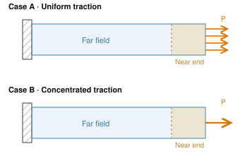
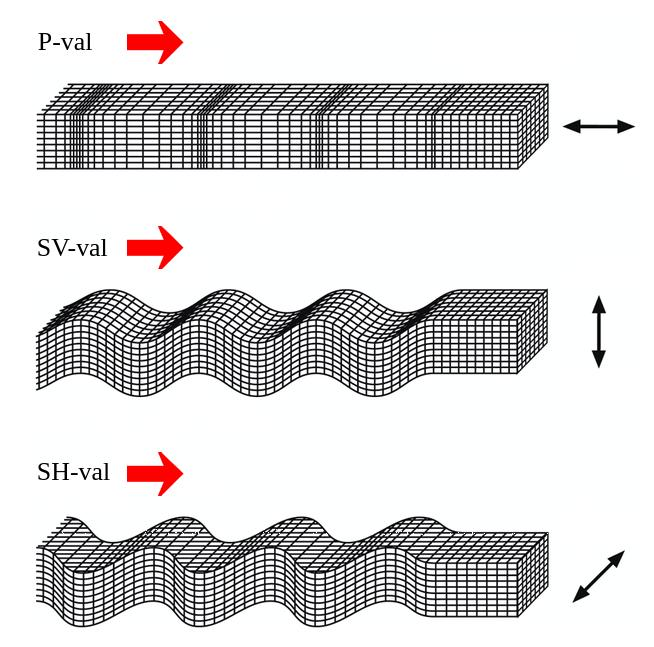
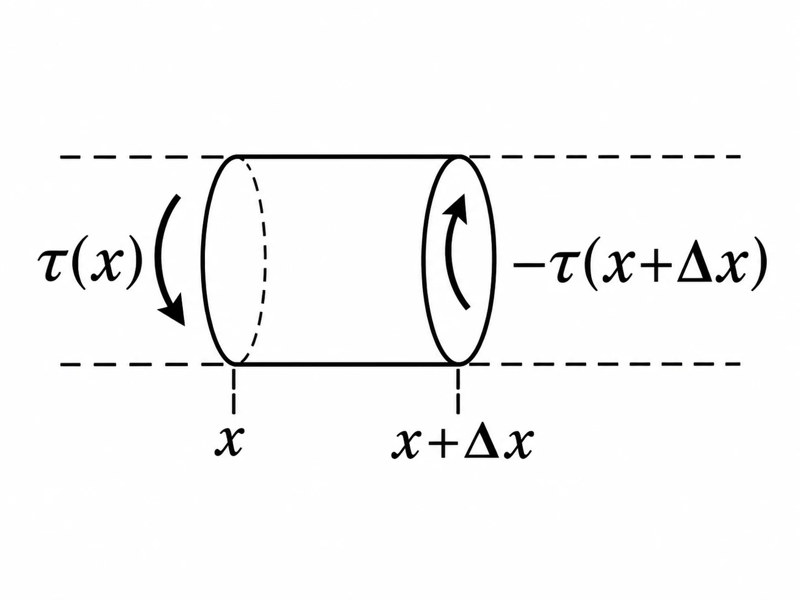

Newtonian Mechanics
Rigid-Body Dynamics
Particle indices $a,b$ range from $1$ to $N$; Cartesian indices $i,j,k$ range from $1$ to $3$. Each dummy index occurs exactly twice in each term. For the constant particle masses, define the symmetric particle-space mass matrix $$M^{\mathrm{p}}_{ab}=m_a\delta_{ab}\qquad\text{(no sum over }a\text{)},$$ and let $e_a=1$ for every particle. Then the total mass is $M=e_aM^{\mathrm{p}}_{ab}e_b$. The entries $r_{ai}$ are the Cartesian components of $\mathbf{r}_a$. The matrix $M^{\mathrm{p}}_{ab}$ acts on particle labels, whereas $I_{ij}$ below acts on Cartesian components.
Rotation Matrices and Chasles' Theorem
Use column vectors of components. A passive change of basis from $\{\hat{e}_1,\hat{e}_2,\hat{e}_3\}$ to $\{\hat{e}_1{}',\hat{e}_2{}',\hat{e}_3{}'\}$ (both orthonormal) is
$$ \begin{pmatrix}\hat{e}_1{}'\\\hat{e}_2{}'\\\hat{e}_3{}'\end{pmatrix}=\overleftrightarrow{A}\begin{pmatrix}\hat{e}_1\\\hat{e}_2\\\hat{e}_3\end{pmatrix},\qquad \overleftrightarrow{A}=\begin{pmatrix}\hat{e}_1{}'\cdot\hat{e}_1&\hat{e}_1{}'\cdot\hat{e}_2&\hat{e}_1{}'\cdot\hat{e}_3\\\hat{e}_2{}'\cdot\hat{e}_1&\hat{e}_2{}'\cdot\hat{e}_2&\hat{e}_2{}'\cdot\hat{e}_3\\\hat{e}_3{}'\cdot\hat{e}_1&\hat{e}_3{}'\cdot\hat{e}_2&\hat{e}_3{}'\cdot\hat{e}_3\end{pmatrix}, $$
with orthogonality $\overleftrightarrow{A}\overleftrightarrow{A}^{T}=\overleftrightarrow{1}$ and $\det \overleftrightarrow{A}=\pm1$. The components of the same physical vector transform as $\mathbf{v}'=\overleftrightarrow{A}\mathbf{v}$. For equally handed bases, $\det \overleftrightarrow{A}=+1$ and $\overleftrightarrow{A}$ is a proper rotation matrix; an orthogonal matrix with determinant $-1$ also includes a reflection.
For a proper rotation in three dimensions, $\overleftrightarrow{A}$ has an eigenvalue $\lambda=1$:
$$ \det(\overleftrightarrow{A}-\overleftrightarrow{1})=\det(\overleftrightarrow{A}-\overleftrightarrow{A}\overleftrightarrow{A}^{T})=\det \overleftrightarrow{A}\cdot\det(\overleftrightarrow{1}-\overleftrightarrow{A}^{T})=\det(\overleftrightarrow{1}-\overleftrightarrow{A})=-\det(\overleftrightarrow{A}-\overleftrightarrow{1})\;\Rightarrow\;\det(\overleftrightarrow{A}-\overleftrightarrow{1})=0 . $$
Thus every non-identity proper rotation has a fixed axis. The identity fixes every direction, so its axis is not unique.
Chasles' theorem. Every orientation-preserving rigid displacement in three dimensions is a screw displacement: a rotation about an axis combined with a translation parallel to that same axis. A pure translation is a limiting case with zero rotation.
In a single fixed coordinate system, write the active displacement as
$$ \mathbf{r}'=\overleftrightarrow{R}\mathbf{r}+\mathbf{a},\qquad \overleftrightarrow{R}^{T}\overleftrightarrow{R}=\overleftrightarrow{1},\qquad \det\overleftrightarrow{R}=1. $$
Here $\overleftrightarrow{R}$ actively moves the points; it is distinct from the passive change-of-basis matrix $\overleftrightarrow{A}$. For a nonzero rotation, decompose $\mathbf{a}=a_\parallel\hat{n}+\mathbf{a}_\perp$ along the fixed direction $\hat{n}$ of $\overleftrightarrow{R}$. Choose $\mathbf{r}_0$ in the perpendicular plane such that $(\overleftrightarrow{1}-\overleftrightarrow{R})\mathbf{r}_0=\mathbf{a}_\perp$. This is possible because $\overleftrightarrow{1}-\overleftrightarrow{R}$ is invertible on that plane. Then
$$ \mathbf{r}'-\mathbf{r}_0=\overleftrightarrow{R}(\mathbf{r}-\mathbf{r}_0)+a_\parallel\hat{n}, $$
which is rotation about the line through $\mathbf{r}_0$ parallel to $\hat{n}$ followed by translation along that line. If $\overleftrightarrow{R}=\overleftrightarrow{1}$, the displacement is simply $\mathbf{a}$.
At each instant, rigid-body motion can also be decomposed into the translation of any chosen body-fixed reference point and rotation relative to that point.
Euler Angles
Use the intrinsic $z$–$x'$–$z''$ Euler-angle convention. The three angles rotate the coordinate axes successively about the fixed space $z$-axis, the intermediate $x$-axis (the line of nodes), and the final body $z$-axis. The passive matrix $\overleftrightarrow{A}$ maps space-frame components to body-frame components; the active orientation matrix is $\overleftrightarrow{A}^{T}$.
- Precession angle $\varphi$ ($0\le\varphi<2\pi$): $\overleftrightarrow{A}_{\varphi}=\begin{pmatrix}\cos\varphi&\sin\varphi&0\\-\sin\varphi&\cos\varphi&0\\0&0&1\end{pmatrix}$
- Nutation angle $\theta$ ($0\le\theta\le\pi$): $\overleftrightarrow{A}_{\theta}=\begin{pmatrix}1&0&0\\0&\cos\theta&\sin\theta\\0&-\sin\theta&\cos\theta\end{pmatrix}$
- Spin angle $\psi$ ($0\le\psi<2\pi$): $\overleftrightarrow{A}_{\psi}=\begin{pmatrix}\cos\psi&\sin\psi&0\\-\sin\psi&\cos\psi&0\\0&0&1\end{pmatrix}$
The full rotation is
$$ \overleftrightarrow{A}=\overleftrightarrow{A}_{\psi} \overleftrightarrow{A}_{\theta} \overleftrightarrow{A}_{\varphi}= \begin{pmatrix} \cos\varphi\cos\psi-\cos\theta\sin\varphi\sin\psi & \sin\varphi\cos\psi+\cos\theta\cos\varphi\sin\psi & \sin\theta\sin\psi\\ -\cos\varphi\sin\psi-\cos\theta\sin\varphi\cos\psi & -\sin\varphi\sin\psi+\cos\theta\cos\varphi\cos\psi & \sin\theta\cos\psi\\ \sin\theta\sin\varphi & -\sin\theta\cos\varphi & \cos\theta \end{pmatrix}. $$
At $\theta=0$, only $\varphi+\psi$ fixes the orientation; at $\theta=\pi$, only $\varphi-\psi$ does. The individual angles are therefore not unique at these poles.
Euler kinematic equations. Resolving $\dot\varphi$, $\dot\theta$, $\dot\psi$ along the body axes,
$$ \begin{cases} \dot\varphi_x=\dot\varphi\sin\theta\sin\psi\\ \dot\theta_x=\dot\theta\cos\psi\\ \dot\psi_x=0 \end{cases} \quad \begin{cases} \dot\varphi_y=\dot\varphi\sin\theta\cos\psi\\ \dot\theta_y=-\dot\theta\sin\psi\\ \dot\psi_y=0 \end{cases} \quad \begin{cases} \dot\varphi_z=\dot\varphi\cos\theta\\ \dot\theta_z=0\\ \dot\psi_z=\dot\psi \end{cases} $$
so
$$ \begin{cases} \omega_x=\dot\varphi\sin\theta\sin\psi+\dot\theta\cos\psi\\ \omega_y=\dot\varphi\sin\theta\cos\psi-\dot\theta\sin\psi\\ \omega_z=\dot\varphi\cos\theta+\dot\psi \end{cases} \;\Rightarrow\; \omega=\sqrt{\dot\varphi^2+\dot\theta^2+\dot\psi^2+2\dot\varphi\dot\psi\cos\theta}. $$
The Inertia Tensor
Take the origin at a point fixed both in the body and in an inertial frame, such as a stationary pivot, with $\mathbf{r}_a$ and $\mathbf{v}_a$ measured from that point. Alternatively, take the origin at the centre of mass and use velocities relative to the centre of mass. In either case, $\mathbf{v}_a=\mathbf{\omega}\times\mathbf{r}_a$, and the angular momentum about the chosen origin is
$$ \mathbf{J}=M^{\mathrm{p}}_{ab}\,\mathbf{r}_a\times\mathbf{v}_b=M^{\mathrm{p}}_{ab}\,\mathbf{r}_a\times(\mathbf{\omega}\times\mathbf{r}_b) =M^{\mathrm{p}}_{ab}\big[(\mathbf{r}_a\cdot\mathbf{r}_b)\mathbf{\omega}-(\mathbf{r}_a\cdot\mathbf{\omega})\mathbf{r}_b\big]. $$
Component-wise, write $x_a=r_{a1}$, $y_a=r_{a2}$, and $z_a=r_{a3}$. Then
$$ J_x=M^{\mathrm{p}}_{ab}(y_a y_b+z_a z_b)\omega_x-M^{\mathrm{p}}_{ab}x_a y_b\,\omega_y-M^{\mathrm{p}}_{ab}x_a z_b\,\omega_z, $$
and similarly for $J_y,J_z$. Defining the inertia tensor
$$ \overleftrightarrow{I}= \begin{pmatrix} M^{\mathrm{p}}_{ab}(y_a y_b+z_a z_b) & -M^{\mathrm{p}}_{ab}x_a y_b & -M^{\mathrm{p}}_{ab}x_a z_b\\ -M^{\mathrm{p}}_{ab}x_a y_b & M^{\mathrm{p}}_{ab}(z_a z_b+x_a x_b) & -M^{\mathrm{p}}_{ab}y_a z_b\\ -M^{\mathrm{p}}_{ab}x_a z_b & -M^{\mathrm{p}}_{ab}y_a z_b & M^{\mathrm{p}}_{ab}(x_a x_b+y_a y_b) \end{pmatrix}, \qquad \mathbf{J}=\overleftrightarrow{I}\,\mathbf{\omega} , $$
Using the symmetry $M^{\mathrm{p}}_{ab}=M^{\mathrm{p}}_{ba}$, this is
$$ I_{ij}=\delta_{ij}M^{\mathrm{p}}_{ab}r_{ak}r_{bk}-M^{\mathrm{p}}_{ab}r_{ai}r_{bj}. $$
For any unit direction $\hat{n}$, $\hat{n}^{T}\overleftrightarrow{I}\hat{n}=M^{\mathrm{p}}_{ab}(\hat{n}\times\mathbf{r}_a)\cdot(\hat{n}\times\mathbf{r}_b)\ge0$. Thus the inertia tensor is positive-semidefinite. It is positive-definite if the mass distribution is not confined to a line through the chosen origin; the top formulas below assume positive principal moments.
Rotational kinetic energy
$$ E_k=\tfrac12M^{\mathrm{p}}_{ab}v_{ai}v_{bi}=\tfrac12M^{\mathrm{p}}_{ab}\mathbf{v}_a\cdot\mathbf{v}_b =\tfrac12M^{\mathrm{p}}_{ab}\mathbf{v}_a\cdot(\mathbf{\omega}\times\mathbf{r}_b) =\tfrac12\mathbf{\omega}\cdot\big[M^{\mathrm{p}}_{ab}(\mathbf{r}_b\times\mathbf{v}_a)\big] =\tfrac12\mathbf{\omega}\cdot\mathbf{J}=\tfrac12\mathbf{\omega}^{T}\overleftrightarrow{I}\,\mathbf{\omega} . $$
For a freely translating rigid body, the total kinetic energy is $T=\tfrac12 M\mathbf{V}_C\cdot\mathbf{V}_C+\tfrac12\mathbf{\omega}^{T}\overleftrightarrow{I}^{C}\mathbf{\omega}$, where $\mathbf{V}_C$ is the centre-of-mass velocity.
Under a proper passive rotation between right-handed orthonormal bases, $\mathbf{\omega}'=\overleftrightarrow{A}\mathbf{\omega}$. Invariance of the rotational kinetic energy gives
$$ E_k=\tfrac12\mathbf{\omega}'^{T}\overleftrightarrow{A}\,\overleftrightarrow{I}\,\overleftrightarrow{A}^{T}\mathbf{\omega}',\qquad \overleftrightarrow{I}{}'=\overleftrightarrow{A}\,\overleftrightarrow{I}\,\overleftrightarrow{A}^{T}. $$
Parallel-axis theorem. Let $\mathbf{a}$ point from the centre of mass $C$ to a new origin $O$, retaining parallel coordinate axes. Then
$$ I_{ij}^{O}=I_{ij}^{C}+M\big(\delta_{ij}a_k a_k-a_i a_j\big). $$
Proof. Write $r_{ai}^{O}=r_{ai}^{C}-e_a a_i$. Then
$$ I_{ij}^{O}=\delta_{ij}M^{\mathrm{p}}_{ab}r_{ak}^{O}r_{bk}^{O}-M^{\mathrm{p}}_{ab}r_{ai}^{O}r_{bj}^{O} =\delta_{ij}M^{\mathrm{p}}_{ab}(r_{ak}^{C}-e_a a_k)(r_{bk}^{C}-e_b a_k)-M^{\mathrm{p}}_{ab}(r_{ai}^{C}-e_a a_i)(r_{bj}^{C}-e_b a_j). $$
Since $e_aM^{\mathrm{p}}_{ab}r_{bk}^{C}=0$ and $M=e_aM^{\mathrm{p}}_{ab}e_b$, the cross terms vanish, leaving $I_{ij}^{O}=I_{ij}^{C}+M(\delta_{ij}a_k a_k-a_i a_j)$. $\square$
Principal axes. Since $\overleftrightarrow{I}$ is real symmetric, choose orthonormal eigenvectors as the columns of $\overleftrightarrow{U}=(\mathbf{X}_1,\mathbf{X}_2,\mathbf{X}_3)$. Then
$$ \overleftrightarrow{U}^{T}\overleftrightarrow{I}\,\overleftrightarrow{U}=\overleftrightarrow{D}=\mathrm{diag}(I_1,I_2,I_3). $$
The eigenvectors are the principal axes. Within a degenerate eigenspace their directions are not unique; their signs can be chosen to give a right-handed frame. A rotational-symmetry axis through the chosen origin is a principal axis. For a thin planar body with the origin in its plane and axis 3 normal to that plane, $I_3=I_1+I_2$, because $\int\rho z^2\,\mathrm{d}V=0$.
The Inertia Ellipsoid
Let the axis $OX$ have direction cosines $(\cos\alpha,\cos\beta,\cos\gamma)$. For a point $P$ at $\mathbf{r}=(x,y,z)$ with $R=r\sin\theta$ the distance from the axis,
$$ \cos\theta=\frac{x\cos\alpha+y\cos\beta+z\cos\gamma}{r},\qquad R^2=r^2-(x\cos\alpha+y\cos\beta+z\cos\gamma)^2=x^2+y^2+z^2-(\dots)^2 . $$
The moment of inertia about $OX$, with $R_a$ the perpendicular distance of particle $a$ from the axis, is
$$ I=M^{\mathrm{p}}_{ab}R_a R_b=I_{11}\cos^2\alpha+I_{22}\cos^2\beta+I_{33}\cos^2\gamma+2I_{12}\cos\alpha\cos\beta+2I_{23}\cos\beta\cos\gamma+2I_{13}\cos\alpha\cos\gamma . $$
Assume the inertia tensor is positive-definite. In an auxiliary coordinate space, take a point along the axis at $\mathbf{OA}=\dfrac{1}{\sqrt I}\hat{n}$, i.e. coordinates $\mathbf{Q}=\left(\dfrac{\cos\alpha}{\sqrt I},\dfrac{\cos\beta}{\sqrt I},\dfrac{\cos\gamma}{\sqrt I}\right)$. These coordinates have units $[I]^{-1/2}$ and are distinct from the physical particle coordinates above. Reusing $x,y,z$ for the auxiliary coordinates gives
$$ I_{11}x^2+I_{22}y^2+I_{33}z^2+2I_{12}xy+2I_{23}yz+2I_{13}zx=1 , $$
an ellipsoid equation. Along any direction, the segment from the centre to the surface is $\ell=1/\sqrt I$; the moment of inertia about that axis is $I=1/\ell^2$. This is the inertia ellipsoid. If a principal moment vanishes, this construction does not give a bounded ellipsoid and the corresponding axis has to be treated separately.
Angular momentum and the ellipsoid. The direction of $\mathbf{J}$ is the surface normal of the inertia ellipsoid at the point where the rotation axis pierces it.
Proof. For $\omega\ne0$, let $\hat{\omega}=\mathbf{\omega}/\omega\parallel\mathbf{OA}$ and write $\mathbf{OA}=C\mathbf{\omega}$, with $C=1/(\omega\sqrt I)$. This also applies when some components of $\mathbf{\omega}$ vanish. Then
$$ J_x=I_{11}\omega_x+I_{12}\omega_y+I_{13}\omega_z=C^{-1}(I_{11}x+I_{12}y+I_{13}z),\quad\text{etc.} $$
The ellipsoid surface $F=I_{11}x^2+I_{22}y^2+I_{33}z^2+2I_{12}xy+2I_{23}yz+2I_{13}zx-1=0$ has gradient
$$ \nabla F=2\big(I_{11}x+I_{12}y+I_{13}z,\;I_{12}x+I_{22}y+I_{23}z,\;I_{13}x+I_{23}y+I_{33}z\big), $$
so $\mathbf{J}\parallel\nabla F$. $\square$ The radial distance is $\ell=|\mathbf{OA}|=1/\sqrt I$. The perpendicular distance from the centre to the tangent plane is instead
$$ d=\mathbf{OA}\cdot\frac{\mathbf{J}}{J}=\frac{\hat{\omega}}{\sqrt I}\cdot\frac{\mathbf{J}}{J}=\frac{\mathbf{\omega}\cdot\mathbf{J}}{\sqrt{2T}\,J}=\frac{\sqrt{2T}}{J},\qquad T=\tfrac12 I\omega^2. $$
In general $d\ne\ell$; they coincide when $\mathbf{\omega}\parallel\mathbf{J}$.
Euler's Dynamical Equations
Use a body frame with principal axes about the centre of mass or a stationary body-fixed pivot. The inertia components are constant in this frame, and $\mathbf{N}$ is the external torque about the same origin. Then
$$ \frac{\mathrm{d}\hat{e}_1}{\mathrm{d}t}=\mathbf{\omega}\times\hat{e}_1=\omega_z\hat{e}_2-\omega_y\hat{e}_3,\quad \frac{\mathrm{d}\hat{e}_2}{\mathrm{d}t}=\omega_x\hat{e}_3-\omega_z\hat{e}_1,\quad \frac{\mathrm{d}\hat{e}_3}{\mathrm{d}t}=\omega_y\hat{e}_1-\omega_x\hat{e}_2 . $$
For $\mathbf{J}=I_1\omega_x\hat{e}_1+I_2\omega_y\hat{e}_2+I_3\omega_z\hat{e}_3$,
$$ \frac{\mathrm{d}\mathbf{J}}{\mathrm{d}t}=\big(I_1\dot\omega_x-(I_2-I_3)\omega_y\omega_z\big)\hat{e}_1+\big(I_2\dot\omega_y-(I_3-I_1)\omega_z\omega_x\big)\hat{e}_2+\big(I_3\dot\omega_z-(I_1-I_2)\omega_x\omega_y\big)\hat{e}_3=\mathbf{N} . $$
Hence Euler's equations
$$ \boxed{\; \begin{cases} I_1\dot\omega_x-(I_2-I_3)\omega_y\omega_z=N_x\\ I_2\dot\omega_y-(I_3-I_1)\omega_z\omega_x=N_y\\ I_3\dot\omega_z-(I_1-I_2)\omega_x\omega_y=N_z \end{cases}\;} $$
The Free (Euler) Top
A free top is a rigid body rotating with no external torque about its centre of mass (or a stationary pivot). With $\mathbf{N}=0$,
$$ \begin{cases} I_1\dot\omega_x-(I_2-I_3)\omega_y\omega_z=0\\ I_2\dot\omega_y-(I_3-I_1)\omega_z\omega_x=0\\ I_3\dot\omega_z-(I_1-I_2)\omega_x\omega_y=0 \end{cases} $$
The Lagrangian (kinetic energy only),
$$ \begin{align*}L&=T=\tfrac12\big(I_1\omega_x^2+I_2\omega_y^2+I_3\omega_z^2\big) \\&=\tfrac12 I_1(\dot\varphi\sin\theta\sin\psi+\dot\theta\cos\psi)^2+\tfrac12 I_2(\dot\varphi\sin\theta\cos\psi-\dot\theta\sin\psi)^2+\tfrac12 I_3(\dot\varphi\cos\theta+\dot\psi)^2 \end{align*} $$
So $\varphi$ is cyclic and
$$ p_\varphi=\frac{\partial T}{\partial\dot\varphi}=I_1\omega_x\sin\theta\sin\psi+I_2\omega_y\sin\theta\cos\psi+I_3\omega_z\cos\theta=\mathbf{J}\cdot\hat{e}_z^{\mathrm{space}}=J_z^{\mathrm{space}}, $$
a constant of motion. The space axes are arbitrary, so all space-frame components of $\mathbf{J}$ are constant, $\mathbf{J}=\text{const}$; its body-frame components need not be constant. In general $\psi$ is not cyclic; it becomes cyclic when $I_1=I_2$. Since $L$ has no explicit time dependence, the energy of the free top is conserved. From
$$ \begin{cases} J^2=I_1^2\omega_x^2+I_2^2\omega_y^2+I_3^2\omega_z^2=J_0^2\\ E=\tfrac12 I_1\omega_x^2+\tfrac12 I_2\omega_y^2+\tfrac12 I_3\omega_z^2=E_0 \end{cases} \;\Rightarrow\; \begin{cases} \omega_x=\pm\sqrt{\dfrac{J_0^2-2E_0 I_3-I_2(I_2-I_3)\omega_y^2}{I_1(I_1-I_3)}}\equiv f_1(\omega_y)\\[2mm] \omega_z=\pm\sqrt{\dfrac{J_0^2-2E_0 I_1-I_2(I_2-I_1)\omega_y^2}{I_3(I_3-I_1)}}\equiv f_2(\omega_y) \end{cases} $$
for $I_1\ne I_3$. If two moments coincide, relabel the symmetry axis as axis 3 and use the symmetric-top solution below; if all three coincide, the body-frame angular velocity is constant. For the branch above, the second Euler equation becomes
$$ I_2\dot\omega_y=(I_3-I_1)f_1(\omega_y)f_2(\omega_y),\qquad t-t_0=\int_{\omega_y(t_0)}^{\omega_y(t)}\frac{I_2}{(I_3-I_1)f_1(u)f_2(u)}\,\mathrm{d}u. $$
This determines $\omega_y(t)$ by quadrature, after which $\omega_x(t)$ and $\omega_z(t)$ follow. The square-root signs are chosen from the initial conditions and continued using Euler's equations through turning points; the quadrature applies on each branch where $f_1f_2\ne0$.
Stability of nonzero free rotation, measured by perturbations of the body-frame angular velocity (assume $I_3>I_2>I_1$):
- About axis 1, $\mathbf{\omega}=\omega_x\hat{e}_1+\lambda\hat{e}_2+\mu\hat{e}_3$ ($\lambda,\mu$ small). Neglecting $\lambda\mu$ (second order), $\omega_x=\text{const}$ and
$$ \ddot\lambda+\frac{(I_3-I_1)(I_2-I_1)}{I_2 I_3}\omega_x^2\lambda=0\;\Rightarrow\;\lambda(t)=Ae^{-i\Omega_1 t}+Be^{i\Omega_1 t},\quad \Omega_1=|\omega_x|\sqrt{\frac{(I_2-I_1)(I_3-I_1)}{I_2 I_3}}\;(\text{real}). $$ Stable (oscillatory).
- About axis 2 ($\mathbf{\omega}=\omega_y\hat{e}_2$): $\Omega_2=|\omega_y|\sqrt{\dfrac{(I_1-I_2)(I_3-I_2)}{I_1 I_3}}$ is imaginary → unstable.
- About axis 3 ($\mathbf{\omega}=\omega_z\hat{e}_3$): $\Omega_3=|\omega_z|\sqrt{\dfrac{(I_1-I_3)(I_2-I_3)}{I_1 I_2}}$ is real → stable.
So rotation about the axes of largest and smallest moment of inertia is stable; rotation about the intermediate axis is unstable (the tennis-racket theorem).
The Symmetric (Euler) Top, $I_1=I_2$
$$ T=\tfrac12 I_1(\dot\theta^2+\dot\varphi^2\sin^2\theta)+\tfrac12 I_3(\dot\psi+\dot\varphi\cos\theta)^2 . $$
With $\mathbf{N}=0$ and $I_1=I_2$,
$$ \begin{cases} I_1\dot\omega_x-(I_1-I_3)\omega_y\omega_z=0\\ I_1\dot\omega_y-(I_3-I_1)\omega_z\omega_x=0\\ I_3\dot\omega_z=0 \end{cases} \;\Rightarrow\; \omega_z=\text{const}\equiv\omega_{z0},\qquad \begin{cases} \dot\omega_x=-\dfrac{I_3-I_1}{I_1}\omega_{z0}\,\omega_y\\[2mm] \dot\omega_y=\dfrac{I_3-I_1}{I_1}\omega_{z0}\,\omega_x \end{cases} $$
Writing $\Omega=\dfrac{I_3-I_1}{I_1}\omega_{z0}$ and choosing the transverse amplitude $A\ge0$,
$$ \begin{cases}\omega_x=A\cos(\Omega t+\beta_0)\\\omega_y=A\sin(\Omega t+\beta_0)\end{cases} \qquad \omega=\sqrt{A^2+\omega_{z0}^2}. $$
For $J>0$, choose the space $z$-axis along $\mathbf{J}$, so its space-frame components are $(0,0,J)$. In the body frame, $J_x^{\mathrm{body}}=J\sin\theta_0\sin\psi=I_1\omega_x$, $J_y^{\mathrm{body}}=J\sin\theta_0\cos\psi=I_1\omega_y$, $J_z^{\mathrm{body}}=J\cos\theta_0=I_3\omega_{z0}$. Thus $\cos\theta_0=\dfrac{I_3\omega_{z0}}{J}=\text{const}$, and, when $A>0$ (so $\sin\theta_0>0$),
$$ \begin{cases} \sin\psi=\cos(\Omega t+\beta_0)\\ \cos\psi=\sin(\Omega t+\beta_0) \end{cases} \;\Rightarrow\; A=\frac{J\sin\theta_0}{I_1},\qquad \psi=\frac{\pi}{2}-\Omega t-\beta_0 . $$
For $0<\theta_0<\pi$, the kinematic equations also give
$$ \dot\varphi=\frac{J}{I_1},\qquad \varphi(t)=\frac{J}{I_1}t+\varphi_0,\qquad \dot\psi=-\Omega. $$
Thus the body symmetry axis precesses uniformly about the fixed angular momentum, at the space-frame rate $J/I_1$. The signed rate $\Omega$ describes the transverse angular velocity in the body frame and is a different quantity.
If $A=0$ and $J>0$, rotation is purely about the symmetry axis: $\theta_0=0$ or $\pi$, and the separate Euler angles $\varphi,\psi$ are not unique. If $J=0$, all angular velocities vanish. For a spherical top, $I_1=I_2=I_3$, $\Omega=0$ and every body-frame component of $\mathbf{\omega}$ is constant.
Stability: for a perturbation $\lambda\hat{e}_2+\mu\hat{e}_3$ about $\mathbf{\omega}=\omega_x\hat{e}_1$, $\dot\lambda=\dfrac{I_3-I_1}{I_1}\omega_x\mu$, $\dot\mu=0\Rightarrow\mu=\text{const}$, $\lambda=Ct+D$ — the linearized disturbance about a particular equatorial rotation grows linearly in time when $C\ne0$. For $I_3\ne I_1$ and $\omega_x\ne0$, a small out-of-plane perturbation causes a slow drift of the equatorial direction, so that particular angular-velocity equilibrium is unstable. This differs from the exponential instability of a distinct intermediate axis; the angular velocity can remain close to the equatorial plane while drifting away from its original direction. For a perturbation about $\mathbf{\omega}=\omega_z\hat{e}_3$, $\Omega_3=|\omega_z|\dfrac{|I_3-I_1|}{I_1}$ is real and transverse perturbations remain bounded. In the spherical limit the frequency is zero and the perturbed body-frame angular velocity remains constant.
The Lagrange Top (Symmetric Top under Gravity)
The Lagrange top is a symmetric rigid body ($I_1=I_2$) in a uniform gravitational field, with both its fixed point and centre of mass on the symmetry axis and separated by a distance $l$. Here $I_1,I_2,I_3$ are moments of inertia about the fixed point; if centre-of-mass moments are given, $I_1^{O}=I_1^{C}+ml^2$ and $I_3^{O}=I_3^{C}$. Take the space $z$-axis vertically upward and the body symmetry axis from the fixed point toward the centre of mass, so $V=mgl\cos\theta$:
$$ L=T-V=\tfrac12 I_1(\dot\theta^2+\dot\varphi^2\sin^2\theta)+\tfrac12 I_3(\dot\psi+\dot\varphi\cos\theta)^2-mgl\cos\theta . $$
Conserved momenta ($\varphi,\psi$ cyclic):
$$ p_\varphi=\frac{\partial L}{\partial\dot\varphi}=(I_1\sin^2\theta+I_3\cos^2\theta)\dot\varphi+I_3\dot\psi\cos\theta=J_z, \tag{1} $$ $$ p_\psi=\frac{\partial L}{\partial\dot\psi}=I_3(\dot\psi+\dot\varphi\cos\theta)=J_{z'} . \tag{2} $$
Since $L$ has no explicit time dependence, energy is conserved:
$$ E=\tfrac12 I_1(\dot\theta^2+\dot\varphi^2\sin^2\theta)+\tfrac12 I_3(\dot\psi+\dot\varphi\cos\theta)^2+mgl\cos\theta=\text{const}. \tag{3} $$
Equations (1), (2), and (3) are three first integrals of the motion. The remaining Euler–Lagrange equation is
$$ I_1\ddot\theta=\sin\theta\left[I_1\dot\varphi^2\cos\theta-J_{z'}\dot\varphi+mgl\right]. $$
This second-order equation fixes the continuation through turning points and must also hold for steady precession. For $0<\theta<\pi$, the conserved momenta give
$$ p_\theta=\frac{\partial L}{\partial\dot\theta}=I_1\dot\theta\;\Rightarrow\;\dot\theta=\frac{p_\theta}{I_1},\qquad \dot\varphi=\frac{J_z-J_{z'}\cos\theta}{I_1\sin^2\theta},\qquad \dot\psi=\frac{J_{z'}}{I_3}-\frac{J_z-J_{z'}\cos\theta}{I_1\sin^2\theta}\cos\theta . $$
The Hamiltonian reduction gives an effective one-dimensional problem in $\theta$:
$$ H=\dot\theta p_\theta+\dot\varphi p_\varphi+\dot\psi p_\psi-L=\frac{p_\theta^2}{2I_1}+\frac{(p_\varphi-p_\psi\cos\theta)^2}{2I_1\sin^2\theta}+\frac{p_\psi^2}{2I_3}+mgl\cos\theta, $$
so
$$ \frac{p_\theta^2}{2I_1}=E-\frac{(J_z-J_{z'}\cos\theta)^2}{2I_1\sin^2\theta}-\frac{J_{z'}^2}{2I_3}-mgl\cos\theta\ge 0 \;\Rightarrow\;\theta\in[\theta_1,\theta_2], $$
For generic nutating motion, the angle is confined to the allowed interval between two turning angles. To identify steady precession, a double turning point must also satisfy $\mathrm{d}V_{\mathrm{eff}}/\mathrm{d}\theta=0$, where
$$ V_{\mathrm{eff}}(\theta)=\frac{(J_z-J_{z'}\cos\theta)^2}{2I_1\sin^2\theta}+mgl\cos\theta. $$
Equivalently, at a constant angle $0<\theta_0<\pi$ the precession rate satisfies
$$ I_1\dot\varphi^2\cos\theta_0-J_{z'}\dot\varphi+mgl=0. $$
The expressions with $\sin^2\theta$ in the denominator are Euler-coordinate formulas and do not apply directly at the poles. Finite energy can reach $\theta=0$ only if $J_z=J_{z'}$, and $\theta=\pi$ only if $J_z=-J_{z'}$. Vertical rotation must be described using nonsingular coordinates or vector equations; the individual $\varphi$ and $\psi$ are not defined there.
Newton's Laws
In an inertial frame, for a particle of constant mass $m$,
$$ \begin{cases} \mathbf{F}=0 \;\Rightarrow\; \dfrac{\mathrm{d}\mathbf{v}}{\mathrm{d}t}=0 & \text{(law of inertia)}\\[2mm] \mathbf{F}=m\mathbf{a} & \text{(equation of motion)}\\[2mm] \mathbf{F}_{12}=-\mathbf{F}_{21} & \text{(third law)} \end{cases} $$
Here $\mathbf{F}$ is the resultant force; $\mathbf{F}_{12}$ is the force on particle 1 exerted by particle 2, and $\mathbf{F}_{21}$ is the reverse interaction force.
Kinetic Energy (TODO)
Momentum (TODO)
Angular Momentum (TODO)
- Definition $\mathbf{L}=\mathbf{r}\times\mathbf{p}$ and torque $\mathbf{\tau}=\dfrac{\mathrm{d}\mathbf{L}}{\mathrm{d}t}$ about a fixed origin in an inertial frame.
- Conservation when the net external torque vanishes, provided internal pair forces are equal, opposite, and central; for one particle, a force directed through the chosen origin exerts no torque.
Gravitation (TODO)
Elasticity
Introduction to Stress
Prerequisites for Stress
- Body force: a force that acts throughout an object's volume without direct contact, e.g. gravity.
- Surface force: a contact force acting across a surface, e.g. pressure or friction.
To describe the stress at a point, consider an infinitesimal cube surrounding it. 
The stress state is described by the Cauchy stress tensor $$\overleftrightarrow{\sigma}=(\sigma_{ij})=\begin{pmatrix} \sigma_{11} & \sigma_{12} & \sigma_{13}\\ \sigma_{21} & \sigma_{22} & \sigma_{23}\\ \sigma_{31} & \sigma_{32} & \sigma_{33} \end{pmatrix}.$$ For normal stress, tension is taken as positive and compression as negative. A component $\sigma_{ij}$ denotes the $i$-component of traction acting on the face whose outward unit normal is $\hat{e}_j$; when $i\ne j$ it is a shear stress. The traction reverses on the opposite face, whose normal is $-\hat{e}_j$.
For a static element, taking moments about the $x_3$-axis through a corner, with stresses evaluated at the point to leading order, gives $$(\sigma_{21}\cdot\mathrm{d}x_2\mathrm{d}x_3)\mathrm{d}x_1-(\sigma_{12}\cdot\mathrm{d}x_1\mathrm{d}x_3)\mathrm{d}x_2-(f_1\cdot\mathrm{d}x_1\mathrm{d}x_2\mathrm{d}x_3)\frac{\mathrm{d}x_2}{2}+(f_2\cdot\mathrm{d}x_1\mathrm{d}x_2\mathrm{d}x_3)\frac{\mathrm{d}x_1}{2}=0$$ Neglecting higher-order terms as the element shrinks gives $$\sigma_{12}=\sigma_{21}$$ Similarly, $$\sigma_{13}=\sigma_{31}$$ $$\sigma_{23}=\sigma_{32}$$ The same conclusion follows in dynamics because the inertial moment, like the body-force moment and the omitted stress-gradient terms, is of higher order than the leading shear-stress moments. Thus, in a classical Cauchy continuum without body couples or couple stresses, the stress tensor is symmetric. This is the shear-stress reciprocity theorem: corresponding shear stresses on two mutually perpendicular faces are equal.
Therefore, a three-dimensional stress tensor has six independent components.
Cauchy's Stress Formula
Consider an inclined plane with unit normal $\hat{n}$.  Let $\mathbf{f}$ be the body force per unit volume. First take $n_i\ge0$, so the tetrahedron's coordinate faces have outward normals $-\hat{e}_i$, areas $\mathrm{d}S_i=n_i\mathrm{d}S$, and tractions $-\mathbf{t}^{(\hat{e}_i)}$. With $h$ the perpendicular height from the opposite vertex to the inclined face, force balance gives, to leading order, $$\mathbf{t}^{(\hat{n})}\mathrm{d}S-\mathbf{t}^{(\hat{e}_i)}\mathrm{d}S_i+\mathbf{f}\mathrm{d}V=\rho\mathbf{a}\mathrm{d}V$$ $$\mathbf{t}^{(\hat{n})}\mathrm{d}S-\mathbf{t}^{(\hat{e}_i)}\mathrm{d}S_i+(\mathbf{f}-\rho\mathbf{a})\frac{1}{3}h\mathrm{d}S=0$$ Letting $h\to0$ gives Cauchy's stress formula $$\boxed{\,t_i^{(\hat{n})}=\sigma_{ij}n_j\,},\qquad \mathbf{t}^{(\hat{n})}=\overleftrightarrow{\sigma}\hat{n}.$$
Let $\mathbf{f}$ be the body force per unit volume. First take $n_i\ge0$, so the tetrahedron's coordinate faces have outward normals $-\hat{e}_i$, areas $\mathrm{d}S_i=n_i\mathrm{d}S$, and tractions $-\mathbf{t}^{(\hat{e}_i)}$. With $h$ the perpendicular height from the opposite vertex to the inclined face, force balance gives, to leading order, $$\mathbf{t}^{(\hat{n})}\mathrm{d}S-\mathbf{t}^{(\hat{e}_i)}\mathrm{d}S_i+\mathbf{f}\mathrm{d}V=\rho\mathbf{a}\mathrm{d}V$$ $$\mathbf{t}^{(\hat{n})}\mathrm{d}S-\mathbf{t}^{(\hat{e}_i)}\mathrm{d}S_i+(\mathbf{f}-\rho\mathbf{a})\frac{1}{3}h\mathrm{d}S=0$$ Letting $h\to0$ gives Cauchy's stress formula $$\boxed{\,t_i^{(\hat{n})}=\sigma_{ij}n_j\,},\qquad \mathbf{t}^{(\hat{n})}=\overleftrightarrow{\sigma}\hat{n}.$$
Here $\mathbf{t}^{(\hat{n})}$ is the traction vector on the inclined plane, and $t_i^{(\hat{e}_j)}=\sigma_{ij}$. Reorienting the coordinate faces gives the same formula for arbitrary signs of $n_j$.
Decompose $\mathbf{t}^{(\hat{n})}$ into its normal and tangential parts: $$\mathbf{t}^{(\hat{n})}=\sigma_n\hat{n}+\mathbf{\tau},\qquad \sigma_n=\mathbf{t}^{(\hat{n})}\cdot\hat{n} =\hat{n}^\top\overleftrightarrow{\sigma}\hat{n},$$ $$\mathbf{\tau}=\mathbf{t}^{(\hat{n})}-\sigma_n\hat{n},\qquad \tau_n=\|\mathbf{\tau}\|.$$
If $\mathbf{\tau}=0$, then $$\overleftrightarrow{\sigma}\hat{n}=\sigma_n\hat{n},$$ so $\hat{n}$ is a principal direction and $\sigma_n$ is the corresponding principal stress.
Principal Stress
Because $\overleftrightarrow{\sigma}$ is real and symmetric, the spectral theorem in Hermitian Operators (TODO) guarantees an orthogonal matrix $\overleftrightarrow{Q}$ such that
$$\boxed{ \overleftrightarrow{Q}^\top\overleftrightarrow{\sigma}\overleftrightarrow{Q} = \begin{pmatrix} \sigma_1&0&0\\ 0&\sigma_2&0\\ 0&0&\sigma_3 \end{pmatrix} }.$$ The eigenvectors define the principal stress directions, and the eigenvalues $\sigma_1,\sigma_2,\sigma_3$ are the principal stresses.
The three principal invariants of $\overleftrightarrow{\sigma}$ are $$I_1=\operatorname{tr}(\overleftrightarrow{\sigma})=\sigma_1+\sigma_2+\sigma_3,$$ $$I_2=\frac12\left[(\operatorname{tr}\overleftrightarrow{\sigma})^2-\operatorname{tr}(\overleftrightarrow{\sigma}^2)\right] =\sigma_1\sigma_2+\sigma_2\sigma_3+\sigma_3\sigma_1,$$ $$I_3=\det(\overleftrightarrow{\sigma})=\sigma_1\sigma_2\sigma_3.$$
Define the mean stress $\sigma_m=I_1/3$. The stress tensor decomposes into a spherical (hydrostatic) part and a deviatoric part: $$\overleftrightarrow{\sigma}=\overleftrightarrow{\sigma}^{\mathrm{sph}}+\overleftrightarrow{s},\qquad \overleftrightarrow{\sigma}^{\mathrm{sph}}=\sigma_m\overleftrightarrow{I},\qquad s_{ij}=\sigma_{ij}-\sigma_m\delta_{ij}.$$ For isotropic linear elasticity, the spherical part governs volume change and the deviatoric part governs shape change. Anisotropic constitutive laws may couple these responses.
The invariants of the deviatoric stress are $$J_1=\operatorname{tr}(\overleftrightarrow{s})=0,$$ $$J_2=\frac12s_{ij}s_{ij} =\frac16\left[(\sigma_1-\sigma_2)^2+(\sigma_2-\sigma_3)^2+(\sigma_3-\sigma_1)^2\right],$$ $$J_3=\det(\overleftrightarrow{s}) =\frac{1}{27}(2\sigma_1-\sigma_2-\sigma_3)(2\sigma_2-\sigma_3-\sigma_1)(2\sigma_3-\sigma_1-\sigma_2).$$
For an auxiliary vector $\mathbf{q}=(q_1,q_2,q_3)^\top$, whose components have units of inverse square root of stress, consider the quadric $$\mathbf{q}^\top\overleftrightarrow{\sigma}\mathbf{q}=1.$$ Expanding gives $$\boxed{ \sigma_{11}q_1^2+ \sigma_{22}q_2^2+ \sigma_{33}q_3^2 + 2\sigma_{12}q_1q_2 + 2\sigma_{13}q_1q_3 + 2\sigma_{23}q_2q_3 =1 }$$ This surface is the Cauchy stress quadric. Depending on the signs of the principal stresses, it may be an ellipsoid, a hyperboloid, or a degenerate quadric; it has no real points when all principal stresses are negative.
This is an abstract representation of the stress at a point, rather than a surface of physical positions in the body. For a direction with $\sigma_n>0$, the ray $\mathbf{q}=R\hat{n}$ intersects this quadric, and we have $$\hat{n}^\top\overleftrightarrow{\sigma}\hat{n}=\frac{1}{R^2}=\sigma_n.$$
In principal coordinates, $$\sigma_1q_1^2+\sigma_2q_2^2+\sigma_3q_3^2=1.$$
Mohr's Circle
For a two-dimensional stress tensor $$\overleftrightarrow{\sigma}=\begin{pmatrix}\sigma_{11}&\sigma_{12}\\\sigma_{12}&\sigma_{22}\end{pmatrix},$$ let $\hat{n}=(\cos\theta,\sin\theta)^\top$ and $\hat{m}=(-\sin\theta,\cos\theta)^\top$. Write $\tau=\hat{m}^\top\overleftrightarrow{\sigma}\hat{n}$ for the signed shear stress; the shear magnitude defined above is $\tau_n=|\tau|$. We have $$\begin{align*}\sigma_n&=\hat{n}^\top\overleftrightarrow{\sigma}\hat{n}=\begin{pmatrix} \cos \theta &\sin \theta\end{pmatrix}\begin{pmatrix} \sigma_{11}&\sigma_{12}\\ \sigma_{12}&\sigma_{22} \end{pmatrix}\begin{pmatrix} \cos \theta \\\sin \theta \end{pmatrix}\\&=\sigma_{11}\cos^2\theta + 2\sigma_{12}\sin\theta\cos\theta + \sigma_{22}\sin^2\theta\\&=\frac{\sigma_{11}+\sigma_{22}}{2} + \frac{\sigma_{11}-\sigma_{22}}{2}\cos2\theta + \sigma_{12}\sin2\theta .\end{align*}$$ $$\begin{align*}\tau&=\hat{m}^\top\overleftrightarrow{\sigma}\hat{n}=\begin{pmatrix} -\sin \theta & \cos \theta\end{pmatrix}\begin{pmatrix} \sigma_{11}&\sigma_{12}\\ \sigma_{12}&\sigma_{22} \end{pmatrix}\begin{pmatrix} \cos \theta \\\sin \theta \end{pmatrix}\\&=-\sigma_{11}\sin\theta\cos\theta - \sigma_{12}\sin^2\theta +\sigma_{12}\cos^2\theta + \sigma_{22}\sin\theta\cos \theta\\&=-\frac{\sigma_{11}-\sigma_{22}}{2}\sin2\theta+\sigma_{12}\cos2\theta \end{align*}$$ Therefore, $$(\sigma_n-\frac{\sigma_{11}+\sigma_{22}}{2})^2+\tau^2=(\frac{\sigma_{11}-\sigma_{22}}{2})^2+\sigma_{12}^2$$ This is the equation of Mohr's circle, which gives a geometric representation of the stress transformation.
For a three-dimensional stress state in principal coordinates, $$\left\{\begin{matrix} \|\mathbf{t}^{(\hat{n})}\|^2=\sigma_n^2+\tau_n^2=\sum_{i=1}^{3}\sigma_i^2n_i^2\\ \sigma_n=\sum_{i=1}^{3}\sigma_i n_i^2 \\ n_1^2+n_2^2+n_3^2=1 \end{matrix}\right.$$ When the three principal stresses are distinct, solving for the squared direction cosines gives $$\left\{\begin{matrix} n_1^2=\frac{\tau_n^2+(\sigma_n-\sigma_2)(\sigma_n-\sigma_3)}{(\sigma_1-\sigma_2)(\sigma_1-\sigma_3)}\\ n_2^2=\frac{\tau_n^2+(\sigma_n-\sigma_3)(\sigma_n-\sigma_1)}{(\sigma_2-\sigma_3)(\sigma_2-\sigma_1)} \\ n_3^2=\frac{\tau_n^2+(\sigma_n-\sigma_1)(\sigma_n-\sigma_2)}{(\sigma_3-\sigma_1)(\sigma_3-\sigma_2)} \end{matrix}\right.$$ Setting one $n_i$ to zero gives the corresponding principal-stress Mohr circle; because $\tau_n\ge0$, the shear-magnitude representation occupies its upper semicircle. Feasible three-dimensional traction states must satisfy $n_i^2\ge0$. For repeated principal stresses, use the preceding relations directly rather than dividing by a vanishing stress difference.
Cauchy Momentum Equation
For example, the difference between the normal forces on the two faces perpendicular to $x_1$ is $$(\sigma_{11}(x_1+\mathrm{d}x_1)-\sigma_{11}(x_1))\mathrm{d}x_2\mathrm{d}x_3 =\frac{\partial\sigma_{11}}{\partial x_1}\mathrm{d}V.$$ Applying linear-momentum balance in every direction gives the Cauchy momentum equation $$\boxed{\frac{\partial\sigma_{ij}}{\partial x_j}+f_i=\rho \ddot{u_i} }.$$ For static equilibrium, $\ddot{u_i}=0$, so $\partial_j\sigma_{ij}+f_i=0$.
Introduction to Strain
Prerequisites for Strain
In this section, assume a small displacement gradient, $\|\nabla\mathbf{u}\|\ll1$, so both strains and rotations are infinitesimal. Small strain alone does not justify this approximation when rigid rotations are finite. In the linearized formulas, $\mathbf{x}$ labels the reference position; the distinction between reference and current coordinates is neglected to the retained order. A comma denotes differentiation, $u_{i,j}=\partial u_i/\partial x_j$.
Let $\mathbf{u}(\mathbf{x})$ be the displacement field. Its displacement gradient is $$\nabla\mathbf{u}=\left(\frac{\partial u_i}{\partial x_j}\right)=\begin{pmatrix} \frac{\partial u_1}{\partial x_1} & \frac{\partial u_1}{\partial x_2} & \frac{\partial u_1}{\partial x_3}\\ \frac{\partial u_2}{\partial x_1} & \frac{\partial u_2}{\partial x_2} & \frac{\partial u_2}{\partial x_3}\\ \frac{\partial u_3}{\partial x_1} & \frac{\partial u_3}{\partial x_2} & \frac{\partial u_3}{\partial x_3}\\ \end{pmatrix}$$ It decomposes uniquely into symmetric and antisymmetric parts.
The infinitesimal strain tensor is $$\overleftrightarrow{D}=\overleftrightarrow{\epsilon},\qquad \epsilon_{ij}=\frac12(u_{i,j}+u_{j,i}),\qquad\overleftrightarrow{\epsilon}=\begin{pmatrix} \frac{\partial u_1}{\partial x_1} & \frac{1}{2}(\frac{\partial u_1}{\partial x_2}+\frac{\partial u_2}{\partial x_1}) & \frac{1}{2}(\frac{\partial u_1}{\partial x_3}+\frac{\partial u_3}{\partial x_1})\\ \frac{1}{2}(\frac{\partial u_1}{\partial x_2}+\frac{\partial u_2}{\partial x_1}) & \frac{\partial u_2}{\partial x_2} & \frac{1}{2}(\frac{\partial u_2}{\partial x_3}+\frac{\partial u_3}{\partial x_2})\\ \frac{1}{2}(\frac{\partial u_1}{\partial x_3}+\frac{\partial u_3}{\partial x_1}) & \frac{1}{2}(\frac{\partial u_2}{\partial x_3}+\frac{\partial u_3}{\partial x_2}) & \frac{\partial u_3}{\partial x_3}\\ \end{pmatrix}$$ The infinitesimal rotation tensor is $$\overleftrightarrow{R}=(\omega_{ij}),\qquad \omega_{ij}=\frac12(u_{i,j}-u_{j,i}),\qquad\overleftrightarrow{R}=\begin{pmatrix} 0 & \frac{1}{2}(\frac{\partial u_1}{\partial x_2}-\frac{\partial u_2}{\partial x_1}) & \frac{1}{2}(\frac{\partial u_1}{\partial x_3}-\frac{\partial u_3}{\partial x_1})\\ \frac{1}{2}(\frac{\partial u_2}{\partial x_1}-\frac{\partial u_1}{\partial x_2}) & 0 & \frac{1}{2}(\frac{\partial u_2}{\partial x_3}-\frac{\partial u_3}{\partial x_2})\\ \frac{1}{2}(\frac{\partial u_3}{\partial x_1}-\frac{\partial u_1}{\partial x_3}) & \frac{1}{2}(\frac{\partial u_3}{\partial x_2}-\frac{\partial u_2}{\partial x_3}) & 0\\ \end{pmatrix}$$ Thus $$\nabla\mathbf{u}=\overleftrightarrow{D}+\overleftrightarrow{R},$$ $$\mathrm{d}\mathbf{u}=\overleftrightarrow{D}\,\mathrm{d}\mathbf{x}+\overleftrightarrow{R}\,\mathrm{d}\mathbf{x} =\mathrm{d}\mathbf{u}_D+\mathrm{d}\mathbf{u}_R.$$ For a reference line element $\mathrm{d}\mathbf{x}=\hat{n}\,\mathrm{d}s$, with direction cosines $n_j$, the strain contribution is $$\mathrm{d}u_{Di}=\epsilon_{ij}n_j\,\mathrm{d}s.$$ The antisymmetric rotation tensor has three independent components. Define its axial vector by $$\Omega_k=-\frac12\varepsilon_{kij}\omega_{ij},$$ where $\varepsilon_{kij}$ is the Levi-Civita symbol.
Then $$\left\{\begin{matrix} \Omega_1=\omega_{32}=-\omega_{23}, \\ \Omega_2=\omega_{13}=-\omega_{31},\\ \Omega_3=\omega_{21}=-\omega_{12} \end{matrix}\right.$$ and $$\mathbf{\Omega}=\frac12\nabla\times\mathbf{u},$$ $$\mathrm{d}\mathbf{u}_R=\overleftrightarrow{R}\,\mathrm{d}\mathbf{x} =\mathbf{\Omega}\times\mathrm{d}\mathbf{x}.$$
The antisymmetric part describes the local infinitesimal rotation, which does not change lengths or angles to first order. The symmetric part describes infinitesimal strain. A spatially varying rotation field need not represent a single rigid rotation of the whole body.
Infinitesimal Strain
Geometrically, strain describes changes in the lengths of material line elements and in the angles between them.
Normal strain measures relative extension or shortening. If a short material segment has initial length $L_0$ and deformed length $L=L_0+\Delta L$, its normal strain is $$\boxed{\epsilon_n=\frac{\Delta L}{L_0}=\frac{L-L_0}{L_0}}.$$ Positive strain means extension, and negative strain means shortening; the denominator is the original length. For a segment initially directed along the unit vector $\hat{n}$, the small-displacement-gradient approximation gives $$\epsilon_n\approx n_i\epsilon_{ij}n_j.$$ Along the coordinate direction $x_i$, this reduces to $\epsilon_n\approx\epsilon_{ii}$ (no summation over $i$). Stretching a square into a rectangle illustrates normal strain: its side lengths change while its right angles can remain unchanged.
Engineering shear strain measures the signed decrease in the angle between two material line elements that start at the same material point and initially point along $+x_i$ and $+x_j$ ($i\ne j$). If the angle between these two directed line elements after deformation is $\theta_{ij}$, define $$\boxed{\gamma_{ij}=\Delta\theta_{ij}=\frac{\pi}{2}-\theta_{ij}},\qquad i\ne j.$$ Angles are measured in radians. Positive shear strain makes this angle acute; negative shear strain makes it obtuse. Sliding the top edge of a square sideways turns it into a parallelogram and illustrates this angle change. Both normal strain and engineering shear strain are dimensionless.

For small deformation, the changes in angle of two initially perpendicular line elements along $x_1$ and $x_2$ are approximately $$\alpha\approx\frac{\partial u_2}{\partial x_1},\qquad \beta\approx\frac{\partial u_1}{\partial x_2}.$$ To first order, their angle decrease gives $$\gamma_{12}=\alpha+\beta =\frac{\partial u_2}{\partial x_1}+\frac{\partial u_1}{\partial x_2} =2\epsilon_{12}.$$ Thus the off-diagonal tensor component $\epsilon_{12}$ is half the engineering shear strain. Similarly, $\gamma_{23}=2\epsilon_{23}$ and $\gamma_{31}=2\epsilon_{31}$.
As with stress, the eigenvalues $\epsilon_1,\epsilon_2,\epsilon_3$ are the principal strains. The strain invariants are $$I_1'=\operatorname{tr}(\overleftrightarrow{D})=\epsilon_1+\epsilon_2+\epsilon_3$$ $$I_2'=\frac12\left[(\operatorname{tr}\overleftrightarrow{D})^2-\operatorname{tr}(\overleftrightarrow{D}^{\,2})\right] =\epsilon_1\epsilon_2+\epsilon_2\epsilon_3+\epsilon_3\epsilon_1$$ $$I_3'=\det(\overleftrightarrow{D})=\epsilon_1\epsilon_2\epsilon_3$$ For an orientation-preserving deformation of a local material element, the exact volume ratio is determined by the deformation gradient. With reference coordinates $\mathbf{X}$ and deformed position $\mathbf{x}=\mathbf{X}+\mathbf{u}(\mathbf{X})$, $$\overleftrightarrow{F}=\overleftrightarrow{I}+\nabla_{\mathbf{X}}\mathbf{u},\qquad \frac{V'-V}{V}=\det\overleftrightarrow{F}-1.$$ The eigenvalues of the infinitesimal strain tensor are not finite principal extensions, so retaining higher-order products of $\epsilon_1,\epsilon_2,\epsilon_3$ does not generally give the exact volume change. Under the small-displacement-gradient approximation, only first-order terms are retained, and the volumetric strain is $$\boxed{\theta=\frac{V'-V}{V}\approx I_1'=\operatorname{tr}(\overleftrightarrow{\epsilon})=\nabla\cdot\mathbf{u}}.$$ Within the linearized theory below, write $\theta=\epsilon_{kk}=\nabla\cdot\mathbf{u}$, retaining only the first-order volume change. The strain tensor can likewise be decomposed into spherical and deviatoric parts. Its planar transformation can be represented by Mohr's circle for strain.
Coordinate System Transformation
For a Cartesian coordinate transformation, let $$\alpha_{ki}=\cos(x_k',x_i),\qquad \overleftrightarrow{A}=(\alpha_{ki}).$$ Then $u_k'=\alpha_{ki}u_i$. Since $\overleftrightarrow{\epsilon}$ is a second-order tensor, $$\boxed{\epsilon_{kl}'=\alpha_{ki}\alpha_{lj}\epsilon_{ij}}, \qquad \overleftrightarrow{\epsilon}'=\overleftrightarrow{A}\overleftrightarrow{\epsilon}\overleftrightarrow{A}^\top.$$ The rotation tensor transforms in the same way: $$\omega_{kl}'=\alpha_{ki}\alpha_{lj}\omega_{ij}.$$
Strain Rosette
For a planar state, rotate the coordinate axes through an angle $\theta$: $$\epsilon_{11}'=\epsilon_{11}\cos^2\theta +2\epsilon_{12}\cos\theta\sin\theta +\epsilon_{22}\sin^2\theta$$ $$\epsilon_{12}'=-\epsilon_{11}\sin\theta\cos\theta+\epsilon_{12}(\cos^2\theta-\sin^2\theta)+\epsilon_{22}\sin\theta\cos\theta$$ If $x_1,x_2$ are principal directions, then $$\epsilon_{11}'=\epsilon_{11}\cos^2\theta+\epsilon_{22}\sin^2\theta=\frac{1}{2}(\epsilon_1+\epsilon_2)+\frac{1}{2}(\epsilon_1-\epsilon_2)\cos 2\theta$$ $$\epsilon_{12}'=-\epsilon_{11}\sin\theta\cos\theta+\epsilon_{22}\sin\theta\cos\theta=-\frac{(\epsilon_1-\epsilon_2)}{2}\sin2\theta$$  In practice, a strain rosette uses resistance strain gauges to measure normal strain along three different directions. Let $\epsilon_1\geq\epsilon_2$, and let $\theta$ be the angle from the $\epsilon_1$ principal direction to gauge $R$ (along $x_1'$ in the figure), with gauges $Q$ and $P$ at angles $\theta+\alpha$ and $\theta+\alpha+\beta$.
In practice, a strain rosette uses resistance strain gauges to measure normal strain along three different directions. Let $\epsilon_1\geq\epsilon_2$, and let $\theta$ be the angle from the $\epsilon_1$ principal direction to gauge $R$ (along $x_1'$ in the figure), with gauges $Q$ and $P$ at angles $\theta+\alpha$ and $\theta+\alpha+\beta$.
$$\left\{\begin{matrix} \epsilon_R=\frac{1}{2}(\epsilon_1+\epsilon_2)+\frac{1}{2}(\epsilon_1-\epsilon_2)\cos2\theta\\ \epsilon_Q=\frac{1}{2}(\epsilon_1+\epsilon_2)+\frac{1}{2}(\epsilon_1-\epsilon_2)\cos2(\theta+\alpha)\\ \epsilon_P=\frac{1}{2}(\epsilon_1+\epsilon_2)+\frac{1}{2}(\epsilon_1-\epsilon_2)\cos2(\theta+\alpha+\beta) \end{matrix}\right.$$ Two common cases:
- $\alpha=\beta=45^{\circ}$
$$\left\{\begin{matrix} \epsilon_1+\epsilon_2=\epsilon_P+\epsilon_R\\ \epsilon_1-\epsilon_2=[(\epsilon_P-2\epsilon_Q+\epsilon_R)^2+(\epsilon_P-\epsilon_R)^2]^{1/2}\\ \tan 2\theta=\frac{\epsilon_P-2\epsilon_Q+\epsilon_R}{\epsilon_R-\epsilon_P} \end{matrix}\right.$$
- $\alpha=\beta=60^{\circ}$
$$\left\{\begin{matrix} \epsilon_1+\epsilon_2=\frac{2}{3}(\epsilon_P+\epsilon_Q+\epsilon_R)\\ \epsilon_1-\epsilon_2=[\frac{4}{3}(\epsilon_Q-\epsilon_R)^2+\frac{4}{9}(2\epsilon_P-\epsilon_R-\epsilon_Q)^2]^{1/2}\\ \tan 2\theta=\frac{\sqrt{3}(\epsilon_P-\epsilon_Q)}{2\epsilon_R-\epsilon_P-\epsilon_Q} \end{matrix}\right.$$ For distinct principal strains, the quadrant can be chosen with $$\theta=\begin{cases} \frac12\operatorname{atan2}(\epsilon_P-2\epsilon_Q+\epsilon_R,\epsilon_R-\epsilon_P), & \alpha=\beta=45^\circ,\\ \frac12\operatorname{atan2}(\sqrt3(\epsilon_P-\epsilon_Q),2\epsilon_R-\epsilon_P-\epsilon_Q), & \alpha=\beta=60^\circ. \end{cases}$$ Here $\operatorname{atan2}(y,x)$ is the angle whose sine and cosine have the signs of $y$ and $x$; $\theta$ is determined modulo $\pi$. If $\epsilon_1=\epsilon_2$, the principal direction is not unique.
Saint-Venant Compatibility Equations
A natural question is: what conditions must $\epsilon_{ij}$ satisfy in order to arise from a single-valued displacement field $u_i$?
Starting from $$\epsilon_{ij}=\frac12(u_{i,j}+u_{j,i}),$$ we obtain $$\left\{\begin{matrix} \epsilon_{ij,kl}=\frac{1}{2}(u_{i,jkl}+u_{j,ikl})\\ \epsilon_{kl,ij}=\frac{1}{2}(u_{k,lij}+u_{l,kij})\\ \epsilon_{jl,ik}=\frac{1}{2}(u_{j,lik}+u_{l,jik})\\ \epsilon_{ik,jl}=\frac{1}{2}(u_{i,kjl}+u_{k,ijl}) \end{matrix}\right.$$ Commutation of mixed partial derivatives gives the compact compatibility relation $$\boxed{\epsilon_{ij,kl}+\epsilon_{kl,ij}=\epsilon_{ik,jl}+\epsilon_{jl,ik}}.$$ In three dimensions this yields six independent compatibility equations: $$\left\{\begin{matrix} \frac{\partial^2\epsilon_{11}}{\partial x_2\partial x_3}=\frac{\partial}{\partial x_1}(-\frac{\partial \epsilon_{23}}{\partial x_1}+\frac{\partial\epsilon_{31}}{\partial x_2}+\frac{\partial\epsilon_{12}}{\partial x_3})\\ \frac{\partial^2\epsilon_{22}}{\partial x_3\partial x_1}=\frac{\partial}{\partial x_2}(\frac{\partial \epsilon_{23}}{\partial x_1}-\frac{\partial\epsilon_{31}}{\partial x_2}+\frac{\partial\epsilon_{12}}{\partial x_3})\\ \frac{\partial^2\epsilon_{33}}{\partial x_1\partial x_2}=\frac{\partial}{\partial x_3}(\frac{\partial \epsilon_{23}}{\partial x_1}+\frac{\partial\epsilon_{31}}{\partial x_2}-\frac{\partial\epsilon_{12}}{\partial x_3})\\ 2\frac{\partial^2\epsilon_{12}}{\partial x_1\partial x_2}=\frac{\partial^2\epsilon_{11}}{\partial x_2^2}+\frac{\partial^2\epsilon_{22}}{\partial x_1^2}\\ 2\frac{\partial^2\epsilon_{23}}{\partial x_2\partial x_3}=\frac{\partial^2\epsilon_{22}}{\partial x_3^2}+\frac{\partial^2\epsilon_{33}}{\partial x_2^2}\\ 2\frac{\partial^2\epsilon_{31}}{\partial x_3\partial x_1}=\frac{\partial^2\epsilon_{33}}{\partial x_1^2}+\frac{\partial^2\epsilon_{11}}{\partial x_3^2} \end{matrix}\right.$$
On a simply connected domain, a sufficiently smooth symmetric strain field satisfying the Saint-Venant compatibility equations is generated by a single-valued displacement field, unique up to rigid-body translation and rotation.
Seek an antisymmetric rotation field $\omega_{ij}$ satisfying $$\omega_{ij,k}=\epsilon_{ik,j}-\epsilon_{jk,i}.$$ The compatibility equations imply $$\partial_l(\epsilon_{ik,j}-\epsilon_{jk,i})-\partial_k(\epsilon_{il,j}-\epsilon_{jl,i})=0.$$ Thus these prescribed gradients can be integrated on a simply connected domain to obtain $\omega_{ij}$, up to a constant antisymmetric tensor. Next set $u_{i,j}=\epsilon_{ij}+\omega_{ij}$. Since $$\partial_k(\epsilon_{ij}+\omega_{ij})-\partial_j(\epsilon_{ik}+\omega_{ik})=0,$$ these gradients also integrate to a single-valued displacement. Their symmetric part is exactly $\epsilon_{ij}$. A constant change in $\omega_{ij}$ adds an infinitesimal rigid rotation, while the integration constants add a translation; these are the only freedoms.
Relationship between Stress and Strain
Thermodynamic Relations
Work to the order retained by the small-deformation theory, integrating over the fixed reference body $V$, with reference density $\rho$ and boundary $S$. Let $\mathbf{t}=\overleftrightarrow{\sigma}\hat{n}$ be the surface traction, where $\hat{n}$ is the outward unit normal. Consider the power of the external body forces and surface tractions: $$\begin{align*}\frac{\mathrm{d}A}{\mathrm{d}t}&=\iiint_V f_i\frac{\partial u_i}{\partial t}\,\mathrm{d}V+\iint_St_i\frac{\partial u_i}{\partial t}\,\mathrm{d}S=\iiint_V f_i\frac{\partial u_i}{\partial t}\,\mathrm{d}V+\iint_S \sigma_{ij}\frac{\partial u_i}{\partial t}n_j\,\mathrm{d}S\\&=\iiint_V f_i\frac{\partial u_i}{\partial t}\,\mathrm{d}V+\iiint_V \frac{\partial}{\partial x_j}(\sigma_{ij}\frac{\partial u_i}{\partial t})\,\mathrm{d}V\\&=\iiint_V f_i\frac{\partial u_i}{\partial t}\,\mathrm{d}V+\iiint_V \frac{\partial\sigma_{ij}}{\partial x_j}\frac{\partial u_i}{\partial t}\,\mathrm{d}V+\iiint_V\sigma_{ij}\frac{\partial^2 u_i}{\partial t\partial x_j}\,\mathrm{d}V\\&=\iiint_V f_i\frac{\partial u_i}{\partial t}\,\mathrm{d}V+\iiint_V \frac{\partial\sigma_{ij}}{\partial x_j}\frac{\partial u_i}{\partial t}\,\mathrm{d}V+\iiint_V\sigma_{ij}\frac{\partial \epsilon_{ij}}{\partial t}\,\mathrm{d}V\\&=\iiint_V \rho\frac{\partial^2 u_i}{\partial t^2}\frac{\partial u_i}{\partial t}\,\mathrm{d}V+\iiint_V\sigma_{ij}\frac{\partial \epsilon_{ij}}{\partial t}\,\mathrm{d}V.\end{align*}$$ The kinetic energy is $$K=\frac{1}{2}\iiint_V \rho\frac{\partial u_i}{\partial t}\frac{\partial u_i}{\partial t}\,\mathrm{d}V$$ $$\frac{\mathrm{d}K}{\mathrm{d}t}=\iiint_V \rho\frac{\partial^2 u_i}{\partial t^2}\frac{\partial u_i}{\partial t}\,\mathrm{d}V$$ As a result, $$\frac{\mathrm{d}A}{\mathrm{d}t}-\frac{\mathrm{d}K}{\mathrm{d}t}=\iiint_V\sigma_{ij}\frac{\partial \epsilon_{ij}}{\partial t}\,\mathrm{d}V$$ Let $Q$ denote heat supplied to the body and $U_i$ its total internal energy. The first law of thermodynamics gives $$\frac{\mathrm{d}A}{\mathrm{d}t}+\frac{\mathrm{d}Q}{\mathrm{d}t}=\frac{\mathrm{d}U_i}{\mathrm{d}t}+\frac{\mathrm{d}K}{\mathrm{d}t}$$
Assume a reversible thermoelastic material with no mechanical dissipation, whose local state is specified by strain and entropy. Let $\mathcal{U}(\overleftrightarrow{\epsilon},s)$ be the internal-energy density and $s$ the entropy per unit reference volume. The corresponding Helmholtz free-energy density is $\mathcal{F}=\mathcal{U}-Ts$. Their differentials are $$\mathrm{d}\mathcal{U}=T\,\mathrm{d}s+\sigma_{ij}\,\mathrm{d}\epsilon_{ij},\qquad \mathrm{d}\mathcal{F}=-s\,\mathrm{d}T+\sigma_{ij}\,\mathrm{d}\epsilon_{ij}.$$ Two common thermal conditions give a mechanical energy potential:
- Reversible locally adiabatic deformation: each material element exchanges no heat, so $\mathrm{d}Q=0$ and $\mathrm{d}s=0$.
$$\frac{\mathrm{d}U_i}{\mathrm{d}t}=\iiint_V\sigma_{ij}\frac{\partial\epsilon_{ij}}{\partial t}\,\mathrm{d}V.$$ At fixed entropy, the internal-energy density acts as the mechanical potential: $$\sigma_{ij}=\left.\frac{\partial\mathcal{U}}{\partial\epsilon_{ij}}\right|_s.$$
- Reversible isothermal deformation at uniform constant temperature: $\mathrm{d}T=0$, with $\mathrm{d}Q=T\,\mathrm{d}S$ for the total entropy $S$.
$$\mathrm{d}(U_i-TS)=\mathrm{d}U_i-T\,\mathrm{d}S=\mathrm{d}A-\mathrm{d}K.$$ At fixed temperature, the Helmholtz free-energy density acts as the mechanical potential: $$\sigma_{ij}=\left.\frac{\partial\mathcal{F}}{\partial\epsilon_{ij}}\right|_T.$$
For the purely mechanical elastic theory below, fix the thermal condition and measure the strain energy function $W$ per unit reference volume relative to a stress-free reference state. The Green relation is $$\mathrm{d}W=\sigma_{ij}\,\mathrm{d}\epsilon_{ij},\qquad \sigma_{ij}=\frac{\partial W}{\partial\epsilon_{ij}}.$$ The tensor derivative is taken on the space of symmetric strains; in terms of the six independent components, the shear contributions are $\sigma_{23}\,\mathrm{d}\gamma_{23}+\sigma_{31}\,\mathrm{d}\gamma_{31}+\sigma_{12}\,\mathrm{d}\gamma_{12}$. The potential depends on the chosen thermal condition. When temperature varies along a general path, mechanical work need not be a function of strain alone; decomposing thermal processes does not establish such a strain potential. See Thermodynamic Processes (TODO).
Hooke's Law
For uniaxial loading, Hooke's law is $$\sigma=E\epsilon$$ where $E$ is Young's modulus.
For linear elasticity about the chosen stress-free reference state, $$\sigma_{ij}=C_{ijkl}\epsilon_{kl}.$$
The constitutive law is a linear map from symmetric strain tensors to symmetric stress tensors. Its fourth-order representation can therefore be chosen with the minor symmetries $$C_{ijkl}=C_{jikl},\qquad C_{ijkl}=C_{ijlk}.$$ Only the part symmetric in $k,l$ contributes, since $$C_{ijkl}\epsilon_{kl}=\frac12(C_{ijkl}+C_{ijlk})\epsilon_{kl}.$$ These statements concern the representation on symmetric tensors; strain symmetry alone does not constrain a redundant antisymmetric extension of $C_{ijkl}$ outside that space.
Taking tensor derivatives on the symmetric strain space, the strain-energy potential gives $$\frac{\partial\sigma_{ij}}{\partial\epsilon_{kl}}=\frac{\partial^2 W}{\partial \epsilon_{kl}\partial \epsilon_{ij}},\qquad\frac{\partial\sigma_{kl}}{\partial\epsilon_{ij}}=\frac{\partial^2 W}{\partial \epsilon_{ij}\partial \epsilon_{kl}}.$$ Commuting these derivatives gives the major symmetry $$C_{ijkl}=C_{klij}.$$ The two minor symmetries reduce the number of independent components from 81 to 36; the major symmetry reduces it to 21. Use the following Voigt mapping to represent $C_{ijkl}$ by a $6\times6$ matrix $C_{AB}$, with $A,B=1,\ldots,6$ corresponding to the pairs $(11,22,33,23,31,12)$:
| $(ij)\backslash(kl)$ | $11$ | $22$ | $33$ | $23$ | $31$ | $12$ |
|---|---|---|---|---|---|---|
| $11$ | $C_{1111}$ | $C_{1122}$ | $C_{1133}$ | $C_{1123}$ | $C_{1131}$ | $C_{1112}$ |
| $22$ | $C_{2211}$ | $C_{2222}$ | $C_{2233}$ | $C_{2223}$ | $C_{2231}$ | $C_{2212}$ |
| $33$ | $C_{3311}$ | $C_{3322}$ | $C_{3333}$ | $C_{3323}$ | $C_{3331}$ | $C_{3312}$ |
| $23$ | $C_{2311}$ | $C_{2322}$ | $C_{2333}$ | $C_{2323}$ | $C_{2331}$ | $C_{2312}$ |
| $31$ | $C_{3111}$ | $C_{3122}$ | $C_{3133}$ | $C_{3123}$ | $C_{3131}$ | $C_{3112}$ |
| $12$ | $C_{1211}$ | $C_{1222}$ | $C_{1233}$ | $C_{1223}$ | $C_{1231}$ | $C_{1212}$ |
Use the stress column $(\sigma_{11},\sigma_{22},\sigma_{33},\sigma_{23},\sigma_{31},\sigma_{12})^\top$ and the strain column $(\epsilon_{11},\epsilon_{22},\epsilon_{33},\gamma_{23},\gamma_{31},\gamma_{12})^\top$, where each engineering shear strain is twice its tensor component. With this convention, $C_{AB}=C_{BA}$ and Hooke's law becomes
$$\left\{ \begin{aligned} \sigma_{11} &= C_{11}\epsilon_{11}+C_{12}\epsilon_{22}+C_{13}\epsilon_{33} +C_{14}\gamma_{23}+C_{15}\gamma_{31}+C_{16}\gamma_{12},\\ \sigma_{22} &= C_{21}\epsilon_{11}+C_{22}\epsilon_{22}+C_{23}\epsilon_{33} +C_{24}\gamma_{23}+C_{25}\gamma_{31}+C_{26}\gamma_{12},\\ \sigma_{33} &= C_{31}\epsilon_{11}+C_{32}\epsilon_{22}+C_{33}\epsilon_{33} +C_{34}\gamma_{23}+C_{35}\gamma_{31}+C_{36}\gamma_{12},\\ \sigma_{23} &= C_{41}\epsilon_{11}+C_{42}\epsilon_{22}+C_{43}\epsilon_{33} +C_{44}\gamma_{23}+C_{45}\gamma_{31}+C_{46}\gamma_{12},\\ \sigma_{31} &= C_{51}\epsilon_{11}+C_{52}\epsilon_{22}+C_{53}\epsilon_{33} +C_{54}\gamma_{23}+C_{55}\gamma_{31}+C_{56}\gamma_{12},\\ \sigma_{12} &= C_{61}\epsilon_{11}+C_{62}\epsilon_{22}+C_{63}\epsilon_{33} +C_{64}\gamma_{23}+C_{65}\gamma_{31}+C_{66}\gamma_{12}. \end{aligned} \right.$$ In the abbreviated symmetric matrices below, omitted lower-triangular entries are determined by symmetry; they are not zero. For an orthotropic body, choose the coordinate axes along the material symmetry directions. Reflection in each of the three mutually perpendicular coordinate planes leaves the constitutive properties unchanged. For example, reflection in the $x_2x_3$-plane gives
$$ x_1\rightarrow -x_1,\qquad x_2\rightarrow x_2,\qquad x_3\rightarrow x_3; $$
Under this reflection, the normal strains and $\gamma_{23}$ are unchanged, whereas $\gamma_{31}$ and $\gamma_{12}$ change sign. Repeating the argument for reflection in the other two symmetry planes eliminates all normal–shear and cross-shear couplings, so $$C_{14}=C_{15}=C_{16}=C_{24}=C_{25}=C_{26}=C_{34}=C_{35}=C_{36}=C_{45}=C_{46}=C_{56}=0$$ $$\begin{pmatrix} C_{11} & C_{12} & C_{13} & C_{14} & C_{15} & C_{16} \\ C_{21} & C_{22} & C_{23} & C_{24} & C_{25} & C_{26} \\ C_{31} & C_{32} & C_{33} & C_{34} & C_{35} & C_{36} \\ C_{41} & C_{42} & C_{43} & C_{44} & C_{45} & C_{46} \\ C_{51} & C_{52} & C_{53} & C_{54} & C_{55} & C_{56} \\ C_{61} & C_{62} & C_{63} & C_{64} & C_{65} & C_{66} \end{pmatrix} \;\longrightarrow\; \begin{pmatrix} C_{11} & C_{12} & C_{13} & 0 & 0 & 0 \\ & C_{22} & C_{23} & 0 & 0 & 0 \\ & & C_{33} & 0 & 0 & 0 \\ & & & C_{44} & 0 & 0 \\ & & & & C_{55} & 0 \\ & & & & & C_{66} \end{pmatrix} $$
$$\left\{ \begin{aligned} \sigma_{11} &= C_{11}\epsilon_{11}+C_{12}\epsilon_{22}+C_{13}\epsilon_{33} ,\\ \sigma_{22} &= C_{21}\epsilon_{11}+C_{22}\epsilon_{22}+C_{23}\epsilon_{33} ,\\ \sigma_{33} &= C_{31}\epsilon_{11}+C_{32}\epsilon_{22}+C_{33}\epsilon_{33} ,\\ \sigma_{23} &= C_{44}\gamma_{23},\\ \sigma_{31} &= C_{55}\gamma_{31},\\ \sigma_{12} &= C_{66}\gamma_{12}. \end{aligned} \right.$$ Impose the additional requirement of cubic material symmetry: the three material axes are equivalent under the cubic symmetry operations. The constitutive coefficients then remain unchanged under the corresponding interchange of $x_1,x_2,x_3$, which gives:
$$\begin{pmatrix} C_{11} & C_{12} & C_{13} & 0 & 0 & 0 \\ & C_{22} & C_{23} & 0 & 0 & 0 \\ & & C_{33} & 0 & 0 & 0 \\ & & & C_{44} & 0 & 0 \\ & & & & C_{55} & 0 \\ & & & & & C_{66} \end{pmatrix} \;\longrightarrow\; \begin{pmatrix} C_{1} & C_{2} & C_{2} & 0 & 0 & 0 \\ & C_{1} & C_{2} & 0 & 0 & 0 \\ & & C_{1} & 0 & 0 & 0 \\ & & & C_{3} & 0 & 0 \\ & & & & C_{3} & 0 \\ & & & & & C_{3} \end{pmatrix} $$
$$\left\{ \begin{aligned} \sigma_{11} &= C_{1}\epsilon_{11}+C_{2}\epsilon_{22}+C_{2}\epsilon_{33} ,\\ \sigma_{22} &= C_{2}\epsilon_{11}+C_{1}\epsilon_{22}+C_{2}\epsilon_{33} ,\\ \sigma_{33} &= C_{2}\epsilon_{11}+C_{2}\epsilon_{22}+C_{1}\epsilon_{33} ,\\ \sigma_{23} &= C_{3}\gamma_{23},\\ \sigma_{31} &= C_{3}\gamma_{31},\\ \sigma_{12} &= C_{3}\gamma_{12}. \end{aligned} \right.$$
For a homogeneous, isotropic, linearly elastic solid, the constitutive relation must remain unchanged under an arbitrary rotation of the coordinate system, not just the 90° rotations of the cubic symmetry group. This final requirement reduces the three independent constants $C_1,C_2,C_3$ to two.
Isotropy requires the constitutive relation to hold with the same coefficients in every Cartesian frame. Rotate the axes about $x_3$ through an arbitrary angle $\theta$; since $\overleftrightarrow{\sigma}$ and $\overleftrightarrow{\epsilon}$ are both second-order tensors, the transformation rule $\epsilon_{kl}'=\alpha_{ki}\alpha_{lj}\epsilon_{ij}$ of Coordinate System Transformation applies to both (the Strain Rosette formulas): $$\left\{\begin{matrix} \sigma_{11}'=\sigma_{11}\cos^2\theta+2\sigma_{12}\sin\theta\cos\theta+\sigma_{22}\sin^2\theta,\\ \sigma_{12}'=(\sigma_{22}-\sigma_{11})\sin\theta\cos\theta+\sigma_{12}(\cos^2\theta-\sin^2\theta),\\ \sigma_{22}'=\sigma_{11}\sin^2\theta-2\sigma_{12}\sin\theta\cos\theta+\sigma_{22}\cos^2\theta, \end{matrix}\right.$$ identically for $\epsilon_{ij}'$. Isotropy then means the cubic law keeps the same constants $C_1,C_2,C_3$ in the primed frame: $$\sigma_{11}'=C_1\epsilon_{11}'+C_2\epsilon_{22}'+C_2\epsilon_{33}',\qquad \sigma_{12}'=C_3\gamma_{12}'=2C_3\epsilon_{12}'.$$
Write $c=\cos\theta$, $s=\sin\theta$. Compute $\sigma_{12}'$ in two ways. Transforming the cubic law $\sigma_{ij}=C_{ijkl}\epsilon_{kl}$, which holds in the unprimed frame, gives $$\sigma_{12}'=sc(\sigma_{22}-\sigma_{11})+(c^2-s^2)\sigma_{12} =(C_1-C_2)\,sc\,(\epsilon_{22}-\epsilon_{11})+2C_3(c^2-s^2)\epsilon_{12},$$ since $\sigma_{22}-\sigma_{11}=(C_1-C_2)(\epsilon_{22}-\epsilon_{11})$ and $\sigma_{12}=2C_3\epsilon_{12}$. The isotropy requirement in the primed frame, on the other hand, gives $$\sigma_{12}'=2C_3\epsilon_{12}'=2C_3\,sc\,(\epsilon_{22}-\epsilon_{11})+2C_3(c^2-s^2)\epsilon_{12}.$$ These two expressions must coincide for every $\theta$ and every strain state; comparing the coefficients of $(\epsilon_{22}-\epsilon_{11})sc$ gives the isotropy condition $$\boxed{C_1-C_2=2C_3}.$$
The component $\sigma_{11}'$ leads to the same condition: the transformation gives $\sigma_{11}'=c^2\sigma_{11}+2sc\,\sigma_{12}+s^2\sigma_{22}$, whose $sc\,\epsilon_{12}$-coefficient is $4C_3$, while the primed-frame law $C_1\epsilon_{11}'+C_2\epsilon_{22}'+C_2\epsilon_{33}'$ gives $2(C_1-C_2)$; hence $4C_3=2(C_1-C_2)$. The remaining components contain no further conditions, so $C_1-C_2=2C_3$ is the only requirement left by isotropy.
Set $$\mu=C_3,\qquad \lambda=C_2,\qquad C_1=\lambda+2\mu.$$ Then the stiffness matrix reduces to
$$\begin{pmatrix} C_{11} & C_{12} & C_{13} & 0 & 0 & 0 \\ & C_{22} & C_{23} & 0 & 0 & 0 \\ & & C_{33} & 0 & 0 & 0 \\ & & & C_{44} & 0 & 0 \\ & & & & C_{55} & 0 \\ & & & & & C_{66} \end{pmatrix} \;\longrightarrow\; \begin{pmatrix} \lambda+2\mu & \lambda & \lambda & 0 & 0 & 0 \\ & \lambda+2\mu & \lambda & 0 & 0 & 0 \\ & & \lambda+2\mu & 0 & 0 & 0 \\ & & & \mu & 0 & 0 \\ & & & & \mu & 0 \\ & & & & & \mu \end{pmatrix} $$
We call $\lambda,\mu$ the Lamé constants. Substituting them into the cubic constitutive law gives $$\sigma_{11}=(\lambda+2\mu)\epsilon_{11}+\lambda(\epsilon_{22}+\epsilon_{33})=\lambda\epsilon_{kk}+2\mu\epsilon_{11},\qquad \sigma_{12}=2C_3\epsilon_{12}=2\mu\epsilon_{12},$$ and cyclic permutations of the other components. Hence the constitutive relation is $$\boxed{\sigma_{ij}=\lambda\theta\delta_{ij}+2\mu\epsilon_{ij}}$$
The following relations apply to isotropic linear elasticity. For pure shear, $$\sigma_{23}=2\mu\epsilon_{23}=\mu\gamma_{23}$$ Thus $\mu$ is the shear modulus.
Torsion Test
Consider the following experiment:  We can find that $$\tan\theta=\frac{r\Delta\varphi}{L}$$ $$\tau=\mu r\Delta\varphi/L$$ Besides, $$\tau=\frac{\mathrm d F}{\mathrm d A}=\frac{\mathrm d F}{\mathrm d l\mathrm d r}$$ where $\mathrm d l$ is the differential element of the circumferential length of the ring.
We can find that $$\tan\theta=\frac{r\Delta\varphi}{L}$$ $$\tau=\mu r\Delta\varphi/L$$ Besides, $$\tau=\frac{\mathrm d F}{\mathrm d A}=\frac{\mathrm d F}{\mathrm d l\mathrm d r}$$ where $\mathrm d l$ is the differential element of the circumferential length of the ring.
As a result, $$\mathrm d M=r\mathrm d F=r\tau\mathrm d l\mathrm d r=\mu r^2\Delta\varphi/L \mathrm d l\mathrm d r$$ $$M=\int\mathrm d M=\int \mu r^2\Delta\varphi/L \mathrm d l\mathrm d r=\int 2\pi\mu r^3\Delta\varphi/L \mathrm d r=\frac{1}{2}\pi\mu r^4\Delta\varphi/L$$
Shear stress increases linearly with the radius $r$, while the contribution of an annular element to the torque follows the relationship $\mathrm dM \propto r^3 \mathrm dr$. This implies that the material near the outer surface of a cylindrical shaft contributes far more to resisting torsion than the material near the center—which is precisely why hollow circular shafts are highly efficient in their use of material for resisting torsion.
Energy
For a linear elastic law with a strain-independent stiffness tensor and a stress-free reference state, $$\mathrm{d}W=\sigma_{ij}\,\mathrm{d}\epsilon_{ij}=C_{ijkl}\epsilon_{kl}\,\mathrm{d}\epsilon_{ij}.$$ Integrating from zero strain gives the energy density: $$W=\frac{1}{2}C_{ijkl}\epsilon_{kl}\epsilon_{ij}=\frac{1}{2}\sigma_{ij}\epsilon_{ij}$$
For a homogeneous, isotropic, linearly elastic solid, the elastic strain-energy density is $$W=\frac12\sigma_{ij}\epsilon_{ij} =\frac12\lambda(\epsilon_{kk})^2+\mu\epsilon_{ij}\epsilon_{ij}.$$
Other Basic Constants
A classic experiment fixes one end of a slender elastic rod and pulls the other end with an axial force $F$. Assume a uniform cross-sectional area $S$, traction-free lateral surfaces, and no body forces. Away from the grips and other end effects, the stress is approximately uniaxial. 
In this region, $$\overleftrightarrow{\sigma}=\begin{pmatrix}F/S&0&0\\0&0&0\\0&0&0\end{pmatrix}.$$
$$\left\{\begin{matrix} \sigma_{11}=2\mu\epsilon_{11}+\lambda\theta\\ \sigma_{22}=2\mu\epsilon_{22}+\lambda\theta=0\\ \sigma_{33}=2\mu\epsilon_{33}+\lambda\theta=0 \end{matrix}\right.$$ As a result, we have $$\theta=\frac{1}{3\lambda+2\mu}\sigma_{11}$$
Substituting into the first equation gives $$\sigma_{11}=\frac{\mu(3\lambda+2\mu)}{\lambda+\mu}\epsilon_{11}$$ This ratio is Young's modulus: $$E=\frac{\sigma_{11}}{\epsilon_{11}}=\frac{\mu(3\lambda+2\mu)}{\lambda+\mu}$$ The transverse strains are $$\epsilon_{22}=\epsilon_{33}=-\frac{\lambda}{2(\lambda+\mu)}\epsilon_{11}$$ The negative transverse-to-axial strain ratio is Poisson's ratio: $$\nu =-\frac{\epsilon_{22}}{\epsilon_{11}}=-\frac{\epsilon_{33}}{\epsilon_{11}}=\frac{\lambda}{2(\lambda+\mu)}$$ In terms of Young's modulus and Poisson's ratio, the inverse of Hooke's law is $$\boxed{\epsilon_{ij}=\frac{1+\nu}{E}\sigma_{ij}-\frac{\nu}{E}I_1\delta_{ij}},$$
Under hydrostatic pressure, $$\sigma_{11}=\sigma_{22}=\sigma_{33}=-P$$ We have $$\sigma_{ii}=-3P=(2\mu+3\lambda)\theta$$ Within this infinitesimal-strain model, define the bulk modulus by $$K=-\frac{\mathrm{d}P}{\mathrm{d}\theta}=\lambda+\frac{2}{3}\mu.$$ $$\sigma_{ii}=3K\theta$$ This is the law of volume change for isotropic linear elasticity.
Use Cauchy Momentum Equation, $$\frac{\partial \sigma_{ij}}{\partial x_j}+f_i=0$$ $$\frac{\partial(x_i\sigma_{ij})}{\partial x_j}=\sigma_{ii}+x_i\frac{\partial\sigma_{ij}}{\partial x_j}=\sigma_{ii}-x_if_i$$
Then we can calculate the change of volume: $$\begin{align*}\Delta V&=\iiint_V \theta\mathrm d V=\frac{1}{3K}\iiint_V \frac{\sigma_{ii}}{3K}\mathrm d V\\&=\frac{1}{3K}\iiint_V \frac{\partial(x_i\sigma_{ij})}{\partial x_j}+x_if_i\mathrm d V\\&=\frac{1}{3K}\iint_Sx_it_i\mathrm dS+\iiint_Vx_if_i\mathrm d V\end{align*}$$
Since $\epsilon_{ij}^{\mathrm{sph}}=\frac13\theta\delta_{ij}$, $$\sigma_{ij}^{\mathrm{sph}}=K\theta\delta_{ij}=3K\epsilon_{ij}^{\mathrm{sph}}.$$ Thus the spherical stress tensor is proportional to the spherical strain tensor, with proportionality constant $3K$.
Combine this with Hooke's law: $$\sigma_{ij}=\lambda\theta\delta_{ij}+2\mu\epsilon_{ij}$$ Subtract the spherical parts of the stress and strain. With $e_{ij}=\epsilon_{ij}-\frac13\theta\delta_{ij}$, $$s_{ij}=2\mu e_{ij}.$$ This is the law of shape change: the deviatoric stress tensor is proportional to the deviatoric strain tensor, with proportionality constant $2\mu$.
Positive strain energy for every nonzero strain requires $\mu>0$ and $K>0$, and hence $$\mu>0,E>0,K>0$$ The equivalent relations are $$\mu=\frac{E}{2(1+\nu)}$$ $$K=\frac{E}{3(1-2\nu)}$$ For a compressible, stable isotropic linear elastic solid, these relations give $$-1<\nu<\frac{1}{2}$$
General Problems in the Theory of Elasticity
For a homogeneous isotropic linear elastic solid with constant $\lambda,\mu$ and $\rho$, the governing equations are: $$\left\{\begin{matrix} \frac{\partial\sigma_{ij}}{\partial x_j}+f_i=\rho\frac{\partial^2u_{i}}{\partial t^2}\\ \epsilon_{ij}=\frac{1}{2}(\frac{\partial u_{i}}{\partial x_j}+\frac{\partial u_{j}}{\partial x_i}) \\ \epsilon_{ij,kl}+\epsilon_{kl,ij}=\epsilon_{ik,jl}+\epsilon_{jl,ik}\\ \sigma_{ij}=2\mu\epsilon_{ij}+\lambda\theta\delta_{ij} \end{matrix}\right.$$
Elasticity in Plane
Lamé–Navier Equations
First, $$\sigma_{ij}=\mu(u_{i,j}+u_{j,i})+\lambda u_{k,k}\delta_{ij}$$ Combining this with the momentum-balance equation gives the Lamé–Navier equations: $$\mu u_{i,jj}+(\lambda+\mu) u_{j,ji}+f_i=\rho\frac{\partial^2u_{i}}{\partial t^2}$$ In vector form, $$\rho\ddot{\mathbf{u}}=(\lambda+\mu)\nabla(\nabla\cdot\mathbf{u})+\mu\nabla^2\mathbf{u}+\mathbf{f}$$ In the static case without body forces, we have $$(\lambda+\mu)\nabla(\nabla\cdot\mathbf{u})+\mu\nabla^2\mathbf{u}=0$$ Taking the divergence gives $(\lambda+2\mu)\nabla^2\theta=0$. For a stable elastic solid, $\lambda+2\mu>0$, so $$\nabla^2\theta=0.$$ Apply $\nabla^2$ to the static Lamé–Navier equations: $$(\lambda+\mu)\nabla^2(\nabla\theta)+\mu\nabla^2(\nabla^2 \mathbf{u})=0$$ $$(\lambda+\mu)\nabla(\nabla^2\theta)+\mu\nabla^4 \mathbf{u}=0$$ As a result, $$\nabla^4 \mathbf{u}=0.$$ Because differentiation commutes with $\nabla^4$ and the elastic constants are uniform, the smooth interior stress and strain fields also satisfy $$\nabla^4 \overleftrightarrow{\epsilon}=0,\qquad \nabla^4 \overleftrightarrow{\sigma}=0$$
Beltrami–Michell Equations
Apply $\partial/\partial x_j$ to the Lamé–Navier equations: $$\rho\frac{\partial^2}{\partial t^2}(\frac{\partial u_i}{\partial x_j})=\frac{\partial f_i}{\partial x_j}+(\lambda+\mu)\frac{\partial^2 \theta}{\partial x_i\partial x_j}+\mu\frac{\partial^2}{\partial x_k\partial x_k}(\frac{\partial u_i}{\partial x_j})$$ Use the geometric relation: $$\epsilon_{ij}=\frac{1}{2}(\frac{\partial u_i}{\partial x_j}+\frac{\partial u_j}{\partial x_i})$$ We have $$2\rho\frac{\partial^2 \epsilon_{ij}}{\partial t^2}=(\frac{\partial f_i}{\partial x_j}+\frac{\partial f_j}{\partial x_i})+2(\lambda+\mu)\frac{\partial^2 \theta}{\partial x_i\partial x_j}+2\mu\frac{\partial^2 \epsilon_{ij}}{\partial x_k\partial x_k}$$ Then use Hooke's law: $$\sigma_{ij}=\lambda\theta\delta_{ij}+2\mu\epsilon_{ij}$$ We have $$\frac{\rho}{\mu}\frac{\partial^2 \sigma_{ij}}{\partial t^2}-\frac{\rho\lambda}{\mu}\frac{\partial^2 \theta}{\partial t^2}\delta_{ij}=(\frac{\partial f_i}{\partial x_j}+\frac{\partial f_j}{\partial x_i})+2(\lambda+\mu)\frac{\partial^2 \theta}{\partial x_i\partial x_j}+\frac{\partial^2 \sigma_{ij}}{\partial x_k\partial x_k}-\lambda\frac{\partial^2 \theta}{\partial x_k\partial x_k}\delta_{ij}$$ Taking the divergence of the Lamé–Navier equations also gives $$\rho\frac{\partial^2\theta}{\partial t^2}=\frac{\partial f_k}{\partial x_k}+(\lambda+2\mu)\frac{\partial^2 \theta}{\partial x_k\partial x_k}$$ We have $$\frac{\rho}{\mu}\frac{\partial^2 \sigma_{ij}}{\partial t^2}-\frac{\rho\lambda}{\mu}\frac{\partial^2 \theta}{\partial t^2}\delta_{ij}=(\frac{\partial f_i}{\partial x_j}+\frac{\partial f_j}{\partial x_i})+2(\lambda+\mu)\frac{\partial^2 \theta}{\partial x_i\partial x_j}+\frac{\partial^2 \sigma_{ij}}{\partial x_k\partial x_k}-\frac{\lambda}{\lambda+2\mu}(\rho\frac{\partial^2\theta}{\partial t^2}-\frac{\partial f_k}{\partial x_k})\delta_{ij}$$ If we consider the static case, we have $$(\frac{\partial f_i}{\partial x_j}+\frac{\partial f_j}{\partial x_i})+2(\lambda+\mu)\frac{\partial^2 \theta}{\partial x_i\partial x_j}+\frac{\partial^2 \sigma_{ij}}{\partial x_k\partial x_k}=-\frac{\lambda}{\lambda+2\mu}\frac{\partial f_k}{\partial x_k}\delta_{ij}$$ Using the two relations $$\theta=\frac{\sigma_{kk}}{3\lambda+2\mu},\qquad \nu=\frac{\lambda}{2(\lambda+\mu)}$$ We can derive the standard three-dimensional static Beltrami–Michell equations: $$\nabla^2\sigma_{ij}+\frac{1}{1+\nu}\frac{\partial^2 \sigma_{kk}}{\partial x_i\partial x_j}=-(\frac{\partial f_i}{\partial x_j}+\frac{\partial f_j}{\partial x_i})-\frac{\nu}{1-\nu}\frac{\partial f_k}{\partial x_k}\delta_{ij}$$ Specifically, if body forces vanish: $$\nabla^2\sigma_{ij}+\frac{1}{1+\nu}\frac{\partial^2 \sigma_{kk}}{\partial x_i\partial x_j}=0$$
Clapeyron's Theorem
For a linearly elastic body in static equilibrium, with fixed thermal conditions and a stress-free reference state, the total strain energy is half the pairing of the final external loads with their final displacements: $$\boxed{U_{\mathrm{el}}=\iiint_V W\,\mathrm{d}V=\frac12A_{\mathrm{fin}},\qquad A_{\mathrm{fin}}=\iiint_V f_i u_i\,\mathrm{d}V+\iint_S t_i u_i\,\mathrm{d}S.}$$ Here the surface term includes all external tractions. During reversible quasistatic loading from the stress-free state, the actual mechanical work $A$ equals $U_{\mathrm{el}}$; $A_{\mathrm{fin}}$ is the final-load pairing, not the work integrated over the loading path.
Using $t_i=\sigma_{ij}n_j$ and the divergence theorem, $$\begin{align*} A_{\mathrm{fin}}&=\iiint_V f_i u_i\,\mathrm{d}V+\iint_S\sigma_{ij}n_j u_i\,\mathrm{d}S\\ &=\iiint_V f_i u_i\,\mathrm{d}V+\iiint_V\frac{\partial}{\partial x_j}(\sigma_{ij}u_i)\,\mathrm{d}V\\ &=\iiint_V f_i u_i\,\mathrm{d}V+\iiint_V(\sigma_{ij,j}u_i+\sigma_{ij}u_{i,j})\,\mathrm{d}V\\ &=\iiint_V\left[(f_i+\sigma_{ij,j})u_i+\sigma_{ij}u_{i,j}\right]\,\mathrm{d}V. \end{align*}$$
Static equilibrium from Cauchy Momentum Equation eliminates the first term. Symmetry of the stress tensor eliminates the antisymmetric part of the displacement gradient, and Energy gives $$A_{\mathrm{fin}}=\iiint_V\sigma_{ij}\epsilon_{ij}\,\mathrm{d}V =2\iiint_V W\,\mathrm{d}V=2U_{\mathrm{el}}.$$ For proportional quasistatic loading, write $\mathbf{f}(\eta)=\eta\mathbf{f}$, $\mathbf{t}(\eta)=\eta\mathbf{t}$ and $\mathbf{u}(\eta)=\eta\mathbf{u}$ with $0\leq\eta\leq1$. The actual work is $$A=\int_0^1\eta A_{\mathrm{fin}}\,\mathrm{d}\eta=\frac12A_{\mathrm{fin}}=U_{\mathrm{el}}.$$ The same equality between actual mechanical work and stored elastic energy follows from $\mathrm{d}W=\sigma_{ij}\,\mathrm{d}\epsilon_{ij}$ for any reversible quasistatic mechanical loading path under the stated thermal conditions.
Uniqueness Theorem
Let $\Omega$ be a bounded, connected domain with Lipschitz boundary. Assume a bounded stiffness tensor that is uniformly positive definite on symmetric strains, and loads defining a bounded functional on the displacement space. If the prescribed displacement data admit an $H^1$ extension and the displacement boundary conditions exclude every rigid-body motion, the static linear elastic problem has a unique weak displacement solution. A sufficient condition is to prescribe all displacement components on a boundary portion $\Gamma_D$ of positive surface measure. For a pure-traction problem, the total external force and torque must balance. The displacement solution then exists and is unique up to rigid-body translation and rotation; the stress and strain fields are unique.
For the sufficient case of all displacement components prescribed on $\Gamma_D$, let $\Gamma_N=\partial\Omega\setminus\Gamma_D$ up to a set of surface measure zero. For homogeneous displacement data, define $$V=\{\mathbf{v}\in H^1(\Omega;\mathbb{R}^3):\mathbf{v}|_{\Gamma_D}=0\}.$$ The bilinear form and external force functional are $$a(\mathbf{u},\mathbf{v})=\int_\Omega\overleftrightarrow{\epsilon}(\mathbf{u}):\mathsf{C}:\overleftrightarrow{\epsilon}(\mathbf{v})\,\mathrm{d}V,$$ $$F(\mathbf{v})=\int_\Omega\mathbf{f}\cdot\mathbf{v}\,\mathrm{d}V+\int_{\Gamma_N}\mathbf{t}\cdot\mathbf{v}\,\mathrm{d}S.$$ The weak equilibrium equation is $$a(\mathbf{u},\mathbf{v})=F(\mathbf{v}),\qquad\forall\mathbf{v}\in V.$$ Uniform positive-definiteness gives $$a(\mathbf{u},\mathbf{u})\geq c_0\|\overleftrightarrow{\epsilon}(\mathbf{u})\|_{L^2}^2.$$ Because the displacement conditions eliminate rigid-body motions, Korn's Inequality (TODO) yields $$\|\mathbf{u}\|_{H^1}\leq C\|\overleftrightarrow{\epsilon}(\mathbf{u})\|_{L^2}.$$ Therefore $$a(\mathbf{u},\mathbf{u})\geq\alpha\|\mathbf{u}\|_{H^1}^2.$$ This coercivity, together with boundedness of $a$ and $F$, allows Lax–Milgram Theorem (TODO) to give $$\boxed{\exists!\,\mathbf{u}\in V}.$$ Nonhomogeneous displacement data with an $H^1$ extension are handled by subtracting that extension.
For the pure-traction case, $\Gamma_D$ is empty and the rigid motions $$\mathcal{R}=\{\mathbf{a}+\mathbf{b}\times\mathbf{x}:\mathbf{a},\mathbf{b}\in\mathbb{R}^3\}$$ lie in the kernel of $a$. Solvability requires $F(\mathbf{r})=0$ for every $\mathbf{r}\in\mathcal{R}$, which is equivalent to $$\int_\Omega\mathbf{f}\,\mathrm{d}V+\int_{\partial\Omega}\mathbf{t}\,\mathrm{d}S=0,$$ $$\int_\Omega\mathbf{x}\times\mathbf{f}\,\mathrm{d}V+\int_{\partial\Omega}\mathbf{x}\times\mathbf{t}\,\mathrm{d}S=0.$$ Korn's inequality and Lax–Milgram apply on the quotient space $H^1(\Omega;\mathbb{R}^3)/\mathcal{R}$. Hence the displacement is unique modulo $\mathcal{R}$, and its strain and stress are unique.
Saint-Venant's Principle
Saint-Venant's principle states that two load distributions applied over a small boundary region, with the same resultant force and moment, may produce different local stresses but typically give similar stress and strain fields at distances large compared with the loaded region's size.
For example, we can see the following two cases:

For a prismatic rod with traction-free lateral surfaces and a centred axial resultant $P$, the load distribution in case B is more concentrated near the end. In both cases, the axial stress approaches the uniform value $P/A$ sufficiently far from the loading region, where $A$ is the cross-sectional area.
Elastic Waves
The following types of elastic waves commonly occur in the Earth. 
For a specified vertical plane of propagation,
- SV wave: shear motion polarized within that plane, perpendicular to the propagation direction.
- SH wave: shear motion polarized horizontally, perpendicular to that plane.

Longitudinal Wave Equations
Consider small longitudinal displacements $y(x,t)$ of a uniform slender rod with traction-free lateral surfaces. Its transverse dimensions are much smaller than the wavelength, so the axial stress is approximately uniaxial. Let $A$ be the cross-sectional area, $\rho$ the mass density, and $p$ the axial normal stress, positive in tension.
 $$(p(x+\Delta x,t)-p(x,t))A=\rho\Delta x A\frac{\partial^2 y}{\partial t^2}$$ To leading order in $\Delta x$, $$\frac{\partial p}{\partial x}\Delta x\simeq\rho\Delta x\frac{\partial^2 y}{\partial t^2}$$ Taking the limit $\Delta x\to0$ gives $$\frac{\partial p}{\partial x}=\rho\frac{\partial^2 y}{\partial t^2}$$ The axial strain is $\partial y/\partial x$, so Hooke's law gives $$p=E\frac{\partial y}{\partial x}$$ As a result, $$\frac{\partial^2 y}{\partial t^2}=\frac{E}{\rho}\frac{\partial^2 y}{\partial x^2}$$ By d'Alembert's formula, the general solution on an infinite rod is $$y=f(x-vt)+g(x+vt),\qquad v=\sqrt{\frac{E}{\rho}}$$ This is the slender-rod approximation. In an unbounded three-dimensional isotropic solid, the longitudinal modulus is $\lambda+2\mu$ instead of $E$.
$$(p(x+\Delta x,t)-p(x,t))A=\rho\Delta x A\frac{\partial^2 y}{\partial t^2}$$ To leading order in $\Delta x$, $$\frac{\partial p}{\partial x}\Delta x\simeq\rho\Delta x\frac{\partial^2 y}{\partial t^2}$$ Taking the limit $\Delta x\to0$ gives $$\frac{\partial p}{\partial x}=\rho\frac{\partial^2 y}{\partial t^2}$$ The axial strain is $\partial y/\partial x$, so Hooke's law gives $$p=E\frac{\partial y}{\partial x}$$ As a result, $$\frac{\partial^2 y}{\partial t^2}=\frac{E}{\rho}\frac{\partial^2 y}{\partial x^2}$$ By d'Alembert's formula, the general solution on an infinite rod is $$y=f(x-vt)+g(x+vt),\qquad v=\sqrt{\frac{E}{\rho}}$$ This is the slender-rod approximation. In an unbounded three-dimensional isotropic solid, the longitudinal modulus is $\lambda+2\mu$ instead of $E$.
Transverse Wave on a String
Assume a uniform string under constant tension $T$, small slopes $|u_x|\ll1$, and a transverse body-force density $f$, signed in the positive displacement direction. Here $\rho$ is the mass per unit volume, so the mass per unit length is $\rho A$. Let $\theta$ and $\theta+\Delta\theta$ be the signed tangent angles measured from the positive $x$-axis at the two ends of an element.
 $$T(\sin(\theta+\Delta\theta)-\sin\theta)+f\Delta x A=\rho\Delta x A\frac{\partial^2 u}{\partial t^2}$$ Using $\sin\theta\simeq\tan\theta=u_x$ and retaining first-order terms, $$T(\frac{\partial u}{\partial x}(x+\Delta x,t)-\frac{\partial u}{\partial x}(x,t))+f\Delta x A\simeq\rho\Delta x A\frac{\partial^2 u}{\partial t^2}$$ Divide by $A\Delta x$ and let $\Delta x\to0$ to obtain $$\frac{T}{A}\frac{\partial^2 u}{\partial x^2}+f=\rho\frac{\partial^2 u}{\partial t^2}$$ Define the tensile stress associated with the string tension by $$f_T=\frac{T}{A}$$ Then $$f_T\frac{\partial^2 u}{\partial x^2}+f=\rho\frac{\partial^2 u}{\partial t^2}$$
$$T(\sin(\theta+\Delta\theta)-\sin\theta)+f\Delta x A=\rho\Delta x A\frac{\partial^2 u}{\partial t^2}$$ Using $\sin\theta\simeq\tan\theta=u_x$ and retaining first-order terms, $$T(\frac{\partial u}{\partial x}(x+\Delta x,t)-\frac{\partial u}{\partial x}(x,t))+f\Delta x A\simeq\rho\Delta x A\frac{\partial^2 u}{\partial t^2}$$ Divide by $A\Delta x$ and let $\Delta x\to0$ to obtain $$\frac{T}{A}\frac{\partial^2 u}{\partial x^2}+f=\rho\frac{\partial^2 u}{\partial t^2}$$ Define the tensile stress associated with the string tension by $$f_T=\frac{T}{A}$$ Then $$f_T\frac{\partial^2 u}{\partial x^2}+f=\rho\frac{\partial^2 u}{\partial t^2}$$
If $f=0$, then $$v=\sqrt{\frac{f_T}{\rho}}$$
Transverse Wave in Elastic Solids
In an unbounded homogeneous isotropic solid, consider a plane shear displacement $\mathbf{u}=(0,u(x,t),0)$, independent of $y$ and $z$. Let $\mu$ be the shear modulus and $f$ the signed body-force density in the $y$-direction. Take an imaginary slice of cross-sectional area $A$, and let $T(x,t)=A\sigma_{yx}(x,t)$ denote the shear force transmitted across its positive $x$-face. This bulk-wave model does not impose traction-free lateral boundaries on a finite rod.
 $$ T(x+\Delta x,t)-T(x,t) + fA\Delta x = \rho A\Delta x\,u_{tt}$$ $$ \frac{\partial T}{\partial x} +fA = \rho A u_{tt}$$ The shear constitutive relation gives $$ T=\mu A u_x$$ As a result, $$ \frac{\partial T}{\partial x} = \mu A u_{xx}$$ $$ \boxed{ \mu u_{xx}+f = \rho u_{tt} } $$ If $f=0$, then $$v=\sqrt{\frac{\mu}{\rho}}$$
$$ T(x+\Delta x,t)-T(x,t) + fA\Delta x = \rho A\Delta x\,u_{tt}$$ $$ \frac{\partial T}{\partial x} +fA = \rho A u_{tt}$$ The shear constitutive relation gives $$ T=\mu A u_x$$ As a result, $$ \frac{\partial T}{\partial x} = \mu A u_{xx}$$ $$ \boxed{ \mu u_{xx}+f = \rho u_{tt} } $$ If $f=0$, then $$v=\sqrt{\frac{\mu}{\rho}}$$
Torsion Wave
Consider a uniform, isotropic, linearly elastic cylindrical rod undergoing small-amplitude torsional motion. The internal torque varies with position and time.

From Torsion Test, we have $$M=\frac{1}{2}\pi\mu r^4\frac{\partial\varphi}{\partial x}$$ $$\Delta M=\frac{\partial M}{\partial x}\Delta x=\frac{1}{2}\pi\mu r^4\frac{\partial^2\varphi}{\partial x^2}\Delta x$$ Besides, $$\Delta M=\Delta I\frac{\partial^2 \varphi}{\partial t^2}=\frac{\pi}{2}\rho r^4\Delta x\frac{\partial^2 \varphi}{\partial t^2}$$ As a result, $$\frac{\partial^2 \varphi}{\partial t^2}=\frac{\mu}{\rho}\frac{\partial^2\varphi}{\partial x^2}$$P Wave and S Wave
Consider the Lamé–Navier Equations $$\rho\ddot{\mathbf{u}}=(\lambda+\mu)\nabla(\nabla\cdot\mathbf{u})+\mu\nabla^2\mathbf{u}+\mathbf{f}$$ In an unbounded homogeneous isotropic solid with $\mathbf{f}=0$, assume sufficient smoothness and suitable decay at infinity for the Helmholtz decomposition
$$\mathbf{u}=\mathbf{u}_p+\mathbf{u}_s=\nabla \varphi+\nabla \times \mathbf{\Psi},\nabla \cdot \mathbf{\Psi}=0$$ $$\rho\frac{\partial^2\nabla \varphi}{\partial t^2}+\rho\frac{\partial^2 \nabla \times \mathbf{\Psi}}{\partial t^2}= (\lambda+2\mu)\nabla(\nabla^2\varphi)-\mu \nabla\times\nabla\times\nabla \times \mathbf{\Psi},\nabla \cdot \mathbf{\Psi}=0$$ Because $$\nabla\times\nabla\times\nabla \times \mathbf{\Psi}=\nabla(\nabla \cdot \nabla \times \mathbf{\Psi}) -\nabla^2(\nabla \times \mathbf{\Psi}) = -\nabla \times (\nabla^2 \mathbf{\Psi})$$ We have $$\rho\frac{\partial^2\nabla \varphi}{\partial t^2}+\rho\frac{\partial^2 \nabla \times \mathbf{\Psi}}{\partial t^2}= (\lambda+2\mu)\nabla(\nabla^2\varphi)+\mu \nabla \times (\nabla^2 \mathbf{\Psi}),\nabla \cdot \mathbf{\Psi}=0$$
$$\nabla(\rho\frac{\partial^2 \varphi}{\partial t^2}-(\lambda+2\mu)\nabla^2\varphi)+\nabla \times (\rho\frac{\partial^2 \mathbf{\Psi}}{\partial t^2}-\mu\nabla^2 \mathbf{\Psi})=0,\nabla \cdot \mathbf{\Psi}=0$$ For the propagating P and S components, the potentials may be chosen to satisfy $$\begin{cases} \rho\dfrac{\partial^2\varphi}{\partial t^2}=(\lambda+2\mu)\nabla^2\varphi,\\ \rho\dfrac{\partial^2\mathbf{\Psi}}{\partial t^2}=\mu\nabla^2\mathbf{\Psi},\\ \nabla\cdot\mathbf{\Psi}=0. \end{cases}$$ The potentials are not unique; gauge terms that leave $\nabla\varphi+\nabla\times\mathbf{\Psi}$ unchanged have no effect on the displacement.
As a result, the P and S wave speeds are $$\left\{\begin{matrix} \alpha=\sqrt{\frac{\lambda+2\mu}{\rho}}\\ \beta=\sqrt{\frac{\mu}{\rho}} \end{matrix}\right.$$ $$\frac{\alpha}{\beta}=\sqrt{\frac{\lambda+2\mu}{\mu}}=\sqrt{\frac{2(1-\nu)}{1-2\nu}}$$
Rayleigh Surface Waves
Rayleigh waves couple P and SV motion near a traction-free surface. Consider a homogeneous, isotropic, lossless, mechanically stable half-space $z\ge0$, with $z$ increasing into the solid, $\rho>0$, $\mu>0$, and $K=\lambda+2\mu/3>0$. Propagation is along $x$. Introduce scalar displacement potentials: $$u=\frac{\partial\phi}{\partial x}-\frac{\partial\psi}{\partial z},\qquad w=\frac{\partial\phi}{\partial z}+\frac{\partial\psi}{\partial x}$$ Then we can find that $$\mathbf{u}=(u,0,w)=\nabla \phi+\nabla \times (\psi\hat{e}_y)$$ Consider the Lamé–Navier Equations $$\rho\ddot{\mathbf{u}}=(\lambda+\mu)\nabla(\nabla\cdot\mathbf{u})+\mu\nabla^2\mathbf{u}+\mathbf{f}$$ With $\mathbf{f}=0$, the equation in the interior of the half-space gives $$\rho\ddot{\mathbf{u}}=\rho\nabla \ddot\phi+\rho\nabla \times (\ddot\psi\hat{e}_y)$$ $$(\lambda+\mu)\nabla(\nabla\cdot\mathbf{u})=(\lambda+\mu)\nabla(\nabla\cdot(\nabla \phi+\nabla \times (\psi\hat{e}_y)))=(\lambda+\mu)\nabla(\nabla^2 \phi)$$ $$\mu\nabla^2\mathbf{u}=\mu\nabla^2(\nabla \phi+\nabla \times (\psi\hat{e}_y))=\mu\nabla( \nabla^2\phi)+\mu\nabla \times (( \nabla^2\psi)\hat{e}_y)$$
As a result, $$\rho\nabla \ddot\phi+\rho\nabla \times (\ddot\psi\hat{e}_y)=(\lambda+2\mu)\nabla(\nabla^2 \phi)+\mu\nabla \times (( \nabla^2\psi)\hat{e}_y)$$ Choose potentials that separately satisfy the longitudinal and transverse wave equations. Then the gradient and curl parts satisfy $$\left\{\begin{matrix} \rho\nabla \ddot\phi=(\lambda+2\mu)\nabla(\nabla^2 \phi)\\ \rho\nabla \times (\ddot\psi\hat{e}_y)=\mu\nabla \times (( \nabla^2\psi)\hat{e}_y) \end{matrix}\right.$$ $$\left\{\begin{matrix} \rho\ddot\phi=(\lambda+2\mu)\nabla^2 \phi\\ \rho\ddot\psi=\mu \nabla^2\psi \end{matrix}\right.$$
Let $c_R$ denote the Rayleigh-wave phase velocity and take $k>0$.
To obtain a mode that decays with depth, take $$ \left\{\begin{matrix} \phi = A e^{-pz}e^{i(kx-\omega t)}\\ \psi = B e^{-qz}e^{i(kx-\omega t)} \end{matrix}\right. $$ Here $p,q>0$ ensure decay into the solid, requiring $0<c_R<\beta<\alpha$. The physical displacement is the real part of the complex expression, with $\omega>0$.
We can find that $$c_R=\frac{\omega}{k}$$ $$\left\{\begin{matrix} p=k\sqrt{1-\frac{c_R^2}{\alpha^2}}\\ q=k\sqrt{1-\frac{c_R^2}{\beta^2}} \end{matrix}\right.$$ Substitute the potential function $$ \left\{\begin{matrix} u_x = (ikAe^{-pz}+qBe^{-qz})e^{i(kx-\omega t)}\\ u_z = (-pAe^{-pz}+ikBe^{-qz})e^{i(kx-\omega t)} \end{matrix}\right. $$ Because the surface $z=0$ is free, we can find that $$ \left\{\begin{matrix} \sigma_{xz} = \mu(\frac{\partial u_x}{\partial z}+\frac{\partial u_z}{\partial x})=0\\ \sigma_{zz} = \lambda(\frac{\partial u_x}{\partial x}+\frac{\partial u_z}{\partial z})+2\mu\frac{\partial u_z}{\partial z}=0 \end{matrix}\right. $$
Substitution into the surface-traction conditions, followed by removal of common factors, gives $$ \begin{pmatrix} 2ikp & k^2+q^2\\ k^2+q^2 & -2ikq \end{pmatrix} \begin{pmatrix} A\\ B \end{pmatrix} =0. $$ For non-zero solutions $A, B$ to exist, it is necessary that $$ \det\begin{pmatrix} 2ikp & k^2+q^2\\ k^2+q^2 & -2ikq \end{pmatrix}=0 $$ $$(k^2+q^2)^2=4k^2pq$$ Define $$\xi=\frac{c_R}{\beta},\qquad\kappa=\frac{\beta^2}{\alpha^2}=\frac{1-2\nu}{2(1-\nu)}$$ Then $$\left\{\begin{matrix} \frac{p}{k}=\sqrt{1-\kappa\xi^2}\\ \frac{q}{k}=\sqrt{1-\xi^2} \end{matrix}\right.$$ As a result, the Rayleigh equation is $$(2-\xi^2)^2=4\sqrt{1-\xi^2}\sqrt{1-\kappa\xi^2}$$ The physical surface-wave root satisfies $0<\xi<1$; the zero root gives a vanishing displacement for this potential ansatz. With constant $\alpha$ and $\beta$, this equation gives a frequency-independent $c_R$: Rayleigh waves in this homogeneous half-space model are nondispersive.
Love Surface Waves
Love waves are SH waves trapped by a layered structure. Classical Love waves do not exist in a homogeneous isotropic half-space. Consider a homogeneous low-velocity layer $0\le z\le H$ over a homogeneous high-velocity half-space $z\ge H$, with a traction-free surface at $z=0$ and a perfectly bonded interface at $z=H$. The shear-wave speeds satisfy $$\beta_j=\sqrt{\frac{\mu_j}{\rho_j}},\qquad \rho_j>0,\quad\mu_j>0,\quad j=1,2,\qquad\beta_1<\beta_2.$$ Here $\mathbf{u}=(0,v,0)$, and the equations below hold in each medium with its corresponding $\rho_j$, $\mu_j$, and $\beta_j$. Thus $$ \rho\frac{\partial^2v}{\partial t^2} = \mu \left( \frac{\partial^2v}{\partial x^2} + \frac{\partial^2v}{\partial z^2} \right) $$ $$v_{tt}=\beta^2(v_{xx}+v_{zz})$$
Seek a solution of the form $$v(x,z,t)=V(z)e^{i(kx-\omega t)}$$ and define the Love-wave phase velocity by $$c_L=\frac{\omega}{k}$$ Then $$V'' + k^2 \left( \frac{c_L^2}{\beta^2}-1 \right)V =0$$
For a trapped Love wave, the phase velocity must satisfy $$\beta_1<c_L<\beta_2$$ For the upper layer, define $$s=k\sqrt{\frac{c_L^2}{\beta_1^2}-1}>0,\qquad k>0.$$ Then $$ V_1=C\cos(sz)+D_1\sin(sz). $$ At the free surface $z=0$, the surface shear stress $\sigma_{yz}$ must vanish: $$\sigma_{yz}=\mu_1\frac{\partial v}{\partial z}=0$$ Thus $D_1=0$, yielding $$ V_1=C\cos(sz) $$
For the lower layer, the field must decay with depth; therefore, we define $$r=\sqrt{ k^2-\frac{\omega^2}{\beta_2^2} }=k\sqrt{1-\frac{c_L^2}{\beta_2^2}} $$ If the interface is at $z=H$, we set $$ V_2=De^{-r(z-H)} $$ Then we have displacement continuity and continuity of shear stress: $$V_1(H)=V_2(H),\qquad\mu_1V_1'(H)=\mu_2V_2'(H)$$ As a result, we can get $$D=C\cos(sH),$$ and the Love-wave dispersion equation: $$ \boxed{ \tan\left[ kH \sqrt{\frac{c_L^2}{\beta_1^2}-1} \right] = \frac{ \mu_2 \sqrt{1-\frac{c_L^2}{\beta_2^2}} }{ \mu_1 \sqrt{\frac{c_L^2}{\beta_1^2}-1} } } $$
For each mode, $c_L$ depends on $kH$, so this layered Love-wave model is dispersive. The integer branch of the tangent relation distinguishes the fundamental and higher modes; the inequalities on $c_L$ alone do not determine a mode.
Reflection and Refraction of SH Waves (TODO)
Reflection and Refraction of SV, P Waves (TODO)
Fluid Mechanics
Introduction to Fluid Mechanics
To describe fluid, we have two methods:
- Lagrange method: consider the movement of every partial.
- Euler method: use field-based approach to analyze.
In Lagrange method, we have $$\mathbf r=\mathbf r(x,y,z,t)$$ $$\mathbf v=\frac{\partial \mathbf r(x,y,z,t)}{\partial t},\qquad\mathbf a=\frac{\partial^2 \mathbf r(x,y,z,t)}{\partial t^2}$$ In Euler method, we generally consider the field $\mathbf f(x,y,z,t)$. We can use the following method to get the derivative: $$\begin{align*}\frac{D \mathbf f}{D t}&=\lim_{\Delta t\to0}\frac{\mathbf f(M',t+\Delta t)-\mathbf f(M',t)}{\Delta t}+\lim_{\Delta t\to0}\frac{\mathbf f(M',t)-\mathbf f(M,t)}{\Delta t}\\&=\lim_{\Delta t\to0}\frac{\mathbf f(M',t+\Delta t)-\mathbf f(M',t)}{\Delta t}+\lim_{\Delta t\to0}\frac{\mathbf f(M',t)-\mathbf f(M,t)}{MM'}\frac{MM'}{\Delta t}\\&=\frac{\partial \mathbf f}{\partial t}(M,t)+(\mathbf v\cdot\nabla)\mathbf f\end{align*}$$ As a result,$$\frac{D}{Dt}=\frac{\partial}{\partial t}+(\mathbf v\cdot\nabla)$$ And we can find that$$\mathbf a=\frac{\partial \mathbf v}{\partial t}+(\mathbf v\cdot\nabla)\mathbf v$$ Incompressible fluid: $$\frac{D\rho}{Dt}=\frac{\partial\rho}{\partial t}+\mathbf v\cdot\nabla\rho=0$$ Density remains constant throughout the flow field — homogeneous fluid: $$\nabla\rho=0$$ Density remains constant over time within the flow field — steady fluid: $$\frac{\partial\rho}{\partial t}=0$$ Pathline: The trajectory traced by a single fluid particle over time; belongs to the Lagrangian description. The function can be described as: $$\frac{\mathrm d \mathbf r}{\mathrm d t}=\mathbf v$$ Streamline: A curve that is tangent to the velocity vector at every point at a given instant in time; belongs to the Eulerian description. The function can be described as: $$\frac{\mathrm d x}{\mathrm d v_x}=\frac{\mathrm d y}{\mathrm d v_y}=\frac{\mathrm d z}{\mathrm d v_z}$$
Basic Equations of Fluid Mechanics
Newton Law: $$\mathbf F=m\mathbf a$$ $$\rho\mathbf f\mathrm d V+\nabla\cdot\sigma\mathrm d V=\rho\mathrm d V(\frac{\partial \mathbf v}{\partial t}+(\mathbf v\cdot\nabla)\mathbf v)$$
$$\rho(\frac{\partial \mathbf v}{\partial t}+(\mathbf v\cdot\nabla)\mathbf v)=\rho\mathbf f+\nabla\cdot\sigma$$ Consider that $$ \boldsymbol{\sigma}=-p\mathbf I+\boldsymbol{\tau} $$ and for an incompressible Newtonian fluid with constant viscosity: $$ \boldsymbol{\tau} =\mu\left[ \nabla\mathbf v+(\nabla\mathbf v)^T \right] $$ so we have Navier-Stokes Equation:
$$ \boxed{ \rho\left[ \frac{\partial\mathbf v}{\partial t} +(\mathbf v\cdot\nabla)\mathbf v \right] = -\nabla p+\mu\nabla^2\mathbf v+\rho\mathbf f } $$ Euler Equation: $$ \rho\left[ \frac{\partial\mathbf v}{\partial t} +(\mathbf v\cdot\nabla)\mathbf v \right] = -\nabla p+\rho\mathbf f$$ Stokes Equation: $$\nabla p=\mu\nabla^2\mathbf v+\rho\mathbf f$$
Hydrostatics (TODO)
Ideal Fluid Mechanics (TODO)
Viscous Fluid Mechanics (TODO)
Lagrangian Mechanics
Particle labels $a,b=1,\dots,N$ and generalized-coordinate indices $j,k,\alpha,\beta=1,\dots,s$ have distinct ranges. A dummy index occurs exactly twice in each term; an index appearing once is free. Here $q=(q_1,\dots,q_s)$ and $\dot q=(\dot q_1,\dots,\dot q_s)$ denote the full coordinate and velocity lists when used as function arguments. Field-theory index ranges are specified separately below.
For constant particle masses, define the constant symmetric particle mass matrix $\overleftrightarrow{M}^{\mathrm{p}}=(M^{\mathrm{p}}_{ab})$ by
$$ M^{\mathrm{p}}_{ab}=m_a\delta_{ab}\qquad\text{(no sum over }a\text{)}. $$
This matrix keeps particle contractions separate from spatial dot products and generalized-coordinate contractions.
D'Alembert's Principle and the Euler–Lagrange Equations
The central problem of mechanics is to study the change of the configuration of a system with time.
- Constraint: a restriction on the allowed configurations or velocities of the system.
- Degrees of freedom: the number of independent coordinates needed to specify a configuration locally.
- Generalized coordinates $q_k$: independent coordinates on the configuration space (need not be Cartesian). After regular holonomic constraints are eliminated, their number equals the configuration-space degrees of freedom. Non-integrable velocity constraints restrict the allowed velocities without, in general, reducing this configuration-space dimension.
- Virtual displacement $\delta\mathbf{r}$: an instantaneous, constraint-compatible displacement at fixed time.
Constraint types. A holonomic constraint can be expressed as $f(\mathbf{r}_1,\dots,\mathbf{r}_N,t)=0$. Non-holonomic constraints cannot be reduced to such coordinate equalities; they include non-integrable velocity constraints and unilateral inequalities. A common velocity constraint is
$$ a_k(q,t)\dot q_k+a_0(q,t)=0, $$
which is non-holonomic only if it cannot be integrated to a coordinate constraint. Constraints are scleronomic when they have no explicit time dependence and rheonomic when they do.
A constraint whose reaction forces do no work on any admissible virtual displacement is called an ideal constraint. For a rheonomic constraint, zero virtual work does not imply zero work along the actual motion.
D'Alembert's principle. In an inertial frame, for a system of $N$ particles with constant masses and ideal constraints, the applied forces $\mathbf{F}_a$ (excluding constraint reactions) satisfy
$$ \left(\mathbf{F}_a-M^{\mathrm{p}}_{ab}\ddot{\mathbf{r}}_b\right)\cdot\delta\mathbf{r}_a=0 . $$
For holonomic constraints, choose independent generalized coordinates with $\mathbf{r}_a=\mathbf{r}_a(q,t)$. Expressing $\delta\mathbf{r}_a=\dfrac{\partial\mathbf{r}_a}{\partial q_k}\,\delta q_k$ and collecting terms,
$$ \begin{aligned} &\left[\mathbf{F}_a\cdot\frac{\partial\mathbf{r}_a}{\partial q_k}-M^{\mathrm{p}}_{ab}\ddot{\mathbf{r}}_b\cdot\frac{\partial\mathbf{r}_a}{\partial q_k}\right]\delta q_k\\ &\quad=\left[Q_k-M^{\mathrm{p}}_{ab}\ddot{\mathbf{r}}_b\cdot\frac{\partial\mathbf{r}_a}{\partial q_k}\right]\delta q_k=0,\qquad Q_k\equiv\mathbf{F}_a\cdot\frac{\partial\mathbf{r}_a}{\partial q_k}. \end{aligned} $$
Since the $\delta q_k$ are independent, for each generalized coordinate
$$ Q_k-M^{\mathrm{p}}_{ab}\ddot{\mathbf{r}}_b\cdot\frac{\partial\mathbf{r}_a}{\partial q_k}=0 . $$
Two useful identities
- $\displaystyle \frac{\mathrm{d}}{\mathrm{d}t}\!\left(\frac{\partial\mathbf{r}_a}{\partial q_k}\right)=\frac{\partial\dot{\mathbf{r}}_a}{\partial q_k}$
Proof. $\dot{\mathbf{r}}_a=\dfrac{\partial\mathbf{r}_a}{\partial t}+\dfrac{\partial\mathbf{r}_a}{\partial q_j}\dot q_j$, so $\dfrac{\mathrm{d}}{\mathrm{d}t}\!\left(\dfrac{\partial\mathbf{r}_a}{\partial q_k}\right)=\dfrac{\partial}{\partial t}\dfrac{\partial\mathbf{r}_a}{\partial q_k}+\dfrac{\partial}{\partial q_j}\dfrac{\partial\mathbf{r}_a}{\partial q_k}\dot q_j=\dfrac{\partial\dot{\mathbf{r}}_a}{\partial q_k}.\;\square$
- $\displaystyle \frac{\partial\dot{\mathbf{r}}_a}{\partial\dot q_k}=\frac{\partial\mathbf{r}_a}{\partial q_k}$
Proof. $\dfrac{\partial\dot{\mathbf{r}}_a}{\partial\dot q_k}=\dfrac{\partial}{\partial\dot q_k}\!\left(\dfrac{\partial\mathbf{r}_a}{\partial t}+\dfrac{\partial\mathbf{r}_a}{\partial q_j}\dot q_j\right)=\dfrac{\partial\mathbf{r}_a}{\partial q_k}.\;\square$
Using these and the constancy of $M^{\mathrm{p}}_{ab}$, the inertial term becomes
$$ M^{\mathrm{p}}_{ab}\ddot{\mathbf{r}}_b\cdot\frac{\partial\mathbf{r}_a}{\partial q_k} =\frac{\mathrm{d}}{\mathrm{d}t}\!\left(M^{\mathrm{p}}_{ab}\dot{\mathbf{r}}_b\cdot\frac{\partial\mathbf{r}_a}{\partial q_k}\right)-M^{\mathrm{p}}_{ab}\dot{\mathbf{r}}_b\cdot\frac{\partial\dot{\mathbf{r}}_a}{\partial q_k}. $$
With the kinetic energy $T=\tfrac12 M^{\mathrm{p}}_{ab}\dot{\mathbf{r}}_a\cdot\dot{\mathbf{r}}_b$, symmetry of the mass matrix gives
$$ \frac{\partial T}{\partial\dot q_k}=M^{\mathrm{p}}_{ab}\dot{\mathbf{r}}_b\cdot\frac{\partial\mathbf{r}_a}{\partial q_k}, \qquad \frac{\partial T}{\partial q_k}=M^{\mathrm{p}}_{ab}\dot{\mathbf{r}}_b\cdot\frac{\partial\dot{\mathbf{r}}_a}{\partial q_k}. $$
Therefore
$$ Q_k=\frac{\mathrm{d}}{\mathrm{d}t}\frac{\partial T}{\partial\dot q_k}-\frac{\partial T}{\partial q_k}. $$
For forces derived from a velocity-independent potential $V(q,t)$, $Q_k=-\dfrac{\partial V}{\partial q_k}$, so
$$ \frac{\mathrm{d}}{\mathrm{d}t}\!\left(\frac{\partial(T-V)}{\partial\dot q_k}\right)-\frac{\partial(T-V)}{\partial q_k}=0 . $$
Defining the Lagrangian $L=T-V$ gives the Euler–Lagrange equation
$$ \boxed{\;\frac{\mathrm{d}}{\mathrm{d}t}\frac{\partial L}{\partial\dot q_k}-\frac{\partial L}{\partial q_k}=0\;} $$
For forces admitting a velocity-dependent generalized potential $U(q,\dot q,t)$, define $L=T-U$ and
$$ Q_k=\frac{\mathrm{d}}{\mathrm{d}t}\frac{\partial U}{\partial\dot q_k}-\frac{\partial U}{\partial q_k}. $$
The same Euler–Lagrange equation follows only when $U$ generates the forces through this identity. A general velocity-dependent force, such as viscous drag, need not admit such a generalized potential.
The Principle of Least Action
Define the action of a mechanical system
$$ S=\int_{t_1}^{t_2}L(t,q,\dot q)\,\mathrm{d}t . $$
With fixed endpoint configurations, $\delta q_\alpha(t_1)=\delta q_\alpha(t_2)=0$, stationarity $\delta S=0$ is equivalent to the Euler–Lagrange equations for independent coordinates. A stationary action need not be a minimum or maximum; it can be a saddle point. For constrained systems, this formulation assumes holonomic ideal constraints have been eliminated or imposed with multipliers; generic non-holonomic constraints require a separate treatment.
Principle of least action. Between times $t_1$ and $t_2$, the true motion makes the action $S$ stationary among admissible paths with the same endpoint configurations.
Systems with Dependent Coordinates (Lagrange Multipliers)
For action $S=\int L(t,q,\dot q)\,\mathrm{d}t$,
$$ \delta S=\int\,\mathrm{d}t\left[\frac{\partial L}{\partial q_\alpha}-\frac{\mathrm{d}}{\mathrm{d}t}\frac{\partial L}{\partial\dot q_\alpha}\right]\delta q_\alpha=0 . \tag{1} $$
With a regular holonomic constraint $f(t,q)=0$, choose a dependent coordinate $q_s$ for which $\partial f/\partial q_s\ne0$ locally. At fixed time,
$$ \delta f=\frac{\partial f}{\partial q_\alpha}\delta q_\alpha=0 . $$
Introduce a Lagrange multiplier $\lambda(t)$:
$$ \int\,\mathrm{d}t\,\lambda\,\delta f=\int\,\mathrm{d}t\,\lambda\frac{\partial f}{\partial q_\alpha}\delta q_\alpha=0 . \tag{2} $$
Adding (1)+(2),
$$ \int\,\mathrm{d}t\left[\frac{\partial(L+\lambda f)}{\partial q_\alpha}-\frac{\mathrm{d}}{\mathrm{d}t}\frac{\partial(L+\lambda f)}{\partial\dot q_\alpha}\right]\delta q_\alpha=0 . $$
Choose $\lambda$ so that the coefficient of the dependent coordinate $q_s$ vanishes:
$$ \frac{\partial(L+\lambda f)}{\partial q_s}-\frac{\mathrm{d}}{\mathrm{d}t}\frac{\partial(L+\lambda f)}{\partial\dot q_s}=0 . $$
The remaining $s-1$ coordinates are independent, giving
$$ \frac{\partial(L+\lambda f)}{\partial q_\alpha}-\frac{\mathrm{d}}{\mathrm{d}t}\frac{\partial(L+\lambda f)}{\partial\dot q_\alpha}=0,\qquad \alpha=1,2,\dots,s-1 . $$
Altogether there are $s+1$ equations,
$$ \frac{\partial(L+\lambda f)}{\partial q_\alpha}-\frac{\mathrm{d}}{\mathrm{d}t}\frac{\partial(L+\lambda f)}{\partial\dot q_\alpha}=0,\quad \alpha=1,\dots,s, \qquad f(t,q)=0 . $$
Integrals of Motion
An integral of motion is a function $C(q,\dot q,t)$ whose total derivative vanishes along every solution in its domain. It may depend on time explicitly; a time-independent integral has the restricted form $C(q,\dot q)$.
For a regular system with $s$ degrees of freedom, the $s$ Euler–Lagrange equations are locally equivalent to $2s$ first-order ODEs. Their solutions require $2s$ integration constants, which can be chosen as initial coordinates and velocities at a fixed reference time:
$$ q_\alpha=q_\alpha(C_1,\dots,C_{2s};t),\qquad \dot q_\alpha=\dot q_\alpha(C_1,\dots,C_{2s};t). $$
Locally, where the solution map is invertible,
$$ (C_1,\dots,C_{2s},t)\longleftrightarrow(q_1,\dots,q_s,\dot q_1,\dots,\dot q_s,t). $$
Both sides have $2s+1$ variables. Inverting at fixed $t$ gives $2s$ independent, generally time-dependent functions $C_i(q,\dot q,t)$ that remain constant along the motion.
For autonomous dynamics away from equilibrium, a time-independent integral is constant along a one-dimensional phase trajectory. There can therefore be at most $2s-1$ functionally independent time-independent integrals. Locally, one trajectory parameter can be identified with the time origin, leaving $2s-1$ constants that label the trajectory itself. Global single-valued integrals are not guaranteed by this local argument.
Cyclic Coordinates and Conservation Laws
If $L$ does not contain a generalized coordinate $q_\alpha$ explicitly, $q_\alpha$ is called a cyclic (ignorable) coordinate. Then
$$ \frac{\partial L}{\partial q_\alpha}=0 \;\Rightarrow\; \frac{\mathrm{d}}{\mathrm{d}t}\frac{\partial L}{\partial\dot q_\alpha}=0 \;\Rightarrow\; p_\alpha\equiv\frac{\partial L}{\partial\dot q_\alpha}=\text{const}, $$
the conserved generalized momentum. For a natural Lagrangian $L=T-V$ in an inertial Cartesian description, standard examples are:
- Translational symmetry of space $\Rightarrow$ the corresponding linear momentum is conserved.
- Central force, $L=\tfrac12 m(\dot r^2+r^2\dot\theta^2)-V(r)$: $\theta$ is cyclic, so $p_\theta=\dfrac{\partial L}{\partial\dot\theta}=mr^2\dot\theta=\text{const}$.
- Rotational symmetry $\Rightarrow$ the corresponding angular momentum is conserved.
Energy and the Jacobi (energy) function.
$$ \frac{\mathrm{d}L}{\mathrm{d}t}=\frac{\partial L}{\partial t}+\frac{\partial L}{\partial q_\alpha}\dot q_\alpha+\frac{\partial L}{\partial\dot q_\alpha}\ddot q_\alpha =\frac{\partial L}{\partial t}+\frac{\mathrm{d}}{\mathrm{d}t}\!\left(\frac{\partial L}{\partial\dot q_\alpha}\right)\dot q_\alpha+\frac{\partial L}{\partial\dot q_\alpha}\ddot q_\alpha . $$
Hence
$$ \frac{\mathrm{d}}{\mathrm{d}t}\!\left(\frac{\partial L}{\partial\dot q_\alpha}\dot q_\alpha-L\right)=-\frac{\partial L}{\partial t}. $$
For any Lagrangian define the Jacobi function $h=p_\alpha\dot q_\alpha-L$. Its mechanical-energy interpretation requires further assumptions. For $L=T-V$ with $V=V(q,t)$ independent of velocities,
$$ h=\frac{\partial L}{\partial\dot q_\alpha}\dot q_\alpha-L=\frac{\partial(T-V)}{\partial\dot q_\alpha}\dot q_\alpha-T+V=\frac{\partial T}{\partial\dot q_\alpha}\dot q_\alpha-T+V . $$
With $\mathbf{r}_a=\mathbf{r}_a(q,t)$ and $\dot{\mathbf{r}}_a=\dfrac{\partial\mathbf{r}_a}{\partial t}+\dfrac{\partial\mathbf{r}_a}{\partial q_\alpha}\dot q_\alpha$,
$$ T=\tfrac12 M^{\mathrm{p}}_{ab}\dot{\mathbf{r}}_a\cdot\dot{\mathbf{r}}_b =\underbrace{\tfrac12 M^{\mathrm{p}}_{ab}\frac{\partial\mathbf{r}_a}{\partial t}\cdot\frac{\partial\mathbf{r}_b}{\partial t}}_{T_0} +\underbrace{M^{\mathrm{p}}_{ab}\frac{\partial\mathbf{r}_a}{\partial t}\cdot\frac{\partial\mathbf{r}_b}{\partial q_\alpha}\dot q_\alpha}_{T_1} +\underbrace{\tfrac12 M^{\mathrm{p}}_{ab}\left(\frac{\partial\mathbf{r}_a}{\partial q_\alpha}\dot q_\alpha\right)\cdot\left(\frac{\partial\mathbf{r}_b}{\partial q_\beta}\dot q_\beta\right)}_{T_2}. $$
$T_0,T_1,T_2$ are homogeneous of degree $0,1,2$ in the $\dot q_\alpha$. By Euler's theorem on homogeneous functions,
$$ h=T_1+2T_2-T_0-T_1-T_2+V=T_2-T_0+V . $$
If $\mathbf{r}_a$ does not depend on time explicitly, $\dfrac{\partial\mathbf{r}_a}{\partial t}=0\Rightarrow T_0=T_1=0$, so $T=T_2$ and
$$ h=T_2+V=T+V=E . $$
Thus $\partial L/\partial t=0$ implies conservation of $h$; under the preceding time-independent coordinate embedding and velocity-independent-potential assumptions, $h$ is the mechanical energy $E=T+V$. With moving constraints or a velocity-dependent generalized potential, $h$ need not equal $T+V$ or $T+U$.
Noether's Theorem
First consider a differentiable one-parameter transformation at fixed time, $q_\alpha(t)\to Q_\alpha(\sigma,t)$, with $Q_\alpha(0,t)=q_\alpha(t)$. Let $Q$ and $\dot Q$ denote the full transformed coordinate and velocity lists. If $\dfrac{\partial}{\partial\sigma}L(t,Q,\dot Q)=0$ for every admissible path, it is a strict variational symmetry. This condition is imposed before using the equations of motion.
Noether's theorem. Every continuous variational symmetry of the action, allowing a total-derivative boundary term, gives a quantity conserved along solutions of the Euler–Lagrange equations. Invariance of the equations of motion alone does not establish the variational-symmetry hypothesis.
Proof.
$$ \frac{\partial L}{\partial\sigma}=\frac{\partial L}{\partial Q_\alpha}\frac{\partial Q_\alpha}{\partial\sigma}+\frac{\partial L}{\partial\dot Q_\alpha}\frac{\partial\dot Q_\alpha}{\partial\sigma}. $$
Evaluating at $\sigma=0$ and using the equation of motion,
$$ \left.\frac{\partial L}{\partial\sigma}\right|_{\sigma=0} =\left.\frac{\mathrm{d}}{\mathrm{d}t}\!\left(\frac{\partial L}{\partial\dot q_\alpha}\right)\frac{\partial Q_\alpha}{\partial\sigma}\right|_{\sigma=0} +\left.\frac{\partial L}{\partial\dot q_\alpha}\frac{\partial}{\partial\sigma}\dot Q_\alpha\right|_{\sigma=0} =\left.\frac{\mathrm{d}}{\mathrm{d}t}\!\left(\frac{\partial L}{\partial\dot q_\alpha}\frac{\partial Q_\alpha}{\partial\sigma}\right)\right|_{\sigma=0}=0 . $$
So $\displaystyle \left.\frac{\partial L}{\partial\dot q_\alpha}\frac{\partial Q_\alpha}{\partial\sigma}\right|_{\sigma=0}$ is conserved. $\square$
For the general infinitesimal point transformation, write
$$ t'=t+\varepsilon\tau(q,t),\qquad q'_\alpha(t')=q_\alpha(t)+\varepsilon\xi_\alpha(q,t),\qquad \frac{\mathrm{d}q'_\alpha}{\mathrm{d}t'}=\dot q_\alpha+\varepsilon(\dot\xi_\alpha-\dot q_\alpha\dot\tau)+O(\varepsilon^2). $$
Let $\Delta L$ denote the coefficient of $\varepsilon$ in the transformed Lagrangian. The variational-symmetry condition, holding for every admissible path, is
$$ \Delta L+L\dot\tau =\tau\frac{\partial L}{\partial t}+\xi_\alpha\frac{\partial L}{\partial q_\alpha} +(\dot\xi_\alpha-\dot q_\alpha\dot\tau)\frac{\partial L}{\partial\dot q_\alpha}+L\dot\tau =\frac{\mathrm{d}B}{\mathrm{d}t}, $$
where $B(q,t)$ is the boundary-term function; the $L\dot\tau$ term accounts for the transformed time measure. Along a solution, $\partial L/\partial q_\alpha=\dot p_\alpha$ and $\dot h=-\partial L/\partial t$, so
$$ \Delta L+L\dot\tau=\frac{\mathrm{d}}{\mathrm{d}t}\left(p_\alpha\xi_\alpha-h\tau\right), \qquad \boxed{\;I=p_\alpha\xi_\alpha-h\tau-B=\text{const}.\;} $$
The fixed-time proof above is the case $\tau=0$, $B=0$. For time translations, $\tau=1$, $\xi_\alpha=0$, and $B=0$ when $\partial L/\partial t=0$; the conserved charge is $-h$.
Lagrangian for Continuous Systems (Field Theory)
In this subsection, spatial indices $i,j=1,2,3$ and spacetime indices $\mu,\nu=0,1,2,3$. Set $x_0=t$, $\partial_0=\partial/\partial t$, and $\partial_j=\partial/\partial x_j$; no spacetime metric is involved. Let $\mathbf{x}=(x_1,x_2,x_3)$.
Let $\mathcal{L}$ be the Lagrangian density, usually the kinetic energy density minus the potential energy density, and let
$$ L=\iiint\mathcal{L}\,\mathrm{d}x_1\,\mathrm{d}x_2\,\mathrm{d}x_3,\qquad \mathcal{L}=\mathcal{L}\!\left(\phi,\frac{\partial\phi}{\partial t},\frac{\partial\phi}{\partial x_j},t,\mathbf{x}\right),\quad \phi=\phi(\mathbf{x},t). $$
Varying the action $S=\int_{t_1}^{t_2}L\,\mathrm{d}t$,
$$ \delta S=\int_{t_1}^{t_2}\!\!\iiint\left[\frac{\partial\mathcal{L}}{\partial\phi}\delta\phi+\frac{\partial\mathcal{L}}{\partial(\partial\phi/\partial t)}\delta\!\left(\frac{\partial\phi}{\partial t}\right)+\frac{\partial\mathcal{L}}{\partial(\partial\phi/\partial x_j)}\delta\!\left(\frac{\partial\phi}{\partial x_j}\right)\right]\,\mathrm{d}x_1\,\mathrm{d}x_2\,\mathrm{d}x_3\,\mathrm{d}t=0 . $$
Set $\delta\phi=0$ at the temporal endpoints and use compactly supported spatial variations, or boundary conditions that make the spatial surface term vanish. Integrating by parts in time and space,
$$ \delta S=\int_{t_1}^{t_2}\!\!\iiint\left[\frac{\partial\mathcal{L}}{\partial\phi}-\frac{\partial}{\partial t}\frac{\partial\mathcal{L}}{\partial(\partial\phi/\partial t)}-\frac{\partial}{\partial x_j}\frac{\partial\mathcal{L}}{\partial(\partial\phi/\partial x_j)}\right]\delta\phi\,\mathrm{d}x_1\,\mathrm{d}x_2\,\mathrm{d}x_3\,\mathrm{d}t=0 , $$
so
$$ \frac{\partial\mathcal{L}}{\partial\phi}-\frac{\partial}{\partial t}\frac{\partial\mathcal{L}}{\partial(\partial\phi/\partial t)}-\frac{\partial}{\partial x_j}\frac{\partial\mathcal{L}}{\partial(\partial\phi/\partial x_j)}=0 . $$
Combining the time and spatial derivatives with the local spacetime-index convention,
$$ \boxed{\;\partial_\mu\left[\frac{\partial\mathcal{L}}{\partial(\partial_\mu\phi)}\right]-\frac{\partial\mathcal{L}}{\partial\phi}=0\;} $$
Small Oscillations
Particle indices $a,b$ range from $1$ to $N$, generalized-coordinate indices $\alpha,\beta,\gamma$ from $1$ to $s$, and mode indices $i,j$ from $1$ to $s$. Each summed index occurs exactly twice in a term; a mode label explicitly held fixed is not summed. Introduce the constant symmetric particle mass matrix $$M^{\mathrm{p}}_{ab}=m_a\delta_{ab}\qquad\text{(no summation over }a\text{ in this definition)}.$$
Consider a smooth natural Lagrangian $L=T-V$ with $\mathbf{r}_a=\mathbf{r}_a(q)$, a velocity-independent potential $V(q)$, regular holonomic coordinates, and a non-degenerate potential-energy minimum. Small displacements about this equilibrium are described to leading order by harmonic oscillations. The derivation assumes no additional velocity-dependent potential, gyroscopic coupling, damping, or driving; such terms require the corresponding linearized equations.
Choice of coordinates. Take $q_1=q_2=\dots=q_s=0$ at the stable equilibrium and set the zero of potential energy there.
$$ T=\tfrac12 M^{\mathrm{p}}_{ab}\dot{\mathbf{r}}_a\cdot\dot{\mathbf{r}}_b =\tfrac12 M^{\mathrm{p}}_{ab}\frac{\partial\mathbf{r}_a}{\partial q_\alpha}\dot q_\alpha\cdot\frac{\partial\mathbf{r}_b}{\partial q_\beta}\dot q_\beta =\tfrac12\left(M^{\mathrm{p}}_{ab}\frac{\partial\mathbf{r}_a}{\partial q_\alpha}\cdot\frac{\partial\mathbf{r}_b}{\partial q_\beta}\right)\dot q_\alpha\dot q_\beta . $$
Discarding terms of degree three or higher in displacements and velocities freezes the kinetic coefficients at equilibrium. Define the mass coefficients
$$ m_{\alpha\beta}=\left.M^{\mathrm{p}}_{ab}\frac{\partial\mathbf{r}_a}{\partial q_\alpha}\cdot\frac{\partial\mathbf{r}_b}{\partial q_\beta}\right|_{q=0}, \qquad T=\tfrac12 m_{\alpha\beta}\,\dot q_\alpha\dot q_\beta . $$
Clearly $m_{\alpha\beta}=m_{\beta\alpha}$, so the matrix $(m_{\alpha\beta})_{s\times s}$ is symmetric, and since $T>0$ for every nonzero generalized velocity it is positive-definite.
Expand the potential to second order:
$$ V=V(0,\dots,0)+\left.\frac{\partial V}{\partial q_\alpha}\right|_{0}q_\alpha+\tfrac12\left.\frac{\partial^2 V}{\partial q_\alpha\partial q_\beta}\right|_{0}q_\alpha q_\beta+O(\|\mathbf{q}\|^3). $$
The linear term vanishes at equilibrium, and our choice of potential-energy zero removes the constant term. Hereafter $T$, $V$, and $L$ denote the retained quadratic approximations. The potential becomes
$$ V=\tfrac12\left.\frac{\partial^2 V}{\partial q_\alpha\partial q_\beta}\right|_{0}q_\alpha q_\beta . $$
Define the stiffness coefficients
$$ k_{\alpha\beta}=\left.\frac{\partial^2 V}{\partial q_\alpha\partial q_\beta}\right|_{0}, \qquad V=\tfrac12 k_{\alpha\beta}\,q_\alpha q_\beta , $$
with $(k_{\alpha\beta})_{s\times s}$ symmetric. At a non-degenerate minimum it is positive-definite. Stability alone does not guarantee this: $V(q)=q^4$ has a stable minimum at $q=0$ but $V^{\prime\prime}(0)=0$. Zero eigenvalues require higher-order terms or a separate treatment of zero-frequency directions.
With $L=T-V$,
$$ \frac{\partial L}{\partial\dot q_\gamma}=\frac{\partial T}{\partial\dot q_\gamma}=m_{\alpha\gamma}\dot q_\alpha, \qquad \frac{\partial L}{\partial q_\gamma}=-k_{\alpha\gamma}q_\alpha, $$
so the equations of motion are
$$ \frac{\mathrm{d}}{\mathrm{d}t}\frac{\partial L}{\partial\dot q_\gamma}-\frac{\partial L}{\partial q_\gamma}=0 \;\Rightarrow\; m_{\alpha\gamma}\ddot q_\alpha+ k_{\alpha\gamma}q_\alpha=0 . $$
A normal mode is an oscillation with a fixed displacement pattern: all coordinates are proportional to one eigenvector and oscillate at the same frequency. Choose nonzero mode vectors $\mathbf{u}_i=(U_{1i},\dots,U_{si})^{T}$ independent of the initial conditions. Define the modal factors and amplitude matrix by
$$ c_i(t)=\cos(\omega_i t+\varphi_i),\qquad A_{\alpha i}=a_iU_{\alpha i} \qquad\text{(no summation over }i\text{ in these definitions)}. $$
Here $a_i$ and $\varphi_i$ are determined by the initial conditions. A superposition of modes is
$$ \mathbf{q}=\overleftrightarrow{A}\mathbf{c}(t),\qquad q_\alpha=A_{\alpha i}c_i(t). $$
Substitution into the equations of motion gives
$$ k_{\alpha\gamma}A_{\alpha i}c_i+m_{\alpha\gamma}A_{\alpha i}\ddot c_i=0. $$
To determine a mode, first consider a single nonzero modal ansatz. In the eigenproblem and matrix equation below, the mode label $i$ is held fixed; only $\alpha$ is summed in the component equation. This avoids inferring separate equations from potentially dependent cosine factors when frequencies are degenerate.
$$ (k_{\alpha\gamma}-m_{\alpha\gamma}\omega_i^2)U_{\alpha i}=0, $$
or equivalently
$$ \begin{pmatrix} k_{11}-m_{11}\omega_i^2 & k_{12}-m_{12}\omega_i^2 & \cdots & k_{1s}-m_{1s}\omega_i^2\\ k_{21}-m_{21}\omega_i^2 & k_{22}-m_{22}\omega_i^2 & \cdots & k_{2s}-m_{2s}\omega_i^2\\ \vdots & \vdots & \ddots & \vdots\\ k_{s1}-m_{s1}\omega_i^2 & k_{s2}-m_{s2}\omega_i^2 & \cdots & k_{ss}-m_{ss}\omega_i^2 \end{pmatrix} \begin{pmatrix}U_{1i}\\U_{2i}\\\vdots\\U_{si}\end{pmatrix}=0. $$
A non-trivial solution requires the secular (characteristic) equation
$$ \det\!\left(k_{\alpha\beta}-m_{\alpha\beta}\omega^2\right)=0. $$
With positive-definite mass and stiffness matrices, this degree-$s$ polynomial in $\omega^2$ has $s$ positive roots counting multiplicity. Indeed, the generalized eigenproblem is equivalent to the ordinary eigenproblem for the symmetric positive-definite matrix $\overleftrightarrow{M}^{-1/2}\overleftrightarrow{K}\overleftrightarrow{M}^{-1/2}$, where $M_{\alpha\beta}=m_{\alpha\beta}$ and $K_{\alpha\beta}=k_{\alpha\beta}$. Taking the positive square roots gives the normal-mode frequencies $\omega_i$. Independent eigenvectors can be chosen even for degenerate frequencies.
The modal matrix is
$$ \overleftrightarrow{U}= \begin{pmatrix}U_{11}&U_{12}&\cdots&U_{1s}\\U_{21}&U_{22}&\cdots&U_{2s}\\\vdots&\vdots&\ddots&\vdots\\U_{s1}&U_{s2}&\cdots&U_{ss}\end{pmatrix}. $$
It is invertible because its columns are independent, and is unaffected by whether a particular mode is excited. Define the normal coordinates by
$$ \widetilde{\mathbf{q}}=\overleftrightarrow{U}^{-1}\mathbf{q},\qquad \tilde q_i(t)=a_i\cos(\omega_i t+\varphi_i),\qquad \ddot{\tilde q}_i+\omega_i^2\tilde q_i=0 \qquad\text{(no summation over }i\text{)}. $$
Each normal coordinate oscillates at one frequency.
Damped Systems and the Rayleigh Dissipation Function
For linear viscous drag relative to a stationary environment, introduce the constant symmetric particle damping matrix
$$ C^{\mathrm{p}}_{ab}=C_a\delta_{ab},\qquad C_a\ge0 \qquad\text{(no summation over }a\text{ in this definition)}. $$
The particle forces and generalized forces are
$$ \mathbf{f}_a=-C^{\mathrm{p}}_{ab}\dot{\mathbf{r}}_b,\qquad Q_\gamma=\mathbf{f}_a\cdot\frac{\partial\mathbf{r}_a}{\partial q_\gamma} =-C^{\mathrm{p}}_{ab}\dot{\mathbf{r}}_b\cdot\frac{\partial\mathbf{r}_a}{\partial q_\gamma} =-C^{\mathrm{p}}_{ab}\dot{\mathbf{r}}_b\cdot\frac{\partial\dot{\mathbf{r}}_a}{\partial\dot q_\gamma} =-\frac{\partial}{\partial\dot q_\gamma}\left(\tfrac12 C^{\mathrm{p}}_{ab}\dot{\mathbf{r}}_a\cdot\dot{\mathbf{r}}_b\right). $$
Define the Rayleigh dissipation function. For the time-independent coordinate embedding $\mathbf{r}_a=\mathbf{r}_a(q)$, it is quadratic in the generalized velocities:
$$ \mathcal{F}=\tfrac12 C^{\mathrm{p}}_{ab}\dot{\mathbf{r}}_a\cdot\dot{\mathbf{r}}_b =\tfrac12\left(C^{\mathrm{p}}_{ab}\frac{\partial\mathbf{r}_a}{\partial q_\alpha}\cdot\frac{\partial\mathbf{r}_b}{\partial q_\beta}\right)\dot q_\alpha\dot q_\beta =\tfrac12 C_{\alpha\beta}\dot q_\alpha\dot q_\beta, \qquad Q_\alpha=-\frac{\partial\mathcal{F}}{\partial\dot q_\alpha}. $$
For small oscillations, evaluate the damping coefficients at $q=0$ and use the constant quadratic mass and stiffness coefficients above. With $T=\tfrac12 M_{\alpha\beta}\dot q_\alpha\dot q_\beta$ and $V=\tfrac12 k_{\alpha\beta}q_\alpha q_\beta$, the equations for this undriven damped system are
$$ \frac{\mathrm{d}}{\mathrm{d}t}\frac{\partial T}{\partial\dot q_\alpha}-\frac{\partial T}{\partial q_\alpha}+\frac{\partial V}{\partial q_\alpha}=Q_\alpha, \quad\text{i.e.}\quad \frac{\mathrm{d}}{\mathrm{d}t}\frac{\partial T}{\partial\dot q_\alpha}-\frac{\partial T}{\partial q_\alpha}+\frac{\partial V}{\partial q_\alpha}+\frac{\partial\mathcal{F}}{\partial\dot q_\alpha}=0 \;\Rightarrow\; \overleftrightarrow{M}\ddot{\mathbf{q}}+\overleftrightarrow{C}\dot{\mathbf{q}}+\overleftrightarrow{K}\mathbf{q}=0 , $$
where $\overleftrightarrow{M},\overleftrightarrow{C},\overleftrightarrow{K}$ are the constant mass, damping, and stiffness matrices, with $M_{\alpha\beta}=m_{\alpha\beta}$ and $K_{\alpha\beta}=k_{\alpha\beta}$. The damping matrix is positive-semidefinite for the drag model above. The function $\mathcal{F}$ has units of power, and the energy loss is
$$ \frac{\mathrm{d}E}{\mathrm{d}t}=-\dot{\mathbf{q}}^{T}\overleftrightarrow{C}\dot{\mathbf{q}}=-2\mathcal{F}\le0. $$
Hamiltonian Mechanics
A dummy component index occurs exactly twice in each term; an index occurring once is free. Unless stated otherwise, Greek component indices $\alpha,\beta$ range over $1,\dots,s$.
Legendre Transformation
Here $i,k=1,\dots,n$ label the variables being transformed and their conjugates. In the partial transformation below, $j,\ell=1,\dots,m$ label the remaining variables; the two index ranges are independent.
For a twice continuously differentiable function $F=F(x_1,\dots,x_n)$, $\mathrm{d}F=\dfrac{\partial F}{\partial x_i}\mathrm{d}x_i$. Set $u_i=\dfrac{\partial F}{\partial x_i}$, so $\mathrm{d}F=u_i\,\mathrm{d}x_i$, and construct
$$ G=G(u_1,\dots,u_n)=u_i x_i-F, $$
Assume $\det(\partial^2F/\partial x_i\partial x_k)\ne0$, so the map $x_i\mapsto u_i$ is locally invertible. This construction defines the Legendre transformation. Then
$$ \mathrm{d}G=x_i\,\mathrm{d}u_i+u_i\,\mathrm{d}x_i-\mathrm{d}F=x_i\,\mathrm{d}u_i \;\Rightarrow\; x_i=\frac{\partial G}{\partial u_i}. $$
Partial Legendre transformation. For $F=F(x_1,\dots,x_n,y_1,\dots,y_m)$,
$$ \mathrm{d}F=\frac{\partial F}{\partial x_i}\mathrm{d}x_i+\frac{\partial F}{\partial y_j}\mathrm{d}y_j . $$
With $u_i=\dfrac{\partial F}{\partial x_i}$ and an invertible $x$-Hessian at fixed $y$, construct $G=G(u_1,\dots,u_n,y_1,\dots,y_m)=u_i x_i-F$, so
$$ \mathrm{d}G=x_i\,\mathrm{d}u_i-\frac{\partial F}{\partial y_j}\mathrm{d}y_j \;\Rightarrow\; x_i=\frac{\partial G}{\partial u_i},\qquad \left(\frac{\partial F}{\partial y_j}\right)_{x}=-\left(\frac{\partial G}{\partial y_j}\right)_{u}. $$
The Hamiltonian and Hamilton's Canonical Equations
For $L=L(q_1,\dots,q_s,\dot q_1,\dots,\dot q_s,t)$, assume the velocity Hessian is non-singular,
$$ \det\!\left(\frac{\partial^2L}{\partial\dot q_\alpha\partial\dot q_\beta}\right)\ne0. $$
Then $p_\alpha=\partial L/\partial\dot q_\alpha$ can be inverted locally to give $\dot q_\alpha=\dot q_\alpha(q,p,t)$. Construct the Hamiltonian
$$ H=H(q_1,\dots,q_s,p_1,\dots,p_s,t)=p_\alpha\dot q_\alpha-L, \qquad p_\alpha=\frac{\partial L}{\partial\dot q_\alpha}. $$
After substituting these velocities, $H(q,p,t)$ is the Jacobi function $h$ expressed in canonical variables. It equals $T+V$ under the natural-Lagrangian and time-independent-embedding assumptions in Cyclic Coordinates and Conservation Laws. The Legendre transformation gives
$$ \boxed{\; \begin{cases} \dot p_\alpha=-\dfrac{\partial H}{\partial q_\alpha}\\[2mm] \dot q_\alpha=\dfrac{\partial H}{\partial p_\alpha} \end{cases}\;} \qquad\text{(}2s\text{ first-order equations)} $$
(Note $-\dfrac{\partial H}{\partial q_\alpha}=\dfrac{\partial L}{\partial q_\alpha}=\dfrac{\mathrm{d}}{\mathrm{d}t}\dfrac{\partial L}{\partial\dot q_\alpha}=\dot p_\alpha$.)
Derivation from least action.
$$ \delta S=\delta\int_{t_1}^{t_2}\!\left(p_\alpha\dot q_\alpha-H\right)\,\mathrm{d}t =\int_{t_1}^{t_2}\!\left(p_\alpha\delta\dot q_\alpha+\dot q_\alpha\delta p_\alpha-\frac{\partial H}{\partial q_\alpha}\delta q_\alpha-\frac{\partial H}{\partial p_\alpha}\delta p_\alpha\right)\,\mathrm{d}t . $$
With fixed endpoint configurations, $\delta q_\alpha(t_1)=\delta q_\alpha(t_2)=0$, use $p_\alpha\delta\dot q_\alpha=\dfrac{\mathrm{d}}{\mathrm{d}t}\!\left(p_\alpha\delta q_\alpha\right)-\dot p_\alpha\delta q_\alpha$ and drop the vanishing boundary term:
$$ \delta S=\int_{t_1}^{t_2}\left[\dot q_\alpha\delta p_\alpha-\frac{\partial H}{\partial p_\alpha}\delta p_\alpha-\dot p_\alpha\delta q_\alpha-\frac{\partial H}{\partial q_\alpha}\delta q_\alpha\right]\,\mathrm{d}t . $$
Setting $\delta S=0$ gives Hamilton's equations.
Conserved quantities. $\dot p_\alpha=-\dfrac{\partial H}{\partial q_\alpha}$, so $H$ independent of $q_\alpha$ $\Leftrightarrow$ $p_\alpha$ conserved for every initial state $\Leftrightarrow$ $q_\alpha$ cyclic in $L$. Constancy of $p_\alpha$ along one special trajectory does not imply cyclicity. Also
$$ \frac{\mathrm{d}H}{\mathrm{d}t}=\frac{\partial H}{\partial t}+\frac{\partial H}{\partial q_\alpha}\dot q_\alpha+\frac{\partial H}{\partial p_\alpha}\dot p_\alpha =\frac{\partial H}{\partial t}-\dot p_\alpha\dot q_\alpha+\dot q_\alpha\dot p_\alpha=\frac{\partial H}{\partial t}. $$
Thus $H$ is conserved for all initial states if it has no explicit time dependence. Along a particular trajectory, the condition is $\partial H/\partial t=0$ evaluated on that trajectory.
The Routhian
For a system of $s$ degrees of freedom, split the generalized coordinates so that $q_{m+1},\dots,q_s$ are cyclic. In this section use $a,b=1,\dots,m$ for non-cyclic coordinates, $A,B=m+1,\dots,s$ for cyclic coordinates, and $\alpha,\beta=1,\dots,s$ for all coordinates. Thus $p_\alpha\dot q_\alpha=p_a\dot q_a+p_A\dot q_A$. Assuming the Hessian restricted to the cyclic velocities is non-singular, construct the Routhian (partial Legendre transform on those velocities)
$$ R=p_A\dot q_A-L . $$
Solve $p_A=\partial L/\partial\dot q_A$ for the cyclic velocities and substitute them into $R$, leaving $R=R(q_1,\dots,q_m,\dot q_1,\dots,\dot q_m,p_{m+1},\dots,p_s,t)$. The conserved cyclic momenta are fixed parameters in the reduced variational problem. With this sign convention, $-R$ is the reduced Lagrangian; directly substituting the cyclic velocities into $L$ does not generally give the correct reduced equations.
Then
$$ \mathrm{d}R=\dot q_A\,\mathrm{d}p_A-\frac{\partial L}{\partial t}\mathrm{d}t-\frac{\partial L}{\partial q_a}\mathrm{d}q_a-\frac{\partial L}{\partial\dot q_a}\mathrm{d}\dot q_a , $$
giving
$$ \frac{\partial R}{\partial t}=-\frac{\partial L}{\partial t},\qquad \frac{\partial R}{\partial p_A}=\dot q_A,\qquad \frac{\partial R}{\partial q_a}=-\frac{\partial L}{\partial q_a}=-\dot p_a. $$
So the $m$ non-cyclic coordinates obey Lagrange-type equations
$$ \frac{\mathrm{d}}{\mathrm{d}t}\frac{\partial R}{\partial\dot q_a}-\frac{\partial R}{\partial q_a}=0,\qquad a=1,\dots,m, $$
The cyclic coordinates can then be reconstructed from the Hamilton-type equations
$$ \dot q_A=\frac{\partial R}{\partial p_A},\qquad \dot p_A=-\frac{\partial R}{\partial q_A}=0,\qquad A=m+1,\dots,s. $$
Poisson Brackets
For differentiable functions of canonical variables, define the Poisson bracket by
$$ [f,g]=\frac{\partial f}{\partial q_\alpha}\frac{\partial g}{\partial p_\alpha}-\frac{\partial f}{\partial p_\alpha}\frac{\partial g}{\partial q_\alpha}. $$
Properties (explicit time derivatives are taken at fixed canonical coordinates and momenta)
$$ \begin{aligned} &[f,g]=-[g,f],\\ &[f,f]=0,\quad [f,c]=0\ (c\text{ constant}),\\ &[f_1+f_2,g]=[f_1,g]+[f_2,g],\\ &[f,cg]=c[f,g]=[cf,g],\\ &[f_1 f_2,g]=f_1[f_2,g]+f_2[f_1,g],\\ &\frac{\partial}{\partial t}[f,g]=\left[\frac{\partial f}{\partial t},g\right]+\left[f,\frac{\partial g}{\partial t}\right]. \end{aligned} $$
Jacobi identity
$$ [f,[g,h]]+[g,[h,f]]+[h,[f,g]]=0 . $$
Fundamental brackets
$$ [q_\alpha,q_\beta]=0,\qquad [p_\alpha,p_\beta]=0,\qquad [q_\alpha,p_\beta]=\delta_{\alpha\beta},\qquad [p_\alpha,q_\beta]=-\delta_{\alpha\beta}. $$
Time evolution. For $f=f(q_1,\dots,q_s,p_1,\dots,p_s,t)$,
$$ \frac{\mathrm{d}f}{\mathrm{d}t}=\frac{\partial f}{\partial t}+\frac{\partial f}{\partial q_\alpha}\dot q_\alpha+\frac{\partial f}{\partial p_\alpha}\dot p_\alpha =\frac{\partial f}{\partial t}+\frac{\partial f}{\partial q_\alpha}\frac{\partial H}{\partial p_\alpha}-\frac{\partial f}{\partial p_\alpha}\frac{\partial H}{\partial q_\alpha} =\frac{\partial f}{\partial t}+[f,H]. $$
In particular $\dfrac{\mathrm{d}H}{\mathrm{d}t}=\dfrac{\partial H}{\partial t}$.
If both $f$ and $H$ have no explicit time dependence, repeated time derivatives are nested Poisson brackets. When the time evolution is analytic near $t=0$,
$$ f=f_0+\frac{\mathrm{d}}{\mathrm{d}t}f\Big|_{t=0}t+\frac{1}{2!}\frac{\mathrm{d}^2}{\mathrm{d}t^2}f\Big|_{t=0}t^2+\cdots =f_0+[f,H]_0\,t+\frac{1}{2!}\big[[f,H],H\big]_0 t^2+\cdots $$
Poisson's theorem. If $f$ and $g$ are integrals of motion, so is $[f,g]$.
Proof. $\dfrac{\mathrm{d}}{\mathrm{d}t}f=\dfrac{\partial f}{\partial t}+[f,H]=0$, $\dfrac{\mathrm{d}}{\mathrm{d}t}g=\dfrac{\partial g}{\partial t}+[g,H]=0$. By the Jacobi identity and the time-derivative property,
$$ [H,[f,g]]-\left[f,\frac{\partial g}{\partial t}\right]+\left[g,\frac{\partial f}{\partial t}\right]=0 \;\Rightarrow\; [[f,g],H]+\frac{\partial}{\partial t}[f,g]=0 \;\Rightarrow\; \frac{\mathrm{d}}{\mathrm{d}t}[f,g]=0 . \;\square $$
Canonical Transformations and Generating Functions
Consider a transformation
$$ \begin{cases} Q_\alpha=Q_\alpha(q_1,\dots,q_s,p_1,\dots,p_s,t)\\ P_\alpha=P_\alpha(q_1,\dots,q_s,p_1,\dots,p_s,t) \end{cases}\quad \alpha=1,\dots,s . $$
An invertible phase-space transformation is canonical if it preserves the fundamental Poisson brackets at each fixed time:
$$ [Q_\alpha,Q_\beta]=0,\qquad [P_\alpha,P_\beta]=0,\qquad [Q_\alpha,P_\beta]=\delta_{\alpha\beta}. $$
Equivalently, it preserves the symplectic structure. Locally, it carries Hamilton's equations for arbitrary Hamiltonians into Hamilton's equations in the new variables, with the transformed Hamiltonian $K$ defined by the generating-function relations below. Merely finding some $K$ that reproduces the motion of one particular system is not sufficient. Generating functions are local constructions on a suitable coordinate patch; a global single-valued generator is not guaranteed.
From the least-action principle, $\delta\displaystyle\int_{t_1}^{t_2}\!\left(p_\alpha\dot q_\alpha-H\right)\,\mathrm{d}t=0$ and likewise for $(Q,P,K)$. If the two integrands differ by a total time derivative,
$$ \left(p_\alpha\dot q_\alpha-H\right)-\left(P_\alpha\dot Q_\alpha-K\right)=\frac{\mathrm{d}F}{\mathrm{d}t}, \tag{*} $$
the actions differ by the endpoint term $F(t_2)-F(t_1)$. This term must be retained when transforming endpoint conditions; its variation vanishes only when the chosen endpoint data fix it. Variations with compact support give equivalent equations of motion. Expanding,
$$ p_\alpha\,\mathrm{d}q_\alpha-P_\alpha\,\mathrm{d}Q_\alpha+(K-H)\,\mathrm{d}t=\mathrm{d}F . $$
The condition $p_\alpha\delta q_\alpha-P_\alpha\delta Q_\alpha=\delta F$ is the generating condition.
The four standard types below use a uniform choice of old and new independent variables. Mixed choices, using different types for different coordinate pairs, are also possible. The Legendre-transform relations apply only where both corresponding representations exist; a generator of another type can also be constructed directly when $F_1$ is unavailable. A particular canonical transformation need not admit all four types:
$$ F_1(q,Q,t),\qquad F_2(q,P,t),\qquad F_3(p,Q,t),\qquad F_4(p,P,t). $$
Type 1: $F=F_1(q,Q,t)$. From ($*$), $p_\alpha\,\mathrm{d}q_\alpha-P_\alpha\,\mathrm{d}Q_\alpha+(K-H)\,\mathrm{d}t=\mathrm{d}F_1$, with $\mathrm{d}F_1=\dfrac{\partial F_1}{\partial q_\alpha}\mathrm{d}q_\alpha+\dfrac{\partial F_1}{\partial Q_\alpha}\mathrm{d}Q_\alpha+\dfrac{\partial F_1}{\partial t}\mathrm{d}t$, hence
$$ p_\alpha=\frac{\partial F_1}{\partial q_\alpha},\qquad P_\alpha=-\frac{\partial F_1}{\partial Q_\alpha},\qquad K=H+\frac{\partial F_1}{\partial t}, $$
with existence condition $\det\!\left(\dfrac{\partial Q_\alpha}{\partial p_\beta}\right)_{q,t}\ne 0$ and non-degeneracy condition $\det\!\left(\dfrac{\partial^2 F_1}{\partial q_\alpha\partial Q_\beta}\right)\ne 0$, with finite derivatives.
Type 2: $F_2=F_1(q,Q,t)+P_\alpha Q_\alpha$ (Legendre transform $F=F_2-Q_\alpha P_\alpha$):
$$ p_\alpha=\frac{\partial F_2}{\partial q_\alpha},\qquad Q_\alpha=\frac{\partial F_2}{\partial P_\alpha},\qquad K=H+\frac{\partial F_2}{\partial t}, $$
existence $\det\!\left(\dfrac{\partial P_\alpha}{\partial p_\beta}\right)_{q,t}\ne 0$ with finite derivatives, non-degeneracy $\det\!\left(\dfrac{\partial^2 F_2}{\partial q_\alpha\partial P_\beta}\right)\ne 0$ with finite derivatives.
Type 3: $F_3=F_1(q,Q,t)-p_\alpha q_\alpha$ ($F=F_3+q_\alpha p_\alpha$):
$$ q_\alpha=-\frac{\partial F_3}{\partial p_\alpha},\qquad P_\alpha=-\frac{\partial F_3}{\partial Q_\alpha},\qquad K=H+\frac{\partial F_3}{\partial t}, $$
existence $\det\!\left(\dfrac{\partial Q_\alpha}{\partial q_\beta}\right)_{p,t}\ne 0$, non-degeneracy $\det\!\left(\dfrac{\partial^2 F_3}{\partial p_\alpha\partial Q_\beta}\right)\ne 0$, with finite derivatives.
Type 4: $F_4=F_1(q,Q,t)+P_\alpha Q_\alpha-p_\alpha q_\alpha$ ($F=F_4+q_\alpha p_\alpha-Q_\alpha P_\alpha$):
$$ q_\alpha=-\frac{\partial F_4}{\partial p_\alpha},\qquad Q_\alpha=\frac{\partial F_4}{\partial P_\alpha},\qquad K=H+\frac{\partial F_4}{\partial t}, $$
existence $\det\!\left(\dfrac{\partial P_\alpha}{\partial q_\beta}\right)_{p,t}\ne 0$ with finite derivatives, non-degeneracy $\det\!\left(\dfrac{\partial^2 F_4}{\partial p_\alpha\partial P_\beta}\right)\ne 0$ with finite derivatives.
In every formula $K=H+\partial F_i/\partial t$, the partial derivative holds the independent arguments of that generating function fixed, and $H$ is expressed in those arguments through the transformation.
The Hamilton–Jacobi Equation
We seek a canonical transformation with $K(P,Q,t)\equiv 0$, so that
$$ \dot Q_\alpha=\frac{\partial K}{\partial P_\alpha}=0\;\Rightarrow\; Q_\alpha=\xi_\alpha=\text{const},\qquad \dot P_\alpha=-\frac{\partial K}{\partial Q_\alpha}=0\;\Rightarrow\; P_\alpha=\eta_\alpha=\text{const}, $$
giving $2s$ generally time-dependent integrals of motion, locally, when the transformation is invertible. Using $p_\alpha=\dfrac{\partial F_2}{\partial q_\alpha}$, $K=H+\dfrac{\partial F_2}{\partial t}=0$:
$$ H\!\left(q_1,\dots,q_s,\frac{\partial F_2}{\partial q_1},\dots,\frac{\partial F_2}{\partial q_s},t\right)+\frac{\partial F_2}{\partial t}=0 . $$
A complete solution depends on $s$ independent parameters $P_\alpha$ and satisfies $\det(\partial^2F_2/\partial q_\alpha\partial P_\beta)\ne0$. This condition defines an invertible transformation locally; global completeness and a single-valued branch are not guaranteed. If $F_2$ is a complete solution, $S=F_2+\text{const}$ is also a solution; $S$ is Hamilton's principal function. The Hamilton–Jacobi equation is
$$ \boxed{\;H\!\left(q_1,\dots,q_s,\frac{\partial S}{\partial q_1},\dots,\frac{\partial S}{\partial q_s},t\right)+\frac{\partial S}{\partial t}=0\;} $$
Hamilton's principal function as the action.
$$ \frac{\partial S}{\partial t}=\frac{\partial F_2}{\partial t}=-H,\qquad \frac{\mathrm{d}S}{\mathrm{d}t}=\frac{\partial S}{\partial q_\alpha}\dot q_\alpha+\frac{\partial S}{\partial t}=p_\alpha\dot q_\alpha-H=L, $$
Thus, along a characteristic trajectory with the parameters $P_\alpha$ fixed,
$$ S(q(t),t;P)-S(q(t_0),t_0;P)=\int_{t_0}^{t}L(q(t'),\dot q(t'),t')\,\mathrm{d}t'. $$
The principal function equals the accumulated action after its initial value is specified.
Hamilton's characteristic function. For a time-independent Hamiltonian, seek a separated solution at fixed energy $E$, with $\dfrac{\partial S}{\partial t}=-E$. Then
$$ S(q,t)=-Et+W(q)+A,\qquad S=\int\!\left(p_\alpha\dot q_\alpha-H\right)\,\mathrm{d}t=\int p_\alpha\,\mathrm{d}q_\alpha-Et+A . $$
On a chosen local Hamilton–Jacobi branch, the momentum field is an exact gradient, $\mathrm{d}W=p_\alpha\,\mathrm{d}q_\alpha$. The characteristic function therefore satisfies
$$ W(q)=\int p_\alpha\,\mathrm{d}q_\alpha\;\Rightarrow\; p_\alpha=\frac{\partial W}{\partial q_\alpha},\qquad H\!\left(q_1,\dots,q_s,\frac{\partial W}{\partial q_1},\dots,\frac{\partial W}{\partial q_s}\right)=E . $$
The integral for $W$ is taken on that local branch; an arbitrary momentum field or an arbitrary phase-space path does not define such a function. Where $E$ can be used as one independent parameter of a complete integral, set $\eta_1=E$. Then $s-1$ further independent parameters $\eta_2,\dots,\eta_s$ remain. With
$$ W=W(q_1,\dots,q_s;E,\eta_2,\dots,\eta_s),\qquad F_2=-Et+W, $$
the new constant coordinates are
$$ \xi_\alpha=\frac{\partial F_2}{\partial\eta_\alpha}= \begin{cases} -t+\dfrac{\partial W}{\partial E}, & \alpha=1\\[2mm] \dfrac{\partial W}{\partial\eta_\alpha}, & \alpha=2,\dots,s . \end{cases} $$
Symplectic Structure and Canonical Invariance
Let $\mathbf{\eta}=\begin{pmatrix}\mathbf{q}\\\mathbf{p}\end{pmatrix}$. Hamilton's equations read
$$ \dot{\mathbf{\eta}}=\begin{pmatrix}\dot{\mathbf{q}}\\\dot{\mathbf{p}}\end{pmatrix}=\begin{pmatrix}\partial H/\partial\mathbf{p}\\-\partial H/\partial\mathbf{q}\end{pmatrix} =\begin{pmatrix}0&\overleftrightarrow{I}_s\\-\overleftrightarrow{I}_s&0\end{pmatrix}\begin{pmatrix}\partial H/\partial\mathbf{q}\\\partial H/\partial\mathbf{p}\end{pmatrix}=\overleftrightarrow{J}\,\frac{\partial H}{\partial\mathbf{\eta}}, \qquad \overleftrightarrow{J}=\begin{pmatrix}0&\overleftrightarrow{I}_s\\-\overleftrightarrow{I}_s&0\end{pmatrix}, $$
with $\overleftrightarrow{J}^{T}=\overleftrightarrow{J}^{-1}=-\overleftrightarrow{J}$, $\det \overleftrightarrow{J}=1$.
For a transformation to $\mathbf{\xi}=\begin{pmatrix}\mathbf{Q}\\\mathbf{P}\end{pmatrix}$, the Jacobian matrix is $\overleftrightarrow{M}=\dfrac{\partial\mathbf{\xi}}{\partial\mathbf{\eta}}$. The transformation is canonical $\Leftrightarrow$ $\overleftrightarrow{M}^{T}\overleftrightarrow{J} \overleftrightarrow{M}=\overleftrightarrow{J}$, i.e. $\overleftrightarrow{M}$ is a symplectic matrix.
Proof (time-independent transformation). Set $K(\mathbf{\xi})=H(\mathbf{\eta}(\mathbf{\xi}))$. Then $\dot{\mathbf{\xi}}=\overleftrightarrow{M}\dot{\mathbf{\eta}}$ and $\dfrac{\partial H}{\partial\mathbf{\eta}}=\overleftrightarrow{M}^{T}\dfrac{\partial K}{\partial\mathbf{\xi}}$, so
$$ \dot{\mathbf{\xi}}=\overleftrightarrow{M} \overleftrightarrow{J} \overleftrightarrow{M}^{T}\frac{\partial K}{\partial\mathbf{\xi}}. $$
This equals $\overleftrightarrow{J}\,\dfrac{\partial K}{\partial\mathbf{\xi}}$ for every Hamiltonian iff $\overleftrightarrow{M} \overleftrightarrow{J} \overleftrightarrow{M}^{T}=\overleftrightarrow{J}$. For invertible $\overleftrightarrow{M}$ this is equivalent to $\overleftrightarrow{M}^{T}\overleftrightarrow{J}\overleftrightarrow{M}=\overleftrightarrow{J}$. $\square$
For a time-dependent canonical transformation, this matrix criterion still applies at each fixed time. The velocity transformation also contains $\partial\mathbf{\xi}/\partial t$, and $K$ includes the generating-function time-derivative term.
Invariance of the Poisson bracket.
$$ [f,g]_{(q,p)}=\frac{\partial f}{\partial q_\alpha}\frac{\partial g}{\partial p_\alpha}-\frac{\partial f}{\partial p_\alpha}\frac{\partial g}{\partial q_\alpha} =\left(\frac{\partial f}{\partial\mathbf{\eta}}\right)^{T}\overleftrightarrow{J}\left(\frac{\partial g}{\partial\mathbf{\eta}}\right). $$
Under a canonical transformation $\dfrac{\partial f}{\partial\mathbf{\eta}}=\overleftrightarrow{M}^{T}\dfrac{\partial f}{\partial\mathbf{\xi}}$,
$$ [f,g]_{(q,p)}=\left(\overleftrightarrow{M}^{T}\frac{\partial f}{\partial\mathbf{\xi}}\right)^{T}\overleftrightarrow{J}\left(\overleftrightarrow{M}^{T}\frac{\partial g}{\partial\mathbf{\xi}}\right) =\left(\frac{\partial f}{\partial\mathbf{\xi}}\right)^{T}\!\big(\overleftrightarrow{M} \overleftrightarrow{J} \overleftrightarrow{M}^{T}\big)\frac{\partial g}{\partial\mathbf{\xi}} =\left(\frac{\partial f}{\partial\mathbf{\xi}}\right)^{T}\!\overleftrightarrow{J}\,\frac{\partial g}{\partial\mathbf{\xi}}=[f,g]_{(Q,P)} . $$
In particular, $[Q_\alpha,P_\beta]_{(q,p)}=[Q_\alpha,P_\beta]_{(Q,P)}=\delta_{\alpha\beta}$.
Phase Space and Liouville's Theorem
Phase space is the $2s$-dimensional space spanned by $\{q_1,\dots,q_s,p_1,\dots,p_s\}$. Each point (a representative point or phase point) specifies a definite dynamical state. As the system evolves, the phase point traces a phase trajectory.
For an ensemble transported by a smooth Hamiltonian flow with no sources or sinks, define the phase-space density $\rho=\dfrac{\mathrm{d}N}{\mathrm{d}V}$, where $\mathrm{d}V=\mathrm{d}q_1\cdots \mathrm{d}q_s\,\mathrm{d}p_1\cdots \mathrm{d}p_s$. The Hamiltonian may depend explicitly on time.
Liouville's theorem.
$$ \boxed{\;\frac{\mathrm{d}\rho}{\mathrm{d}t}=0\;} $$
Proof. Consider a small box in phase space. For the face normal to $q_1$, the face measure is $\mathrm{d}\Sigma_{q_1}=\mathrm{d}q_2\cdots\mathrm{d}q_s\,\mathrm{d}p_1\cdots\mathrm{d}p_s$, where the $q$ factors are absent for $s=1$. The signed flux through this face is $\rho\dot q_1\,\mathrm{d}\Sigma_{q_1}$; through the opposite face it is, to first order in a Taylor expansion, $\left[\rho\dot q_1+\dfrac{\partial}{\partial q_1}(\rho\dot q_1)\mathrm{d}q_1\right]\mathrm{d}\Sigma_{q_1}$. The same construction applies to every other $q$ face and every $p$ face. Balancing the fluxes gives
$$ \frac{\partial\rho}{\partial t}=-\left[\frac{\partial}{\partial q_\alpha}(\rho\dot q_\alpha)+\frac{\partial}{\partial p_\alpha}(\rho\dot p_\alpha)\right] =-\left(\frac{\partial\rho}{\partial q_\alpha}\dot q_\alpha+\rho\frac{\partial\dot q_\alpha}{\partial q_\alpha}+\frac{\partial\rho}{\partial p_\alpha}\dot p_\alpha+\rho\frac{\partial\dot p_\alpha}{\partial p_\alpha}\right). $$
By Hamilton's equations $\dfrac{\partial\dot q_\alpha}{\partial q_\alpha}=\dfrac{\partial^2 H}{\partial q_\alpha\partial p_\alpha}=-\dfrac{\partial\dot p_\alpha}{\partial p_\alpha}$, so those terms cancel and
$$ \frac{\mathrm{d}\rho}{\mathrm{d}t}=\frac{\partial\rho}{\partial t}+\left(\frac{\partial\rho}{\partial q_\alpha}\dot q_\alpha+\frac{\partial\rho}{\partial p_\alpha}\dot p_\alpha\right)=0 . \;\square $$
For a stationary ensemble density, $\dfrac{\partial\rho}{\partial t}=0\Rightarrow[\rho,H]=0$. Stationarity alone does not imply thermodynamic equilibrium.
From Hamilton–Jacobi to the Schrödinger Equation
For $H=\dfrac{\mathbf{p}^{\,2}}{2m}+V(\mathbf{r})=\dfrac{1}{2m}(p_x^2+p_y^2+p_z^2)+V(\mathbf{r})$, the Hamilton–Jacobi equation is
$$ \frac{1}{2m}\left[\left(\frac{\partial W}{\partial x}\right)^2+\left(\frac{\partial W}{\partial y}\right)^2+\left(\frac{\partial W}{\partial z}\right)^2\right]+V(\mathbf{r})=E . $$
The following is a heuristic route based on additional quantum assumptions, not a logical deduction of quantum mechanics from classical Hamilton–Jacobi theory. Restrict this argument to real wavefunctions for a spinless particle with the real scalar potential above.
Ansatz 1: on a region where $\psi>0$, make the formal substitution $W=\hbar\ln(\psi/\psi_0)$, where $\psi_0$ is a constant reference scale so the logarithm is dimensionless. For real classical $W$, it applies only on a classically allowed region, $E\ge V$. This local substitution need not hold at nodes or globally for the eventual wavefunction. It gives
$$ \frac{\hbar^2}{2m}\left[\left(\frac{\partial\psi}{\partial x}\right)^2+\left(\frac{\partial\psi}{\partial y}\right)^2+\left(\frac{\partial\psi}{\partial z}\right)^2\right]+\big[V(\mathbf{r})-E\big]\psi^2=0 . $$
Ansatz 2: replace the pointwise classical relation by the separate quantum variational postulate below; the quantum wavefunction is not required to satisfy that pointwise relation and can have nonzero amplitude where $V>E$. For a bound state, impose $\int\psi^2\,\mathrm{d}^3\mathbf{r}=1$ and require the energy functional
$$ \mathcal{E}[\psi]=\int\left[\frac{\hbar^2}{2m}|\nabla\psi|^2+V(\mathbf{r})\psi^2\right]\,\mathrm{d}^3\mathbf{r} $$
to be stationary under normalized variations. Introducing the Lagrange multiplier $E$ for normalization gives
$$ \delta\left\{\int\left[\frac{\hbar^2}{2m}|\nabla\psi|^2+\big[V(\mathbf{r})-E\big]\psi^2\right]\,\mathrm{d}^3\mathbf{r}+E\right\}=0 . $$
Variation with respect to $E$ enforces normalization; varying $\psi$ at fixed $E$ gives $\delta\displaystyle\int\left\{\frac{\hbar^2}{2m}|\nabla\psi|^2+[V(\mathbf{r})-E]\psi^2\right\}\,\mathrm{d}^3\mathbf{r}=0$, so
$$ \int\left\{\frac{\hbar^2}{2m}\nabla\psi\cdot\nabla\delta\psi+[V(\mathbf{r})-E]\psi\,\delta\psi\right\}\,\mathrm{d}^3\mathbf{r}=0 . $$
Choose a self-adjoint Hamiltonian domain and boundary conditions that eliminate the surface term, such as decay at infinity for a bound state or homogeneous Dirichlet conditions on a finite domain. Using $\displaystyle\int\nabla\psi\cdot\nabla\delta\psi\,\mathrm{d}^3\mathbf{r}=\oint_S(\nabla\psi\,\delta\psi)\cdot\,\mathrm{d}\mathbf{S}-\int\nabla^2\psi\,\delta\psi\,\mathrm{d}^3\mathbf{r}$ with vanishing surface term,
$$ \int\left\{-\frac{\hbar^2}{2m}\nabla^2\psi+[V(\mathbf{r})-E]\psi\right\}\delta\psi\,\mathrm{d}^3\mathbf{r}=0 . $$
By the arbitrariness of $\delta\psi$,
$$ \boxed{\;-\frac{\hbar^2}{2m}\nabla^2\psi+V(\mathbf{r})\psi=E\psi\;}\qquad\text{(time-independent Schrödinger equation).} $$
All normalized eigenstates are stationary points of this functional; when the Hamiltonian is bounded below and has a lowest eigenvalue, the absolute minimum gives the ground state.
For complex wavefunctions, use $|\nabla\psi|^2$ and $|\psi|^2$ in the energy and normalization functionals and vary $\psi$ and $\psi^*$ as independent variables in the variational calculation. The same eigenvalue equation follows. Continuum states require the appropriate generalized normalization instead of unit square-integrable normalization.
Special Relativity
Galilean Transformation
An inertial frame is one in which a free particle moves at constant velocity. In Newtonian mechanics, let $S'$ move at constant velocity $\mathbf{V}$ relative to $S$, with parallel axes and coincident origins at $t=t'=0$. The Galilean transformation is
$$ \begin{cases}\mathbf{r}=\mathbf{r}'+\mathbf{V} t'\\ t=t'\end{cases} \quad\Rightarrow\quad \mathbf{v}=\frac{\mathrm{d}\mathbf{r}}{\mathrm{d}t},\;\mathbf{v}'=\frac{\mathrm{d}\mathbf{r}'}{\mathrm{d}t'}\;\Rightarrow\;\mathbf{v}=\mathbf{v}'+\mathbf{V},\quad \mathbf{a}=\mathbf{a}',\quad \mathbf{F}=\mathbf{F}' . $$
Here the equality of forces assumes invariant Newtonian mass and a force law transformed consistently with Newton's equations. Corollary: the laws of Newtonian mechanics have the same form in every inertial frame; an isolated mechanical experiment cannot determine an absolute uniform velocity.
Einstein's Two Postulates
- The laws of physics are the same (covariant) in all inertial frames.
- The speed of light in vacuum has the same value in every inertial frame, independently of the motion of the source ($c=299\,792\,458\,\mathrm{m/s}$).
Spacetime Interval
An event is a position $\mathbf{r}$ plus a time $t$. For two events, define the spacetime interval by
$$ \Delta t=t_2-t_1,\qquad \Delta\mathbf{r}=\mathbf{r}_2-\mathbf{r}_1,\qquad \text{spacetime interval } \Delta s^2=c^2\Delta t^2-\Delta\mathbf{r}^{\,2}. $$
Spacetime homogeneity makes transformations between inertial coordinates affine; choosing coincident coordinate origins makes them linear. Spatial isotropy and the relativity principle give reciprocal transformations between equally calibrated inertial frames. Write $x^0=ct,\;x^1=x,\;x^2=y,\;x^3=z$.
Invariance of the vacuum light speed means that the linear coordinate transformation preserves the null cone: $\Delta s^2=0$ implies $\Delta s'^2=0$. To extend this to arbitrary intervals, write $\Delta s'^2=B_{\mu\nu}\Delta x^\mu\Delta x^\nu$, with $B_{\mu\nu}=B_{\nu\mu}$. For null vectors proportional to $(1,\hat{n})$ with $|\hat{n}|=1$, comparison of $\hat{n}$ and $-\hat{n}$ gives $B_{0i}=0$. Taking $\hat{n}$ along each spatial axis gives $B_{ii}=-B_{00}$ (no sum over $i$); taking it halfway between two axes gives $B_{ij}=0$ for $i\ne j$. Therefore
$$ \Delta s'^2=B_{00}(\mathbf{V})\big[c^2\Delta t^2-(\Delta x^2+\Delta y^2+\Delta z^2)\big]=A(\mathbf{V})\Delta s^2. $$
The scale $A$ is nonzero because the coordinate transformation is invertible, and spatial isotropy makes it depend only on $V=|\mathbf{V}|$. For reciprocal frames with parallel axes, the inverse transformation gives $\Delta s^2=A(-\mathbf{V})\Delta s'^2$, while isotropy gives $A(-\mathbf{V})=A(\mathbf{V})$. Hence $A(V)^2=1$. Continuity from the identity transformation, for which $A(0)=1$, selects $A(V)=1$.
The three-frame composition argument gives the same consistency condition:
$$ \mathrm{d}s^2=A(V_1)\mathrm{d}s_1^2,\quad \mathrm{d}s^2=A(V_2)\mathrm{d}s_2^2,\quad \mathrm{d}s_1^2=A(V_{12})\mathrm{d}s_2^2 \;\Rightarrow\;\frac{A(V_2)}{A(V_1)}=A(V_{12}). $$
For equal speed magnitudes $V_1=V_2$, this yields $A(V_{12})=1$, consistent with the reciprocal-frame result. Thus $\Delta s^2=\Delta s'^2$: the spacetime interval is invariant.
Lorentz Transformation
Seek a linear transformation $x'^\mu=a^\mu{}_{\nu}x^\nu$ with $\Delta s'^2=\Delta s^2$. For a boost with signed relative velocity $V$ along $x$, $|V|<c$, and no rotation of the axes, $y'=y$, $z'=z$. Considering $x'=0\Leftrightarrow x=Vt$, write $x'=\gamma(x-Vt)$. The inverse $x=\gamma(x'+Vt')$ gives
$$ t'=\frac{1}{V}\left(\frac{x}{\gamma}-x'\right)=\frac{1-\gamma^2}{V\gamma}x+\gamma t . $$
Imposing $s'^2=s^2$ and taking the limit $V\to0$ fixes
$$ \gamma=\left(1-\frac{V^2}{c^2}\right)^{-1/2} . $$
The Lorentz transformation is
$$ \boxed{\; \begin{cases} ct'=\gamma(ct-\beta x)\\ x'=\gamma(x-\beta ct)\\ y'=y\\ z'=z \end{cases} \qquad \begin{cases} ct=\gamma(ct'+\beta x')\\ x=\gamma(x'+\beta ct')\\ y=y'\\ z=z' \end{cases}\;} \qquad \gamma=\left(1-\frac{V^2}{c^2}\right)^{-1/2},\;\beta=\frac{V}{c}. $$
Length contraction. A rod parallel to $x$ is at rest in $S'$, with proper length $L_0=\Delta x'$. Measure its endpoints simultaneously in $S$ ($\Delta t=0$): $x_0'=\dfrac{x_0-Vt_0}{\sqrt{1-V^2/c^2}}$, $x_1'=\dfrac{x_1-Vt_0}{\sqrt{1-V^2/c^2}}$, so $\Delta x'=\gamma\Delta x$ and the measured length is $L=\Delta x=L_0/\gamma$.
Time dilation. A clock is at rest in $S$, so two ticks occur at the same position $x_0$ ($\Delta x=0$), with proper-time separation $\Delta\tau=\Delta t$. Then $t_0'=\dfrac{t_0-\frac{V}{c^2}x_0}{\sqrt{1-V^2/c^2}}$, $t_1'=\dfrac{t_1-\frac{V}{c^2}x_0}{\sqrt{1-V^2/c^2}}$, so $\Delta t'=\gamma\Delta t=\gamma\Delta\tau$. Generally,
$$ \Delta t=\frac{\Delta t'}{\sqrt{1-V^2/c^2}}\left(1+\frac{V}{c}\frac{\Delta x'}{c\,\Delta t'}\right). $$
The Light Cone
$$ \begin{cases} \Delta s^2=0,& |\Delta\mathbf{r}|=c|\Delta t| & \text{light-like (null): events connectable by a light signal}\\ \Delta s^2>0,& |\Delta\mathbf{r}|<c|\Delta t| & \text{time-like}\\ \Delta s^2<0,& |\Delta\mathbf{r}|>c|\Delta t| & \text{space-like} \end{cases} $$
For time-orientation-preserving boosts, $|V/c|<1$. For time-like intervals $|\Delta x'|<c|\Delta t'|$, so $\left|\dfrac{\Delta x'}{c\Delta t'}\right|<1$ and $1+\dfrac{V}{c}\dfrac{\Delta x'}{c\Delta t'}>0$: the sign of the time separation is preserved. Nonzero null intervals have the same property, using $|\Delta x'|\le c|\Delta t'|$. Thus timelike and null separated events have an invariant future/past ordering in these frames; spacelike separated events need not.
General Lorentz Transformation (Arbitrary Boost Direction)
This section gives a pure boost with parallel, unrotated spatial axes. A general proper, time-orientation-preserving Lorentz transformation may also include a spatial rotation. Let $S'$ move with velocity $\mathbf{V}$ relative to $S$, with $V=|\mathbf{V}|>0$, $\beta=V/c$, $\gamma=(1-V^2/c^2)^{-1/2}$, and $\hat{n}=\mathbf{V}/V$. Decompose $\mathbf{r}'$ into components parallel and perpendicular to $\mathbf{V}$, retaining the signed projection $q'=\mathbf{r}'\cdot\hat{n}$:
$$ \mathbf{r}_\parallel'=q'\hat{n}=\frac{\mathbf{r}'\cdot\mathbf{V}}{V^2}\mathbf{V},\qquad \mathbf{r}_\perp'=\mathbf{r}'-\mathbf{r}_\parallel' . $$
Then
$$ ct=\gamma\big(ct'+\beta q'\big)=\gamma\left(ct'+\frac{\mathbf{r}'\cdot\mathbf{V}}{c}\right), \qquad \mathbf{r}_\parallel=\gamma\big(q'+\beta ct'\big)\hat{n},\qquad \mathbf{r}_\perp=\mathbf{r}_\perp' . $$
Combining,
$$ \mathbf{r}=\mathbf{r}_\parallel+\mathbf{r}_\perp =\mathbf{r}'+(\gamma-1)\frac{\mathbf{r}'\cdot\mathbf{V}}{V^2}\mathbf{V}+\gamma\mathbf{V}t' . $$
For $V=0$, the transformation is the identity; the inverse boost follows by replacing $\mathbf{V}$ with $-\mathbf{V}$ and interchanging primed and unprimed coordinates.
Velocity Transformation
From $\mathrm{d}x'=\gamma\,\mathrm{d}x-V\gamma\,\mathrm{d}t$, $\mathrm{d}t'=-\dfrac{V}{c^2}\gamma\,\mathrm{d}x+\gamma\,\mathrm{d}t$,
$$ \begin{cases} u_x'=\dfrac{\mathrm{d}x'}{\mathrm{d}t'}=\dfrac{u_x-V}{1-u_x V/c^2}\\[2mm] u_y'=\dfrac{\mathrm{d}y'}{\mathrm{d}t'}=\dfrac{u_y}{\gamma(1-u_x V/c^2)}\\[2mm] u_z'=\dfrac{\mathrm{d}z'}{\mathrm{d}t'}=\dfrac{u_z}{\gamma(1-u_x V/c^2)} \end{cases} \qquad \begin{cases} u_x=\dfrac{u_x'+V}{1+u_x' V/c^2}\\[2mm] u_y=\dfrac{u_y'}{\gamma(1+u_x' V/c^2)}\\[2mm] u_z=\dfrac{u_z'}{\gamma(1+u_x' V/c^2)} \end{cases} $$
Minkowski Space and Four-Vectors
With $x^0=ct,\;x^1=x,\;x^2=y,\;x^3=z$,
$$ \mathrm{d}s^2=\eta_{\alpha\beta}\,\mathrm{d}x^\alpha\mathrm{d}x^\beta=c^2\mathrm{d}t^2-\mathrm{d}\mathbf{r}^{\,2}. $$
Greek spacetime indices run from $0$ to $3$; Latin spatial indices run from $1$ to $3$. Use the $+---$ signature. The metric tensor has matrix
$$ \overleftrightarrow{\eta}=(\eta_{\alpha\beta})=\begin{pmatrix}1&0&0&0\\0&-1&0&0\\0&0&-1&0\\0&0&0&-1\end{pmatrix}, \qquad \mathrm{d}s^2=\eta_{\alpha\beta}\,\mathrm{d}x^\alpha \mathrm{d}x^\beta, \qquad (\eta^{\alpha\beta})=\overleftrightarrow{\eta}^{-1}=\overleftrightarrow{\eta}. $$
Indices are lowered and raised with this metric: $A_\alpha=\eta_{\alpha\beta}A^\beta$ and $A^\alpha=\eta^{\alpha\beta}A_\beta$. A four-vector transforms by the same Lorentz matrix as the spacetime displacement. In the inverse-boost convention below,
$$ A^\alpha=\Lambda^\alpha{}_{\beta}A'^\beta,\qquad A_\alpha=(\Lambda^{-1})^\beta{}_{\alpha}A'_\beta, $$
and $A^\alpha B_\alpha$ is a Lorentz scalar. The component equality of the metric and inverse metric matrices above is specific to these orthonormal Minkowski coordinates.
Lorentz transformation as a matrix:
$$ \begin{aligned} x^0&=\gamma(x'^0+\beta x'^1)\\ x^1&=\gamma(x'^1+\beta x'^0)\\ x^2&=x'^2\\ x^3&=x'^3 \end{aligned} \qquad \mathrm{d}x^\alpha=\Lambda^{\alpha}{}_{\beta}\,\mathrm{d}x'^\beta,\qquad \Lambda^{\alpha}{}_{\beta}=\frac{\partial x^\alpha}{\partial x'^\beta}, $$
with Jacobian $\dfrac{\partial(x^0,x^1,x^2,x^3)}{\partial(x'^0,x'^1,x'^2,x'^3)}=\begin{vmatrix}\gamma&\beta\gamma\\\beta\gamma&\gamma\end{vmatrix}=\gamma^2-\beta^2\gamma^2=1$. For this proper boost, $\det\overleftrightarrow{\Lambda}=1$, so $c\,\mathrm{d}t\,\mathrm{d}x\,\mathrm{d}y\,\mathrm{d}z$ is an invariant four-volume element. In general $\overleftrightarrow{\Lambda}^{T}\overleftrightarrow{\eta}\,\overleftrightarrow{\Lambda}=\overleftrightarrow{\eta}$ implies $|\det\overleftrightarrow{\Lambda}|=1$; orientation-reversing transformations preserve the absolute volume measure.
The outer product of two four-vectors, $F^{\alpha\beta}=A^\alpha B^\beta$, is an example of a rank-two four-tensor. A general four-tensor need not factorize into one outer product, but obeys the same transformation law:
$$ F^{\alpha\beta}=\Lambda^{\alpha}{}_{\mu}\Lambda^{\beta}{}_{\nu}F'^{\mu\nu},\qquad \overleftrightarrow{F}=\overleftrightarrow{\Lambda}\,\overleftrightarrow{F}{}'\overleftrightarrow{\Lambda}^{T}. $$
Four-gradient:
$$ \partial_\mu=\frac{\partial}{\partial x^\mu}=\left(\frac{1}{c}\frac{\partial}{\partial t},\nabla\right),\qquad \partial^\mu=\eta^{\mu\nu}\frac{\partial}{\partial x^\nu}=\left(\frac{1}{c}\frac{\partial}{\partial t},-\nabla\right),\qquad \partial^\mu\partial_\mu=\frac{1}{c^2}\frac{\partial^2}{\partial t^2}-\nabla^2 . $$
Four-velocity:
For a massive particle, $\mathrm{d}\tau=\mathrm{d}s/c=\mathrm{d}t/\gamma$ is its proper time, with $\gamma=(1-v^2/c^2)^{-1/2}$ and $v=|\mathbf{v}|<c$ the particle's speed in the chosen inertial frame.
$$ u^\alpha=\frac{\mathrm{d}x^\alpha}{\mathrm{d}\tau}=\gamma\frac{\mathrm{d}x^\alpha}{\mathrm{d}t}\;\Rightarrow\;u^\alpha=(\gamma c,\gamma v_x,\gamma v_y,\gamma v_z),\qquad u^\alpha u_\alpha=\gamma^2 c^2-\gamma^2 v^2=c^2 . $$
Four-momentum:
$$ p^\alpha=mu^\alpha=(\gamma mc,\gamma m v_x,\gamma m v_y,\gamma m v_z)=\left(\frac{\mathcal{E}}{c},\mathbf{p}\right), $$ $$ p^\alpha p_\alpha=\frac{\mathcal{E}^2}{c^2}-\mathbf{p}^{\,2}=m^2 u^\alpha u_\alpha=m^2 c^2 \;\Rightarrow\;\mathcal{E}^2=\mathbf{p}^{\,2}c^2+m^2 c^4 . $$
Here $m$ is invariant rest mass. For $v\ll c$, $\mathcal{E}=mc^2+\tfrac12mv^2+O(mv^4/c^2)$; for $pc\gg mc^2$, $\mathcal{E}\approx pc$, where $p=|\mathbf{p}|$. A massless particle obeys $\mathcal{E}=pc$ exactly and has no rest frame or proper-time four-velocity; the formula $p^\alpha=mu^\alpha$ is restricted to massive particles.
Four-force. For a particle with constant rest mass $m$, define the three-force by $\mathbf{F}=\mathrm{d}\mathbf{p}/\mathrm{d}t$; then $\mathrm{d}\mathcal{E}/\mathrm{d}t=\mathbf{F}\cdot\mathbf{v}$, and
$$ F^\mu=\frac{\mathrm{d}p^\mu}{\mathrm{d}\tau},\quad \mathrm{d}t=\gamma\,\mathrm{d}\tau\;\Rightarrow\; F^\mu=\gamma\frac{\mathrm{d}p^\mu}{\mathrm{d}t}=\gamma\frac{\mathrm{d}}{\mathrm{d}t}\left(\frac{\mathcal{E}}{c},\mathbf{p}\right)=\left(\frac{\gamma}{c}\frac{\mathrm{d}\mathcal{E}}{\mathrm{d}t},\gamma\frac{\mathrm{d}\mathbf{p}}{\mathrm{d}t}\right)=\left(\frac{\gamma}{c}\mathbf{F}\cdot\mathbf{v},\gamma\mathbf{F}\right). $$
For constant rest mass, differentiating $p^\alpha p_\alpha=m^2c^2$ also gives $F^\alpha u_\alpha=0$.
Relativistic Lagrangian of a Free Particle
For a structureless massive free particle, take a Lorentz-invariant, reparameterization-invariant action depending on the worldline and its first derivative. Require that the coordinate-time Lagrangian reduce to the non-relativistic kinetic energy, up to an additive constant, when $v/c\to0$.
With a dimensionless coefficient $\alpha$, the scalar $\alpha\,u^\mu \mathrm{d}x_\mu=\alpha\,u^\mu u_\mu\,\mathrm{d}\tau=\alpha c^2 \mathrm{d}\tau$ is invariant. Since $\tau$ is proper time computed along each path, take
$$ S_p=\int\alpha\tfrac12 m u^\mu u_\mu\,\mathrm{d}\tau=\int_a^b\alpha\tfrac12 mc^2\,\mathrm{d}\tau=\int L\,\mathrm{d}t \;\Rightarrow\; L=\frac{\alpha mc^2}{2\gamma}=\frac{\alpha}{2}mc^2\sqrt{1-\frac{v^2}{c^2}} . $$
As $v/c\to0$, $L\approx\dfrac{\alpha}{2}mc^2\left(1-\dfrac{v^2}{2c^2}\right)$. Choosing $\alpha=-2$ gives
$$ \boxed{\;L=-\frac{mc^2}{\gamma}=-mc^2\sqrt{1-\frac{v^2}{c^2}}\;},\qquad L=-mc^2+\tfrac12 mv^2+O\left(\frac{mv^4}{c^2}\right). $$
Then
$$ \mathbf{p}=\frac{\partial L}{\partial\mathbf{v}}=\frac{m\mathbf{v}}{\sqrt{1-v^2/c^2}}=\gamma m\mathbf{v}, $$ $$ H=\mathbf{v}\cdot\mathbf{p}-L=\frac{m\mathbf{v}^2}{\sqrt{1-v^2/c^2}}+mc^2\sqrt{1-\frac{v^2}{c^2}}=\frac{mc^2}{\sqrt{1-v^2/c^2}}=\gamma mc^2 . $$
As $v/c\to0$, $H\approx mc^2+\tfrac12 mv^2$.
Variational derivation of free-particle motion. The endpoints are fixed spacetime events; the elapsed proper time depends on the varied path and must not be fixed separately.
$$ S_p=-mc^2\int_a^b\,\mathrm{d}\tau=-mc\int_a^b\,\mathrm{d}s,\qquad \mathrm{d}s=\sqrt{\eta_{\alpha\beta}\,\mathrm{d}x^\alpha\,\mathrm{d}x^\beta},\qquad x^\alpha\to x^\alpha+\delta x^\alpha,\;\delta x^\alpha(a)=\delta x^\alpha(b)=0 . $$
To vary all paths on a common parameter interval, introduce an arbitrary increasing parameter $\lambda$ with fixed endpoints $\lambda_a,\lambda_b$, and write
$$ S_p=-mc\int_{\lambda_a}^{\lambda_b} \sqrt{\eta_{\alpha\beta}\frac{\mathrm{d}x^\alpha}{\mathrm{d}\lambda}\frac{\mathrm{d}x^\beta}{\mathrm{d}\lambda}}\,\mathrm{d}\lambda. $$
Its first variation is
$$ \delta S_p=-mc\int_{\lambda_a}^{\lambda_b} \frac{\eta_{\alpha\beta}\,\mathrm{d}x^\beta/\mathrm{d}\lambda} {\sqrt{\eta_{\mu\nu}(\mathrm{d}x^\mu/\mathrm{d}\lambda)(\mathrm{d}x^\nu/\mathrm{d}\lambda)}} \frac{\mathrm{d}(\delta x^\alpha)}{\mathrm{d}\lambda}\,\mathrm{d}\lambda. $$
After taking this variation, choose $\lambda=\tau$ on the unperturbed worldline. Using $\mathrm{d}s=c\,\mathrm{d}\tau$ and $\mathrm{d}x^\alpha/\mathrm{d}s=u^\alpha/c$, the same variation becomes
$$ \delta S_p=-mc\int_a^b\eta_{\alpha\beta}\frac{\mathrm{d}x^\beta}{\mathrm{d}s}\frac{\mathrm{d}(\delta x^\alpha)}{\mathrm{d}\tau}\,\mathrm{d}\tau =-m\int_a^b u_\alpha\frac{\mathrm{d}(\delta x^\alpha)}{\mathrm{d}\tau}\,\mathrm{d}\tau =-m\,u_\alpha\delta x^\alpha\Big|_a^b+m\int_a^b\frac{\mathrm{d}u_\alpha}{\mathrm{d}\tau}\delta x^\alpha\,\mathrm{d}\tau =m\int_a^b\frac{\mathrm{d}u_\alpha}{\mathrm{d}\tau}\delta x^\alpha\,\mathrm{d}\tau . $$
Setting $\delta S_p=0$ gives
$$ \boxed{\;\frac{\mathrm{d}u_\alpha}{\mathrm{d}\tau}=0\;} $$
Thus the four-velocity is constant along a massive free particle's worldline in inertial coordinates: the worldline is a straight timelike geodesic of Minkowski space. This proper-time action does not apply directly to massless particles.
Comments
Questions, corrections, and reading notes are welcome here.
Comments load on the published website.